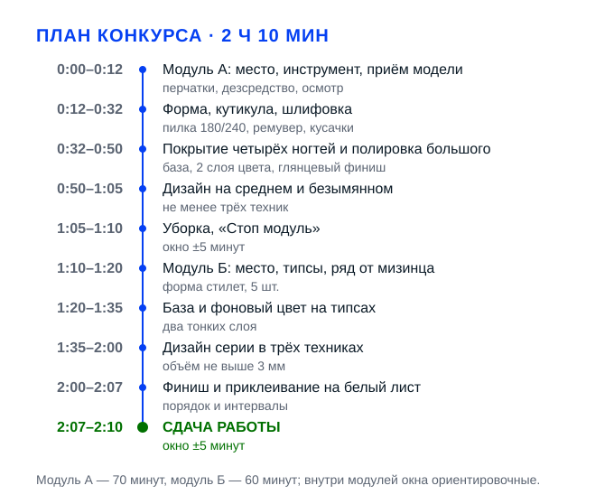
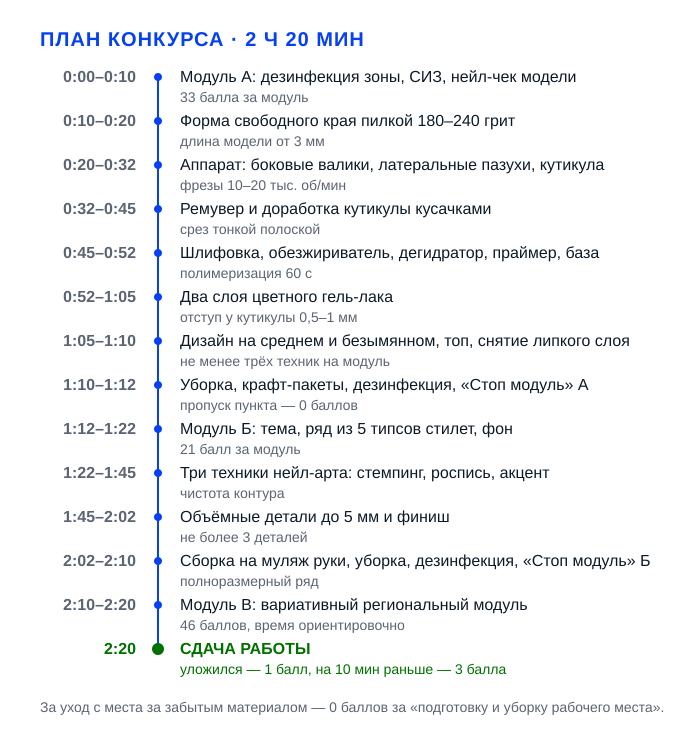
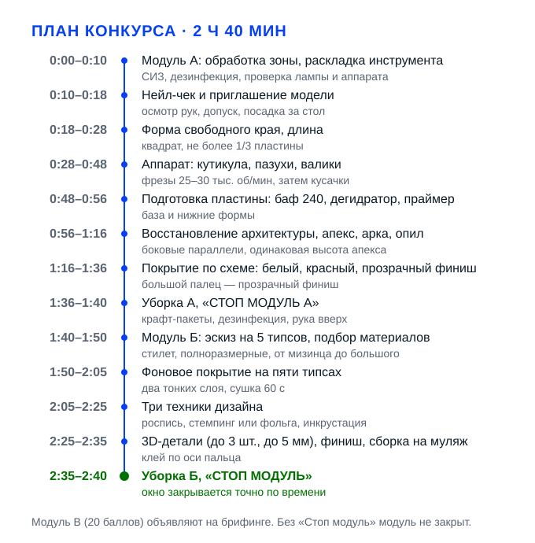

Ногтевой сервис (Р)
Задания ниже — официальные файлы «Абилимпикс» (источник: abilympics-russia.ru), разложенные по категориям. Решения написаны по тексту задания, регламенту и критериям оценки; в них указано, что именно проверяет эксперт.
Школьник
14–16 лет, базовый уровень заданияВыдержка из официального конкурсного задания: страницы, относящиеся к категории «Школьник» (стр. 7–8, 13–15 источника).
Пошаговое решение
Задание для школьников состоит из двух модулей общей длительностью два часа десять минут. В модуле А за 70 минут нужно выполнить салонный маникюр на одной руке модели, совместив три техники — классическую, препаратную и пилочную: снять кутикулу ремувером и инструментом, придать форму, отшлифовать пластину, покрыть четыре ногтя ярким гель-лаком по схеме «база — цвет — финиш» с отступом 0.5–1 мм у кутикулы, отполировать большой палец до зеркального блеска и выполнить дизайн на среднем и безымянном пальцах. В модуле Б за 60 минут оформляется дизайн на пяти типсах формы стилет: тема свободная, но техник должно быть не меньше трёх, ряд обязан сохранить полноразмерность, а работа приклеивается на белый лист. Аппарат с фрезами, масло, спирт, тоники, выравнивание пластины и матовый финиш в модуле А запрещены, поэтому расчёт строится на ручном инструменте и точном времени выдержки ремувера.

Задача 1. Развернуть рабочее место и принять модельМодуль А · 70 мин · подготовительный этап
Семьдесят минут модуля А начинаются не с пилки, а со стола: пока поверхности не обработаны, инструмент не разложен по зонам, а модель не осмотрена, ни один следующий шаг не считается выполненным по технологии. На подготовку уходит десять–двенадцать минут, и эти минуты возвращаются сторицей, потому что дальше рука идёт за инструментом не глядя, а спорные моменты по коже и ногтям уже выяснены с экспертом до первого движения пилкой.
Действие 1.1. Обработать поверхности, инструмент и руки
Шаг 1.1.1
Надеваем нитриловые перчатки до того, как коснулись стола, и протираем рабочую поверхность дезинфицирующим средством в концентрации и с экспозицией по этикетке — обычно это один к одному или готовый раствор на три минуты. Движение одно: от дальнего края к себе и слева направо, без возвратов и кругов, чтобы не размазывать снятую грязь обратно по чистому. Проходим кромку стола, подлокотник, кнопки лампы и корпус сушилки, потому что модель кладёт на них предплечье, а эксперт смотрит зону целиком, а не только пятно под руками.
Санитарная обработка рабочих поверхностей в перчатках — первое требование обязательной последовательности модуля А, и её отсутствие видно сразу по сухому столу и забытой упаковке салфеток. Критерий «Общее впечатление от работы в целом» (гармоничность и чистота исполнения) открывается именно здесь: стол, на котором лежат разводы, читается как небрежность ещё до того, как вынута пилка.
Через три минуты после протирания стол на ощупь сухой, без липкой плёнки, запаха хлора и волокон от салфетки. Проведите по поверхности тыльной стороной кисти в перчатке: она должна скользить, а не прилипать. Перчатки при этом целые, без порезов на пальцах, потому что рабочий инструмент острый.
Частая ошибка — протереть только пятачок под лампой, оставив пыль на дальнем крае и на подлокотнике. Вторая — работать в перчатках, снятых «на минутку», чтобы удобнее было открыть флакон: с этого момента санитарный блок считается нарушенным, а следом тянется вопрос, чем именно вы касались инструмента.
Эксперт подходит к столу на старте модуля и смотрит сухость поверхности, наличие перчаток и упаковку дезсредства на виду; отдельно фиксируется, обработаны ли кромка стола и зона лампы.
Шаг 1.1.2
Вскрываем крафт-пакет со стерильным инструментом при модели и раскладываем его на лотке в порядке работы: слева пушер, рядом кусачки, ножницы и твизер, справа пилки. Каждую единицу проверяем на пальцах: у кусачек должен быть плотный, без люфта ход ручек и сомкнутые губки, у ножниц — ровный рез по всей длине, у пушера — целое лопаткообразное жало без заусенца. Пилки берём с зерном 180 для формы и 240 для шлифовки пластины, щётку для маникюра ставим отдельно от инструмента, чтобы не смешивать стерильное с рабочим.
Тупые кусачки не срезают кутикулу, а рвут её, и вместо чистой линии получается рваный край с кровоточащей ранкой — это сразу минус по чистоте исполнения и риск воспаления у модели. Проверка инструмента до начала работы входит в подготовительный этап, заявленный в задании, и занимает меньше минуты против десяти минут переделки уже покрытого ногтя.
Кусачки смыкаются с сухим щелчком и не закусывают бумажную салфетку, ножницы режут её по всей длине без затягивания, на лезвиях нет скола и ржавой точки. Стерильная упаковка вскрыта при модели, а не заранее: дата и целостность пакета читаются экспертом в этот момент.
Реальная ошибка — достать инструмент из сумки заранее и положить на стол до прихода модели: стерильность потеряна, а доказать обратное невозможно. Вторая — работать пилкой с истёртым зерном: она полирует вместо того, чтобы снимать длину, и свободный край начинает слоиться через два дня, что заметно на фото работы.
Эксперт проверяет вскрытие стерильной упаковки и состояние режущих кромок, а в течение модуля следит, кладёте ли вы инструмент на лоток, а не на клеёнку.
Шаг 1.1.3
Моем руки с мылом не меньше двадцати секунд, проходя большие пальцы, межпальцевые промежутки и ногтевые ложа, затем наносим пенку для очищения рук и снимаем её салфеткой. Кожный антисептик наносим на сухие руки и втираем до полного высыхания, не вытирая полотенцем: мокрые руки разбавляют состав, и он перестаёт работать. Ту же процедуру повторяем для модели — сначала мыло, потом антисептик, причём отдельно обращаем внимание на кисть, которая будет в работе, и на запястье, где кожа чаще всего остаётся сухой и необработанной.
Гигиеническая обработка своих рук и кожи рук модели прописана в основном этапе задания отдельной строкой, и это логично: за семьдесят минут вы десятки раз коснётесь кожи и ногтевого ложа, а антисептик после ремувера — единственный разрешённый способ обезжирить пластину, поскольку спирт и тоники в модуле А запрещены. Значит, качество этой обработки напрямую определяет, ляжет ли база ровно и не поднимется ли она у кутикулы.
Кожа сухая, без скользкой плёнки, запах антисептика выветрился, а между пальцами нет остатков крема. Проверить просто: приложите тыльную сторону кисти к тыльной стороне руки модели — поверхности должны быть сухими и не липнуть друг к другу.
Классическая ошибка — помыть руки один раз в начале и считать вопрос закрытым, хотя после каждого контакта с чужой кожей и после уборки обрезков руки обрабатываются заново. Вторая — нанести антисептик на влажные руки: он ложится плёнкой, а база на такой пластине поднимается по краю уже на второй день носки.
Эксперт смотрит обработку рук в момент её выполнения, а не по остаткам флакона на столе, и отдельно отмечает, повторяется ли она после снятия кутикулы.
Действие 1.2. Собрать материалы и убрать запрещённое
Шаг 1.2.1
Раскладываем стол по трём зонам: справа от модели инструмент и лоток, слева расходники — салфетки, палочки, ремувер, кисти, в центре лампа и место под руку модели на валике или свёрнутом полотенце. Мусорный пакет крепим на струбцине справа под столом так, чтобы обрезки падали в него, а не на клеёнку, и ставим на стол закрытую ёмкость под использованные салфетки. Всё, чем не будете пользоваться в этом модуле, убираем в тулбокс и закрываем: лишние флаконы на столе мешают движению и визуально превращают рабочее место в склад.
Зонирование — не эстетика, а экономия времени внутри жёстких семидесяти минут: когда пилка, кусачки и кисть лежат на фиксированных местах, рука не ищет их вслепую и не сбивает открытые флаконы. Плюс рабочее место нужно содержать в чистоте и порядке в период работы, и это требование проверяется не в конце модуля, а по ходу, поэтому порядок выгоднее поддерживать, чем наводить.
На столе нет ничего, что вы не планируете взять в руки в ближайшие десять минут; мусор уходит в пакет, а не лежит кучкой у лампы; ёмкость для отходов закрыта. Проверьте локтем: зона слева и справа не должна задеваться при движении руки с пилкой.
Ошибка — разложить всё сразу и в один ряд: пятнадцать флаконов в поле зрения заставляют тянуться через руку модели и опрокидывать баночки. Вторая — держать мусорный пакет открытым сверху стола: обрезки и пыль от пилки летят в сторону рабочей зоны.
Эксперт оценивает организацию места на старте и потом возвращается к нему в середине модуля: смотрит, поддерживается ли порядок после снятия кутикулы и окрашивания.
Шаг 1.2.2
Проверяем гель-лаки: яркий цвет по заданию, прозрачная база и глянцевое финишное покрытие — матовое в модуле А запрещено. Флакон с цветом прокатываем между ладонями и переворачиваем два-три раза, но не трясём: пузыри в гель-лаке дают крапины на покрытии. Лампу включаем заранее и проверяем таймер на сорок пять или шестьдесят секунд, смотрим, все ли светодиоды горят и чист ли отражатель от геля и пыли. Кисти для дизайна раскладываем по толщине: тонкая колонковая для линий, плоская для заливки, дотс для точек.
Простое покрытие без выравнивания оценивают по плотности и глянцу, а плотность зависит от того, перемешан ли пигмент: непромешанный яркий гель-лак даёт полосы и просветы у кутикулы, которые видны на любом фото. Глянцевое финишное покрытие прямо требуется заданием, а матовое запрещено, и это один из немногих пунктов, где ошибка стоит всей работы по покрытию.
Все светодиоды лампы горят, таймер срабатывает и гаснет, отражатель чистый; на тыльной стороне кисти проба цвета даёт ровный плотный слой без полос. Флаконы закрыты и стоят на подставке, а не лежат на боку, где гель-лак затекает в резьбу.
Самая обидная ошибка — яркий гель-лак, который не размешали после долгого хранения: первый слой выходит бледным, второй перекрывает неравномерно, и граница у кутикулы получается грязной. Вторая — забыть про глянцевый финиш и взять матовый «для современности», что прямо запрещено условиями модуля.
Эксперт сверяет набор с разрешённым списком и проверяет, что финиш глянцевый, а выравнивающих баз на столе нет. Проверяет он и то, размешан ли цвет: на пробной капле видно, ложится пигмент полосой или ровно.
Шаг 1.2.3
Проходим по столу глазами эксперта и убираем всё, что в модуле А запрещено: аппарат для маникюра с фрезами, масло для кутикулы, спирт, тоники, выравнивающие базы для архитектуры, объёмные детали для дизайна и матовый топ. Аппарат убираем целиком, вместе с блоком питания и наконечником, потому что даже выключенный на столе он читается как приготовление к аппаратной технике. Если что-то из запрещённого принесено в тулбоксе, оставляем его закрытым и не достаём: задание разрешает домашний набор, но не отменяет ограничений модуля.
Задание школьников прямо перечисляет запреты, и они не рекомендательные: аппаратная обработка, масло, спирт, тоники, выравнивание и матовый финиш исключены из технологии. Нарушение снимает баллы сразу по нескольким критериям, а работа, сделанная аппаратом, вообще не может быть зачтена как совмещение классической, препаратной и пилочной техник, которое требуется в этом модуле.
На столе нет ни одного предмета из запрещённого списка, тулбокс закрыт, а разрешённый набор — ремувер, пилки, кусачки, ножницы, твизер, пушер, щётка, антисептик, лампа, жидкость для снятия липкого слоя — на виду и под рукой. Пройдите по списку из задания сверху вниз, это две минуты.
Типичный промах — оставить на столе флакон масла для кутикулы «на всякий случай» и не использовать его, но эксперт видит флакон и фиксирует нарушение условий. Второй — принести выравнивающую базу и применить её «тонко»: выравнивание ногтевой пластины запрещено, и лишние двадцать минут уходят в минус.
Эксперт просматривает рабочее место на соответствие разрешённому и запрещённому перечням до старта работы и может вернуться к проверке в любой момент модуля.
Действие 1.3. Принять модель и провести осмотр
Шаг 1.3.1
Приглашаем модель, усаживаем напротив, под правую руку кладём валик или свёрнутое полотенце так, чтобы кисть лежала расслабленно и не свисала с края стола. Лампу ставим слева и чуть сверху, на уровне глаз модели, а не над ногтями, иначе тень от вашей руки закрывает зону кутикулы. Коротко объясняем, что будем делать и сколько это займёт, просим снять кольца и браслеты, уточняем, нет ли аллергии на ремувер и гель-лаки, и договариваемся, что модель не убирает руку без предупреждения.
Расслабленная кисть на валике даёт устойчивое положение пальцев, а это прямо влияет на ровность линии у кутикулы: на напряжённой руке кожа натягивается и после снятия кутикулы линия уезжает. Освещение сбоку нужно, чтобы видеть настоящий рельеф пластины и границу ороговевшей кожи, а разговор об аллергии — часть профессионального подхода, который оценивают в общем впечатлении от работы.
Кисть лежит на валике без напряжения, пальцы полусогнуты, лампа не слепит модель и не бросает тень на рабочий палец. Украшения сняты и убраны со стола, а не оставлены рядом с лотком. Проверьте также, что модель не опирается локтем на край стола: так рука дрожит и линия у кутикулы уезжает.
Ошибка — начинать работу, не договорившись с моделью: она уберёт руку в момент снятия кутикулы, и вы получите порез или рваную линию. Вторая — поставить лампу строго сверху: блик на глянце маскирует непрокрашенную зону у кутикулы, и дефект обнаруживается только на фотоотчёте.
Эксперт наблюдает за посадкой модели и за тем, как участник выстраивает контакт: это часть общего впечатления и оценки коммуникации на площадке. Отдельно отмечается, предупреждён ли участник о том, что руку нельзя убирать без слова.
Шаг 1.3.2
Проводим осмотр: смотрим кожу кисти на покраснения, шелушение и микротрещины, ногтевую пластину — на деформацию, пятна, расслоение, кутикулу и боковые валики на объём ороговевшей кожи. Отдельно оцениваем свободный край: у кого-то он сточен с одной стороны, у кого-то длиннее на указательном пальце, и от этого зависит, какую форму получится вывести без потери длины. Если видите признаки воспаления, грибка или свежую ранку, сразу показываете эксперту и работаете по его решению, а не «обходя» палец молча.
Осмотр прописан в обязательной последовательности основного этапа и нужен по двум причинам: чужая кожа может быть с повреждением, которое нельзя обрабатывать ремувером, и состояние пластины определяет, где можно снять длину, а где нельзя. Критерий «Чистота выполнения» начинается с того, что мастер увидел проблему до работы, а не после.
Запоминаем три вещи по каждому пальцу: длину свободного края, толщину кутикулы и отклонение оси. Форму выбираем так, чтобы все пять ногтей читались как один ряд по длине и ширине, а большой палец не выбивался из линии.
Ошибка — «пропустить» осмотр, потому что и так всё видно: на третьем пальце обнаруживается заусенец, который вы срезаете как кутикулу, и получаете ранку у основания ногтя. Вторая — молча работать с воспалённым валиком и получить реакцию на ремувер.
Эксперт отмечает, проводится ли осмотр и озвучиваются ли его результаты; при спорной ситуации на коже именно этот шаг показывает, что участник действовал по протоколу.
Шаг 1.3.3
Обрабатываем кожу рук модели антисептиком на сухую кожу и даём высохнуть, затем накрываем её одноразовой салфеткой до начала работы. Свои руки в перчатках протираем салфеткой с антисептиком, меняем перчатки, если работали в них с уборкой. Дальнейшую работу ведём без перчаток по разрешению: в модуле А перчатки нужны для санитарной обработки поверхностей, а тонкая работа с кутикулой в них неудобна и опасна.
Задание разрешает проведение процедуры без перчаток, но требует антисептик, и это единственный дезинфицирующий состав, который в модуле А не запрещён. Кожа, обработанная заранее, меньше реагирует на ремувер, а смена перчаток после уборки убирает перенос пыли со стола на руки модели.
Кожа модели сухая, антисептик впитался, запаха нет; на руках нет следов дезсредства и пыли от пилки. Перчатки, в которых проводилась уборка, сняты и выброшены, а не лежат на столе. Заодно убедитесь, что на столе нет открытой бутыли с дезсредством: её пары мешают работе с гель-лаком.
Частая ошибка — работать в тех же перчатках, в которых протирали стол: на них остаётся дезраствор, и он попадает в зону кутикулы, вызывая жжение и покраснение. Вторая — оставить модель с непросохшим антисептиком, из-за чего база ложится плёнкой и потом отслаивается.
Эксперт фиксирует порядок обработки: сначала поверхность, потом руки, потом модель, и следит за сменой перчаток. Он же смотрит, не осталось ли на столе открытых флаконов и использованных салфеток к моменту начала работы.
Задача 2. Выполнить маникюр без аппарата: форма, кутикула, шлифовкаМодуль А · препаратная, классическая и пилочная техника
Здесь делается то, что эксперт потом рассматривает в лупу: ровная линия свободного края, чистая зона кутикулы без разрывов кожи и матовая, обезжиренная пластина под покрытие. Модуль требует совмещения трёх техник — препаратной (ремувер), классической (кусачки, ножницы, твизер) и пилочной (форма и шлифовка), и порядок шагов в задании жёсткий: сначала форма, потом приподнятая кутикула и шлифовка, и только затем ремувер, потому что размягчённую кожу шлифовать нельзя.
Действие 2.1. Задать форму свободному краю и обработать валики
Шаг 2.1.1
Берём пилку 180 грит и ставим её под углом примерно сорок пять градусов к плоскости ногтя, чтобы опиливать свободный край снизу вверх, а не пилить пластину плашмя. Движение однонаправленное, от бокового валика к центру, и повторяется до тех пор, пока линия не станет ровной: возвратно-поступательные движения «туда-обратно» распиливают слои и дают расслоение на торце. Форму выбираем по пластине: при коротком широком ногте — мягкий квадрат со скруглением, при длинном узком — овал, но на всех четырёх пальцах одной руки форма должна читаться как одна.
Форма входит в критерий «Чистота выполнения дизайна» и в общее впечатление: даже идеальное покрытие на неровной линии смотрится как ученическая работа. Пилочная техника — одна из трёх обязательных в модуле А, и её выполнение оценивают отдельно от ремувера и кусачек, поэтому важно, чтобы следы пилки были видны как аккуратная обработка, а не как подпиливание на глаз.
Смотрим на вытянутую руку модели: все четыре ногтя дают одинаковую дугу, уголки не цепляют кожу, торец гладкий на ощупь подушечкой пальца. Проведите ногтем по салфетке — зацепок быть не должно, иначе покрытие ляжет волной.
Типичная ошибка — пилить по длине слишком коротко, оставляя «ступеньку» у одного угла: покрытие на таком угле скалывается в первый же день. Вторая — срезать длину на мокром ногте после ремувера, когда пластина размягчена и потом садится неровно.
Эксперт смотрит форму на просвет и с торца, а также проверяет, одинаково ли выведена линия на всех четырёх пальцах. Тут он проверяет угол наклона пилки в движении: работа плашмя видна по широкому матовому следу на пластине.
Шаг 2.1.2
Опиливаем боковые валики от ороговевшей кожи той же пилкой 180, придерживая палец модели своей рукой и слегка отводя кожу в сторону от пластины. Работаем короткими движениями по кромке валика, не заходя на кожу и не снимая живой слой: снимается только белесая, сухая роговая масса, которая при нажатии не чувствуется как живая ткань. На каждом пальце проходим не больше пяти-шести движений, иначе на коже останется просвечивающая полоса, которая на следующий день станет натёртостью.
Боковые валики в задании школьников названы отдельно как зона, которую нужно обработать пилкой, потому что именно там чаще всего остаётся ороговевшая кожа, портящая вид даже при чистой кутикуле. Это и есть пилочная часть совмещённой техники: ремувер до валика не достаёт так, как пилка, а кусачки на валике применять опасно.
Кожа у боковых валиков ровная, матовая, без белых чешуек; при отведении кожи в сторону граница ногтя остаётся чистой, без пилки в кармане. Модель не должна чувствовать жжения или покалывания в этих зонах.
Самая частая ошибка — «перестараться» и спилить валик до розовой кожи: это микротравма, после которой ремувер щиплет, а покрытие у края ложится на повреждённую кожу и отходит. Вторая — водить пилкой по валику вбок, оставляя параллельные борозды.
Эксперт осматривает валики под лампой и проверяет, нет ли покраснения: излишнее усердие здесь штрафуется так же, как недоработка. Красные полосы у валиков он относит к травме кожи, а не к недоработке.
Шаг 2.1.3
Проверяем длину и симметрию по всей руке: сравниваем четыре ногтя между собой и с большим пальцем, у которого по заданию длина сохраняется, но форма выравнивается по остальным. Если один палец длиннее на миллиметр, снимаем лишнее с самого длинного, а не подтягиваем остальные: в запасе должно остаться не меньше двух миллиметров свободного края над подушечкой. После подпиливания смахиваем пыль щёткой для маникюра, а не сдуваем её на модель.
Ряд от мизинца к большому — это то, что видно на фото работы и на что смотрят в критерии «Композиция, компоновка»: разнобой в длине ломает цельность картины даже при хорошем дизайне. Щётка вместо сдувания нужна потому, что пыль от пилки раздражает дыхательные пути и глаза модели, а на площадке это ещё и вопрос санитарных требований.
Все четыре ногтя одной длины в пределах половины миллиметра, большой палец не выбивается по силуэту, пыли на пластине и на коже нет. Посмотрите на кисть с расстояния вытянутой руки — ряд должен читаться ровно.
Ошибка — подравнивать «по памяти», не перевернув руку: с ладони ногти выглядят по-другому, и разница в длине видна только с тыльной стороны. Вторая — оставить пыль в боковых карманах, где она потом смешивается с базой.
Эксперт оценивает ряд целиком на вытянутой руке и отдельно смотрит, не осталась ли пыль в зоне кутикулы. Смотрит он и на пыль: она не должна лежать на коже или на белом листе рядом с рукой.
Действие 2.2. Приподнять кутикулу пушером и отшлифовать пластину
Шаг 2.2.1
Металлическим пушером с лопаткой аккуратно приподнимаем кутикулу по всей дуге ногтя: лопатку ставим плашмя, прижимаем к пластине и ведём от одного бокового кармана к другому, не заглубляя край в кожу. Движение идёт по пластине, а не режущими кромками по кутикуле: наша задача — отделить кожу от ногтя на доли миллиметра, а не снять её. Угол наклона инструмента — около тридцати градусов, нажим слабый, потому что на этом этапе кожа ещё не размягчена и легко рвётся.
Приподнятая кутикула даёт ремуверу доступ к основанию ногтя, и состав работает по всей глубине кармана, а не только по поверхности кожи — это и есть препаратная техника, заявленная в модуле. Кроме того, ровно приподнятая кутикула потом снимается одной чистой линией, а без этого шага приходится много раз возвращаться кусачками к одному и тому же месту.
Кутикула приподнята по всей дуге, карман открыт, крови и покраснения нет; лопатка идёт по пластине с лёгким сопротивлением, но без скрипа. Проверьте боковые карманы — там чаще всего остаётся неотделённая кожица.
Ошибка — давить пушером вглубь кармана: там живая ткань, и вместо отделения получается надрыв, который потом кровит при нанесении ремувера. Вторая — пройти только центр ногтя и забыть про карманы, где кутикула самая толстая.
Эксперт смотрит угол инструмента и отсутствие повреждений кожи; резкие движения и нажим в глубину фиксируются как нарушение техники. Здесь он отмечает, придерживает ли участник палец модели при работе пушером.
Шаг 2.2.2
Проходим пластину бафом 240 грит мягкими движениями по направлению роста ногтя, снимая только микрорельеф и блеск, но не истончая пластину. Нажим лёгкий, движения идут от кутикулы к свободному краю и только в одну сторону; на каждом ногте хватает пяти-шести проходов. Особое внимание — зоне у кутикулы и боковым валикам, где остаётся самая заметная шероховатость, и торцу, который потом нужно «запечатать» базой.
Пилочная техника в этом модуле — не только форма, но и шлифовка: задание прямо требует отшлифовать ногтевую пластину перед ремувером и покрытием. Матовая, обеспыленная поверхность даёт базе сцепление, а на глянцевой пластине покрытие держится хуже и поднимается по краям уже к концу недели.
Пластина матовая и ровная на просвет, без борозд от бафа и без блестящих пятен; пыль снята щёткой и сухой салфеткой. Проведите пальцем в перчатке — поверхность должна быть шероховатой, но не цеплять. Следите и за тем, чтобы состав не подсох: подсохший ремувер снимается плёнкой и не работает.
Ошибка — шлифовать с нажимом и «до блеска» в обратную сторону: пластина истончается, и на ней появляются полосы, которые видны под цветом. Вторая — не убрать пыль, из-за чего база скатывается в комочки.
Эксперт смотрит на пластину под боковым светом: борозды и истончение видны сразу, а на ощупь проверяется равномерность матовости. Отдельно он проверяет, не растёкся ли состав на пластину и не попал ли на кожу кисти.
Действие 2.3. Размягчить кутикулу ремувером и снять массу палочкой
Шаг 2.3.1
Наносим ремувер на зону кутикулы тонким слоем, строго по коже вокруг ногтя, не заходя на пластину дальше приподнятого кармана, и держим по времени, указанному на упаковке, — обычно от одной до трёх минут. Наносим деревянной палочкой или аппликатором, а не кистью, чтобы не тянуть кожу; на каждом пальце слой одинаковый по толщине, иначе на одном ногте состав сработает, а на другом нет. Если ремувер жжёт модель, состав снимаем сразу и промываем зону водой, а не ждём «пока подействует».
Ремувер — единственное средство для удаления кутикулы, разрешённое в этом модуле, и его время выдержки определяет, снимется ли кожа чисто или придётся резать живую ткань. Передержанный состав размягчает кожу до состояния «плывущей» и даёт раздражение, недодержанный — не отделяет роговой слой, и кусачки начинают рвать.
Кожа вокруг ногтя побелела и выглядит размягчённой, модель не чувствует жжения; состав не растекается на пластину и не затекает под валик. Проверьте время по часам на столе, а не по ощущению, потому что внутри модуля минуты летят незаметно.
Ошибка — нанести ремувер на все десять пальцев сразу: пока дойдёте до последнего, на первом состав пересохнет и начнёт щипать. Вторая — жалеть состав и наносить «чуть-чуть», тогда снятие идёт с многократными подходами и рваной линией.
Эксперт обращает внимание на дозировку и время: ремувер должен работать на коже, а не высыхать на пластине. Далее он фиксирует, меняется ли положение пальца модели для доступа к боковым карманам.
Шаг 2.3.2
Снимаем размягчённую кожу деревянной палочкой: ставим её под углом и короткими движениями от себя отодвигаем роговую массу от пластины, снимая её на палочку, а не размазывая по коже. После каждого пальца палочку меняем или протираем салфеткой, чтобы снятая масса не возвращалась обратно в карман. Проходим по дуге дважды — сначала основную массу, потом остатки у самых карманов, и только после этого оцениваем, что осталось снимать инструментом.
Именно этот шаг отделяет препаратную технику от классической: основную массу убирает состав и палочка, и кусачки потом работают по тонкой плёнке, а не по толстому слою. Чистота линии у кутикулы, которую требует задание вместе с отступом покрытия в 0.5–1 мм, рождается здесь, а не на этапе покраски.
В кармане не осталось белых комочков, кожа вокруг ногтя ровная и тонкая, на палочке видна снятая масса, а не живая ткань с кровью. Проверьте зону под лампой сбоку: при боковом свете видно всё, что осталось.
Самая частая ошибка — тереть палочкой вбок, из-за чего кожа натягивается и рвётся неровной бахромой. Вторая — снимать всё палочкой до конца, включая плотную кутикулу у основания: так её размазывают по пластине, и потом база ложится на жирную плёнку.
Эксперт смотрит на рабочее поле после палочки: от него зависит, сколько работы останется кусачкам, и видно ли вообще препаратная техника. Он же смотрит, не осталось ли волокон кожи на боковых валиках после снятия заусенцев.
Действие 2.4. Снять кутикулу инструментом и подготовить ногти к покрытию
Шаг 2.4.1
Берём кусачки с прямыми губками, ставим их под углом к коже так, чтобы срезаемая полоска кутикулы попадала между губками целиком, и снимаем её короткими кусочками по одному-два миллиметра, ведя от одного кармана к другому. Губки должны смыкаться на коже, а не тянуть её: если кутикула тянется за инструментом, значит, захват слишком глубокий. Двигаемся одной линией без возвратов, потому что повторный проход по уже снятому месту оставляет ступеньку и травмирует кожу.
Классическая техника в модуле А — это работа кусачками, ножницами и твизером по показаниям, и её отличие от аппаратной в том, что мастер снимает только то, что действительно ороговело. Чистая линия кутикулы — половина оценки за чистоту исполнения: по ней видно, держал ли участник инструмент ровно и не рвал ли кожу.
Линия по всей дуге ногтя ровная, без ступенек, крови и красных точек; кутикула снята до тонкой кожи, но карман не обнажён. Проведите по линии салфеткой — на ней не должно остаться розовых следов. Смотрите и на торцы: у них матовость должна быть такой же, как у ложа.
Ошибка — захватывать кусачками крупные куски: губки тянут кожу и оставляют рваную рану, которая потом кровит под базой. Вторая — снимать кутикулу «до блеска», срезая защитный слой, после чего у модели появляется раздражение и сухость.
Эксперт проверяет линию кутикулы визуально и на ощупь, а также смотрит, меняет ли участник положение пальца для доступа к боковым карманам. Тут он проверяет, не осталось ли на пластине блестящих пятен, которые дают слабое сцепление.
Шаг 2.4.2
Заусенцы и торчащие кусочки кожи убираем по одному: каждый захватываем у самого основания, у кожи, и срезаем коротко, не вытягивая. Если заусенец уходит вглубь, его не выдёргиваем, а аккуратно подрезаем ножницами с загнутыми концами, держа лезвие параллельно коже. Твизером снимаем тонкие плёнки в боковых карманах, где кусачки не достают, но делаем это без нажима, только по поверхности.
Оставленный заусенец к концу модуля цепляется за волосы и одежду, модель его отрывает, и на фото работы появляется красная ранка у ногтя. Аккуратно снятый заусенец — это и есть та «тщательность проработки деталей», о которой говорит критерий чистоты выполнения дизайна.
Кожа вокруг ногтя гладкая, заусенцев нет даже при отведении валика в сторону; модель не чувствует покалывания при нажатии. Посмотрите зону с лупой или просто вплотную под лампой — торчащие волокна видны сразу.
Ошибка — вытянуть заусенец «с корнем»: остаётся открытая борозда, которая воспаляется. Вторая — срезать заусенцы кусачками на весу, не придерживая палец, из-за чего вместе с кожей снимается лишнее. Третья ошибка — протирать пластину влажной салфеткой: вода в кармане у кутикулы потом даёт пузырь под базой.
Эксперт осматривает кожу по периметру каждого ногтя, особенно боковые карманы, где заусенцы остаются чаще всего. Здесь он смотрит, не касается ли участник пластины пальцами после обработки антисептиком.
Шаг 2.4.3
Удаляем остатки ремувера: промываем зону щёткой для маникюра с мыльной пенкой или протираем влажной салфеткой, снимая состав из карманов полностью, а затем просушиваем кожу сухой салфеткой. Важно не просто стереть видимый слой, а вымыть состав из-под кутикулы, где он остаётся дольше всего. После просушивания прикладываем кожный антисептик и даём ему высохнуть естественно, не вытирая, — это последняя обработка перед покрытием.
Остатки ремувера под базой дают отслойку у кутикулы в первые два-три дня, и это самая заметная потеря баллов, потому что дефект идёт ровно по той линии, которую эксперт рассматривает в первую очередь. Антисептик по заданию наносится после удаления ремувера, и он же обезжиривает пластину, поскольку спирт и тоники в модуле запрещены.
Кожа не скользит, запаха ремувера нет, при нажатии салфеткой на карман не остаётся жирного следа. Пластина матовая, без блеска и без липкой плёнки — по ней база должна ложиться ровно, не собираясь в капли.
Ошибка — протереть только видимую часть и оставить ремувер в карманах: через день покрытие приподнимается по дуге. Вторая — смыть состав спиртом или тоником, что прямо запрещено условиями модуля. Третья ошибка — торопиться и начинать красить на влажную кожу вокруг ногтя: база собирается у края в каплю.
Эксперт может проверить зону кутикулы салфеткой на жирность и отдельно отмечает, чем именно обработана пластина перед покрытием. Далее он проверяет, высох ли антисептик до начала покрытия, и не осталось ли липкой плёнки.
Шаг 2.4.4
Обезжириваем и подсушиваем пластину антисептиком на безворсовой салфетке, проходя каждую пластину отдельно и меняя салфетку после двух-трёх пальцев, затем даём полностью высохнуть в течение тридцати секунд. С этого момента не касаемся пластины пальцами и не даём модели трогать лицо или волосы: любое касание возвращает жир, и база ложится пятнами. Инструмент для дизайна и кисти раскладываем рядом, чтобы после базы не искать их по столу.
Между шлифовкой и покрытием проходит последняя подготовка, и она решает, будет ли покрытие ровным и плотным по всей площади ногтевого ложа — именно этого требует задание вместе с четкой границей вдоль кутикулы. Обезжиривание антисептиком здесь единственный разрешённый вариант, поэтому делаем его тщательно и без спешки.
Салфетка после протирания чистая, без серого следа от пыли; пластина полностью сухая, без блеска. Проверьте, что кожа вокруг ногтя тоже сухая, иначе база поплывёт по влаге. Проверьте и кожу вокруг ногтя: на ней не должно быть ни пыли, ни влаги.
Ошибка — протирать все четыре ногтя одной салфеткой: с третьего пальца она уже несёт пыль и жир. Вторая — начинать красить сразу после антисептика, не дождавшись высыхания, из-за чего база мутнеет. Третья ошибка — держать открытым флакон с антисептиком рядом с лампой: брызги попадают на базу.
Эксперт фиксирует, чем обработана пластина и не осталось ли на ней пыли, влаги или следов масла перед нанесением базы. Он же отмечает, разложены ли кисти и дизайнерские материалы до начала покрытия.
Задача 3. Покрыть четыре ногтя гель-лаком и отполировать большой палецМодуль А · простое покрытие без выравнивания
Задание требует простого покрытия без выравнивания на четырёх пальцах: база, яркий цвет и глянцевое финишное покрытие, граница у кутикулы с отступом 0.5–1 мм. Большой палец остаётся без цвета — его полируют до зеркального блеска, и это отдельная проверка пилочной техники. Ошибки здесь самые заметные: затёк на кожу, бугор у кутикулы или мутный финиш видны на фото крупным планом.
Действие 3.1. Нанести базу и закрыть торец
Шаг 3.1.1
Набираем базу на кисть так, чтобы капля держалась на кончике и не стекала, и распределяем её тонким слоем от середины пластины к краям: сначала по центру двумя-тремя мазками, затем разводим к боковым параллелям, не доходя до кожи примерно полмиллиметра. Кисть держим почти плашмя, ведём от кутикулы к свободному краю, а не наоборот, и не возвращаемся кистью в уже нанесённый слой — от этого появляются полосы. Слой базы должен быть тоньше волоса: задача базы — сцепление, а не толщина.
Задание прямо запрещает выравнивание ногтевой пластины, поэтому база наносится тонко и повторяет рельеф ногтя — это принципиальный пункт модуля, за него и оценивают «простое покрытие». Тонкий слой полимеризуется полностью, а толстый остаётся гелевым внутри и даёт отслойку по краю уже через несколько дней.
База легла ровно, без пропусков и наплывов у кутикулы; на просвет видно, что слой одинаковый по всей площади. Проведите по пластине зубочисткой у боковой параллели — бороздки от кисти быть не должно. Проверьте, что у кутикулы нет капли: она проявляется уже после сушки как бугор.
Ошибка — набрать базу «пожирнее», чтобы держалось крепче: получается волнистая поверхность, и цвет на ней лежит неравномерно. Вторая — начать от свободного края и оставить непрокрытой зону у кутикулы, где потом появляется скол.
Эксперт смотрит толщину у кутикулы и на торце: именно там видно, выравнивал участник пластину или покрывал тонко. Тут он смотрит на кисть: излишек базы на ней даёт толстый слой у края.
Шаг 3.1.2
Перед полимеризацией проводим кистью с минимальным количеством базы по торцу ногтя — «запечатываем» свободный край, захватывая срез сверху и чуть снизу, и сразу убираем излишек сухой салфеткой, чтобы база не натекла на кожу под пальцем. Ставим руку в лампу, четыре пальца разводим, чтобы свет попадал на боковые валики, и сушим сорок пять или шестьдесят секунд по инструкции к материалу. Большой палец в этом цикле не участвует: он остаётся чистым под полировку.
Торец — самое уязвимое место: именно с него начинается скол, и именно его требует закрыть технология покрытия. Разведённые пальцы в лампе нужны потому, что светодиоды стоят по краям и при плотно сжатых пальцах боковые зоны недополимеризуются, а недосушенная база потом «плывёт» под цветом.
База на торце видна как тонкая блестящая кромка без бугров, липкий слой равномерный, на коже вокруг ногтя следов нет. Проверьте ногтем другой руки по краю: он не должен проходить под базу. Осмотрите и боковые грани.
Типичная ошибка — «запечатать» торец толстым слоем: получается валик, который потом цепляется за одежду и скалывается вместе с цветом. Вторая — сушить руку, сжатую в кулак, из-за чего полимеризация идёт неравномерно по площади.
Эксперт проверяет торец под лампой и смотрит, разводит ли участник пальцы в лампе: это видимый признак технологической грамотности. Здесь он проверяет, снят ли излишек базы с кожи под свободным краем.
Шаг 3.1.3
До нанесения цвета осматриваем базу на каждом пальце: снимаем сухой салфеткой наплыв, если он всё-таки попал на кожу, и убираем пылинки, которые видны как тёмные точки. Если на каком-то ногте база легла волной или с пропуском у кутикулы, снимаем этот слой салфеткой с жидкостью для снятия липкого слоя и наносим заново, не дожидаясь цвета. Тратить на это полторы минуты дешевле, чем переделывать весь палец после дизайна.
Каждый следующий слой увеличивает дефект: под цветом неровность базы становится рельефом, и убрать её можно только полным снятием. Критерий «Чистота выполнения» оценивает не только дизайн, но и качество покрытия по всей площади ногтевого ложа, поэтому контроль после базы — самая выгодная точка возврата.
Поверхность базы ровная, без пузырей, пыли и наплыва на кожу; липкий слой не стёрт там, где он нужен для сцепления цвета. Осмотрите каждый палец по отдельности, а не всю руку сразу — глаз «замыливается».
Ошибка — оставить наплыв «он всё равно закроется цветом»: цвет ложится на кожу, и граница у кутикулы становится грязной, что сразу видно при сравнении с соседними пальцами. Вторая — стереть липкий слой полностью, после чего цвет держится хуже.
Эксперт осматривает покрытие после каждого слоя и в конце модуля сравнивает все четыре ногтя между собой. Далее он смотрит, не трогает ли участник ногти модели между слоями без необходимости.
Действие 3.2. Положить цвет в два тонких слоя
Шаг 3.2.1
Первый слой яркого гель-лака наносим тонко, почти прозрачно, начиная от кутикулы: ставим кисть у границы кожи под углом и ведём коротким мазком к свободному краю, затем разводим цвет к боковым параллелям. До кожи оставляем 0.5–1 мм — ровно тот отступ, который разрешён заданием, и держим его одинаковым на всех четырёх пальцах. Первый слой не пытается перекрыть пластину полностью: его задача — зацепиться и задать границу.
Граница покрытия вдоль кутикулы названа в задании главным требованием вместе с ровным, плотным, глянцевым покрытием всего ложа. Тонкий первый слой не даёт цвету «уехать» за линию и не создаёт бугра у кожи: если сразу положить плотно, материал стекает к кутикуле и образует валик.
Отступ одинаковый на всех четырёх ногтях, линия повторяет дугу кутикулы без зазубрин; цвет лёг без пропусков, но просвечивает — так и должно быть на первом слое. Проверьте линию сбоку под лампой: при прямом свете затёки почти не видны.
Самая частая ошибка — начинать мазок от свободного края: у кутикулы остаётся неровная кромка и полоска без цвета. Вторая — вести кисть с сильным нажимом, из-за чего цвет ложится пятнами и заходит на кожу.
Эксперт оценивает ровность линии у кутикулы по всем пальцам и сравнивает отступ с допуском 0.5–1 мм. Он же проверяет, не заходит ли цвет на боковые валики: там затёк заметнее всего.
Шаг 3.2.2
Сушим первый слой шестьдесят секунд, вынимаем руку и наносим второй слой плотнее: набираем больше материала, распределяем от кутикулы к краю, не заводя кисть за границу, и обязательно проходим торцом кисти по свободному краю, закрывая срез. Второй слой толще первого, но не настолько, чтобы появился рельеф: общая толщина двух слоёв вместе с базой не должна чувствоваться пальцем при переходе к коже.
Второй слой даёт плотность и цвет, которого требует задание: яркий гель-лак в один тонкий слой всегда просвечивает и выглядит бледным, а на фото это читается как недокрашенное покрытие. Закрытие торца вторым слоем продлевает носку и убирает самую частую причину скола на уголках.
Цвет плотный и одинаковый на всех четырёх ногтях, граница у кутикулы ровная и повторяет дугу, торец закрыт. Посмотрите ногти под лампой под углом тридцать градусов: под таким светом видно любую волну и наплыв.
Ошибка — набирать слишком много цвета на кисть и «растягивать» его: получаются потёки на боковых валиках, а у кутикулы слой недосушенный. Вторая — пропустить торец, из-за чего к вечеру на свободном крае появляется скол.
Эксперт проверяет плотность цвета и одинаковость оттенка на всех пальцах, а также смотрит на просвет у кутикулы. Тут он смотрит на кисть, которой набирается цвет: широкая кисть на узком ногте даёт затёки.
Шаг 3.2.3
Перед финишем проходим тонкой кистью по линии у кутикулы и аккуратно поправляем границу там, где она получилась неровной: лишний цвет снимаем сухой салфеткой сразу, пока он не полимеризован, а пустоту у самой кожи закрашиваем торцом кисти. Если цвет попал на кожу, убираем его ватной палочкой с жидкостью для снятия липкого слоя, но не трогаем уже высушенное покрытие. Затем сушим второй слой и только после этого переходим к финишу.
Ровная граница — то, за что в этом задании дают основную часть баллов по чистоте: допуск 0.5–1 мм означает, что линия должна быть видимой и аккуратной, а не «примерно у кутикулы». Правка до полимеризации занимает секунды, а после — требует снятия слоя и полной перекраски пальца.
Граница читается как одна непрерывная линия без ступенек и наплывов, на коже вокруг ногтя нет цветных следов. Проверьте каждый палец с лупой или просто поднеся к лампе: цветная точка на коже заметна сразу.
Ошибка — стирать затёк после сушки: покрытие поднимается по краю, и там остаётся мутная полоса. Вторая — «подкрашивать» границу поверх высушенного слоя без промежуточной полимеризации, из-за чего получается утолщение у кутикулы.
Эксперт смотрит на линию у кутикулы в лупу и отмечает любой цветной след на коже как нарушение чистоты. Здесь он фиксирует, правится ли линия до сушки или участник ждёт финиша.
Действие 3.3. Закрыть финишем и отполировать большой палец
Шаг 3.3.1
Наносим глянцевое финишное покрытие тонким слоем от кутикулы к свободному краю, проходя торцом кисти по срезу, и сушим шестьдесят секунд; при необходимости повторяем вторым тонким слоем для ровного глянца. Матовый топ в модуле А запрещён, поэтому берём только глянцевый, даже если он кажется менее современным. После сушки снимаем липкий слой безворсовой салфеткой с жидкостью, не задевая кожу вокруг ногтя и не растирая покрытие.
Финиш держит глянец и защищает цвет, а требование «ровное, плотное, глянцевое покрытие» относится именно к нему: мутный или матовый верх обнуляет впечатление от хорошо положенного цвета. Снятие липкого слоя нужно для того, чтобы на поверхности не осталось плёнки, которая собирает пыль и даёт разводы при первом мытье рук.
Поверхность глянцевая и ровная, отражение лампы читается без искажений, липкости нет. Проведите пальцем в перчатке по ногтю: он должен скользить, а не прилипать. Проверьте и кожу вокруг: на ней не должно остаться липких следов от салфетки.
Ошибка — нанести финиш толсто, чтобы «было глянцевее»: появляются потёки у кутикулы и пузыри. Вторая — забыть снять липкий слой, из-за чего поверхность выглядит мутной и на ней остаются отпечатки. Оба дефекта хорошо видны на фото.
Эксперт проверяет глянец на всех четырёх ногтях и отсутствие липкого слоя; матовый финиш фиксируется как нарушение условий модуля. Далее он смотрит на торец: открытый срез читается как незакрытое покрытие.
Шаг 3.3.2
Большой палец по заданию остаётся без покрытия: его полируем бафом последовательно, от 800 к 1200 и затем к 3000 грит, каждый раз меняя направление движения на перпендикулярное предыдущему, чтобы убрать следы предыдущего зерна. Двигаемся от кутикулы к свободному краю, без нажима, по десять–пятнадцать проходов на этап, и обязательно снимаем пыль щёткой между этапами. Финишный глянец доводим полировочной пастой или замшей до состояния зеркала, в котором отражается лампа.
Полировка большого пальца до зеркального блеска прописана в задании отдельным пунктом и проверяет пилочную технику в чистом виде: без покрытия видно каждую борозду и каждый пропущенный участок. Зеркальный блеск — это не косметика, а показатель того, что мастер умеет работать абразивом поэтапно, а не «на глаз».
В поверхности отражается источник света без матовых пятен, при взгляде под углом не видно царапин и следов предыдущего зерна. Проведите ногтем по пластине — она должна быть гладкой, без зацепок. Смотрите на палец под углом тридцать градусов: при прямом свете блеск маскирует борозды.
Ошибка — начать сразу с 3000 грит: глубокие царапины от 180 остаются и видны под лампой как сетка. Вторая — полировать в одном направлении на всех этапах, из-за чего борозды складываются в заметные полосы.
Эксперт смотрит большой палец под лампой под углом и оценивает равномерность блеска по всей площади, включая края. Он же отмечает направление движений бафом: работа в одну сторону оставляет полосы.
Шаг 3.3.3
Финальный контроль перед дизайном: сравниваем четыре покрытых ногтя по цвету, плотности и линии у кутикулы, проверяем, что большой палец не несёт ни капли лака и ни одной цветной точки на коже. Убираем пыль от полировки с руки модели щёткой и влажной салфеткой, потому что пыль попадёт в дизайн и останется под финишем. Если какой-то ноготь выбивается из ряда, решаем сразу: переделать его сейчас дешевле, чем объяснять разницу эксперту в конце модуля.
Покрытие оценивают как систему: четыре ногтя должны читаться одним блоком, а большой палец — как отдельный, но явно полированный элемент. Пыль после полировки — реальная причина брака в дизайне: под финишем она даёт серые точки, которые невозможно убрать без снятия слоя.
Все четыре ногтя одинаковы по цвету и границе, большой палец зеркальный и чистый, на коже нет ни пыли, ни цветных следов. Посмотрите на руку с расстояния вытянутой руки и найдите палец, который выбивается.
Ошибка — оставить пыль на руке и начать дизайн: она смешивается с гель-краской и даёт грязный оттенок. Вторая — не заметить, что на большой палец всё-таки попала база, и предъявить работу с блестящей плёнкой вместо полировки.
Эксперт осматривает руку целиком перед дизайном и в конце модуля, сравнивая все пять пальцев между собой. Тут он сравнивает цвет всех четырёх ногтей: разница в оттенке видна на фото.
Задача 4. Выполнить салонный дизайн на среднем и безымянном пальцахМодуль А · критерии дизайна 1–6
Дизайн на двух пальцах — та часть работы, где разом проверяются шесть критериев задания: общее впечатление, чистота, сложность и техничность, композиция, цветовое решение и оригинальность. Здесь важно не количество материалов, а читаемая идея и минимум три техники, выполненные чисто: стемпинг, роспись кистью, блёстки или фольга. Два пальца должны перекликаться между собой, а не жить отдельными картинками.
Действие 4.1. Придумать тему, палитру и компоновку
Шаг 4.1.1
Перед первым мазком рисуем эскиз на салфетке или в блокноте: два прямоугольника размером примерно с ноготь, на которых простым карандашом намечаем, где будет крупный элемент, где линии и где свободное поле. Тему выбираем такую, которую можно повторить двумя-тремя приёмами и удержать в семидесяти минутах модуля: геометрия, линия-графика, стилизованный растительный мотив или минималистичный сюжет с одной яркой деталью. Пока эскиз не читается на бумаге, на ноготь не переходим.
Критерий «Оригинальность» оценивает необычный подход в выборе темы, а критерий «Композиция, компоновка» — цельность картины и баланс элементов по площади ногтя. Эскиз нужен именно для композиции: на ногте шириной около сантиметра любая ошибка в распределении пятна видна сразу, а исправить её можно только снятием слоя.
На эскизе видно, что крупный элемент не занимает больше половины площади, а мелкие детали не лезут в зону кутикулы. Обе картинки читаются с расстояния вытянутой руки — значит, идея работает. Проверьте и масштаб: если мотив не влезает в ноготь, он не влезет и в работу.
Ошибка — начинать сразу с ногтя «по вдохновению»: через пять минут выясняется, что композиция не влезает в площадь и приходится снимать слой. Вторая — выбрать тему, которая требует четырёх техник и десятка оттенков, и не уложиться во время.
Эксперт оценивает оригинальность замысла в первую очередь на готовой работе, но по процессу видно, был ли у участника план или он импровизировал. Здесь он смотрит, есть ли эскиз: по нему видно, что участник работал по плану.
Шаг 4.1.2
Подбираем палитру из трёх позиций: основной яркий цвет, поддерживающий нейтральный или контрастный к нему и один акцент — металл, белый или глубокий тёмный. Все цвета выкладываем каплями на палитру рядом, а не наносим по очереди из флаконов: так видно, как они сочетаются между собой и с цветом кожи модели. Акцент оставляем на самый мелкий элемент, чтобы он действительно читался как акцент, а не как ещё одно пятно.
Критерий «Цветовое решение» требует гармоничного введения цвета в композицию, и ошибка здесь дороже технической: даже аккуратный рисунок из пяти несочетаемых оттенков смотрится пёстро. Три позиции — рабочий минимум, который удерживает работу в рамках и позволяет уложиться в оставшееся время.
На палитре видно не больше трёх цветов плюс акцент, и они не спорят друг с другом; выбранный основной цвет совпадает по температуре с покрытием остальных ногтей. Посмотрите на капли при той же лампе, при которой будете работать.
Ошибка — взять четыре-пять ярких оттенков «чтобы было сложнее»: работа выглядит разрозненной, а критерий цветового решения падает. Вторая — выбрать цвет, который теряется на коже модели, например телесный на бледной руке.
Эксперт оценивает палитру уже на готовой работе, сравнивая цвет дизайна с цветом покрытия остальных ногтей. Далее он проверяет, выложена ли палитра на отдельной плёнке, а не на белом листе.
Шаг 4.1.3
Распределяем элементы по двум ногтям так, чтобы они читались парой: на среднем ставим основной мотив, на безымянном — поддерживающий, который повторяет форму или цвет с первого. Крупные элементы смещаем к свободному краю или к одной стороне, оставляя воздух у кутикулы, потому что зона у кожи — самое узкое место и там любой рисунок выглядит сдавленным. Определяем направление движения: диагональ, вертикаль или волна, и держим его на обоих пальцах.
Критерий композиции говорит о цельности созданной картины и её динамике, и пара ногтей оценивается как одна работа. Воздух у кутикулы нужен технологически: там слой самый тонкий, и плотный рисунок у кожи начинает отходить в первые дни. Работа без воздуха у кутикулы чаще всего идёт от неверного распределения, а не от техники.
На двух эскизах видна общая ось и общий мотив, крупное пятно не прижато к кутикуле, между элементами есть паузы. Переверните эскиз — композиция не должна «падать» в одну сторону. Проверьте и то, как рисунок ляжет на соседние ногти: пальцы в ряду не должны спорить.
Ошибка — заполнить рисунком всю площадь: работа выглядит тяжёлой, а мелкие детали сливаются в пятно на фото. Вторая — сделать два совершенно разных сюжета, которые не читаются как пара. Третья ошибка — ставить крупный элемент ровно по центру: он делит ноготь пополам и лишает композицию динамики.
Эксперт смотрит на два пальца вместе, а не по отдельности, и отмечает, есть ли между ними перекличка. Он же отмечает, есть ли между двумя пальцами общий элемент или общий цвет.
Действие 4.2. Выполнить дизайн минимум в трёх техниках
Шаг 4.2.1
Первая техника — стемпинг: наносим лак для стемпинга тонким слоем на пластину, снимаем излишек скребком под углом сорок пять градусов одним уверенным движением и сразу прижимаем штамп, прокатывая его от одного края к другому. Переносим рисунок на ноготь лёгким перекатывающим движением, а не нажатием сверху, и сушим в лампе тридцать секунд. Если рисунок смазался, снимаем его жидкостью с салфетки и повторяем, а не «дорисовываем» поверх.
Стемпинг даёт тонкую графику, которую трудно повторить кистью, и это одна из самых узнаваемых salon-техник, которые требуют в модуле: минимум три техники в дизайне. Тут он экономит время — готовый рисунок переносится за минуту, что важно при семидесяти минутах на весь маникюр.
Линии рисунка четкие, без пробелов и смазанных краёв, рисунок не заходит за границу, намеченную на эскизе. Проверьте под лампой: тонкие линии не должны просвечивать цветом базы. Проверьте перенос на двух типсах подряд: одинаковость линий видна только в сравнении.
Ошибка — нанести слишком много лака на пластину: скребок не снимает излишек, и рисунок получается с потёками. Вторая — прижимать штамп с усилием, от чего линии расплываются в пятно. Третья ошибка — брать густой лак для стемпинга: он заполняет мелкие линии и рисунок выходит пятном.
Эксперт оценивает сложность и техничность: наличие стемпинга засчитывается как отдельная техника, но только при чистом исполнении. Здесь он смотрит, сушится ли перенос до следующего слоя: смазанная графика видна сразу.
Шаг 4.2.2
Вторая техника — роспись: тонкой колонковой кистью ведём линии по замыслу, держа кисть почти вертикально и опираясь мизинцем о край стола, чтобы рука не дрожала; точки ставим дотсом, смачивая его в гель-краске и прижимая строго перпендикулярно поверхности. Каждый элемент просушиваем перед следующим слоем, иначе краска поплывёт, и работаем от крупного к мелкому: сначала основная линия, потом детали, потом точки.
Роспись показывает владение кистью — это вторая из обязательных техник, и по ней видно, держит ли участник руку и понимает ли толщину линии. Мелкие точки и тонкие штрихи добавляют работе тщательности проработки деталей, которую отдельно оценивают в чистоте выполнения дизайна.
Линии одинаковой толщины, без дрожания и утолщений, точки круглые и одного размера, элементы не наползают друг на друга. Посмотрите на ноготь в лупу — именно там видно, ровно ли поставлена кисть. Проверьте, не расплылись ли точки после сушки: на ногте это видно под углом.
Ошибка — рисовать на непросушенном слое: краска тянется за кистью и оставляет грязный след. Вторая — держать кисть под углом, от чего линия получается широкой и рваной. Третья ошибка — рисовать без опоры для кисти: на длинной линии рука уходит в сторону.
Эксперт смотрит на линии в лупу и оценивает точность вместе с чистотой проработки деталей. Далее он проверяет толщину линии на разных участках: неровная линия выдаёт дрожащую руку.
Шаг 4.2.3
Третью технику выбираем под тему: блёстки или глиттер наносим на липкий слой тонким слоем и слегка прижимаем кистью, фольгу приклеиваем на липкий слой и снимаем резким движением, получая рваный металлический фрагмент, втирку втираем пальцем в перчатке или аппликатором до ровного блеска, бульонки ставим карандашом для страз по одной капле. Всё, что выступает за границу мотива, снимаем сухой кистью до полимеризации.
Третья техника — формальное требование задания, без неё дизайн не проходит по критерию сложности и техничности, где прямо указано количество техник не менее трёх. Разные техники дают разную фактуру, и именно фактура делает работу объёмной и оригинальной на фото.
Фрагменты блёсток или фольги не выходят за границы замысла, блеск ровный, без комков; бульонки держатся на месте и не съехали при сушке. Проверьте наклоном руки: ничего не должно свисать с торца. Проверьте и стразы: каждый должен держаться при лёгком нажатии ногтем.
Ошибка — насыпать блёстки на весь ноготь: рисунок теряется, а работа выглядит как «просто блестит». Вторая — приклеивать фольгу на недосушенный слой, из-за чего она снимается вместе с цветом. Третья ошибка — смешивать блёстки разных размеров без замысла: работа выглядит пёстро.
Эксперт пересчитывает техники и смотрит, насколько каждая из них уместна в композиции, а не просто добавлена для галочки. Он же смотрит, не спорят ли техники между собой: фактура не должна закрывать графику.
Шаг 4.2.4
Между техниками обязательно промежуточная полимеризация: каждые тридцать–шестьдесят секунд в лампе после росписи, стемпинга и блёсток, иначе следующий слой смажет предыдущий. Закрепляем порядок работы так, чтобы крупные фрагменты шли первыми, а самые мелкие детали — последними, перед финишем. Кисти между цветами промываем жидкостью и просушиваем салфеткой, чтобы не смешивать оттенки.
Недосушенный слой — главная причина грязного дизайна: краска смазывается, линии плывут, а на фото это читается как неаккуратность. Промежуточная сушка занимает минуту, но именно она отделяет чистую работу от «наляпанной», по которой падает критерий чистоты выполнения.
Каждый слой сухой на ощупь и не липнет к кисти, между элементами нет смазанных переходов. Проверьте: проведите сухой кистью по рисунку — она должна идти свободно. Проверьте каждый слой на липкость тыльной стороной кисти, а не пальцем.
Ошибка — работать «в один заход», нанося все техники подряд по мокрому: дизайн расплывается и теряет форму. Вторая — сушить слишком долго и пересушивать тонкие слои, из-за чего они начинают скалываться по краю. Третья ошибка — сушить все элементы один раз в конце: тонкие линии к тому времени уже поплыли.
Эксперт смотрит, есть ли чёткие границы между слоями и не пострадала ли геометрия рисунка. Тут он смотрит на лампу: слишком короткая сушка видна по смазанным границам.
Действие 4.3. Закрыть дизайн финишем и проверить чистоту
Шаг 4.3.1
Финиш наносим двумя тонкими слоями, первый — от кутикулы к свободному краю с обязательным проходом по торцу, второй — после сушки, и сушим по шестьдесят секунд каждый. Финиш должен быть глянцевым: матовый топ в модуле А запрещён, и это относится в том числе к дизайну. Кисть ведём так, чтобы она не цепляла бульонки и блёстки, и не возвращаемся по уже нанесённому слою.
Финиш фиксирует дизайн и даёт тот самый глянец, который виден на фото: без него блёстки и фольга цепляются за одежду и обдираются в первый же день. Два тонких слоя дают защиту без утолщения у кутикулы, где слой и так самый тонкий. Кисть с излишком финиша смазывает блёстки, поэтому материал набирают понемногу и ведут от основания.
Поверхность глянцевая и ровная, рисунок читается без искажений, на торце видна тонкая защитная кромка. Проведите пальцем: ни один элемент не должен цепляться. Проверьте отражение лампы: на ровном глянце оно читается без искажений и тёмных разводов.
Ошибка — нанести финиш толстым слоем поверх блёсток: поверхность получается бугристой, а рисунок мутнеет. Вторая — не закрыть торец, из-за чего дизайн обдирается по краю уже через день. Третья ошибка — наносить финиш круговыми движениями: на поверхности остаются полосы.
Эксперт проверяет глянец и то, насколько финиш сохранил чёткость рисунка. Здесь он оценивает, не потерял ли дизайн читаемость из-за мутного финиша. Смотрит он и на торец.
Шаг 4.3.2
Проверяем чистоту вокруг ногтя: снимаем случайные капли гель-краски с кожи, убираем блёстки с боковых валиков сухой кистью, протираем кожу салфеткой. Всё, что осталось на коже, убираем до того, как эксперт подойдёт к столу, потому что цветная точка на валике читается как небрежность даже при хорошем рисунке. Заодно проверяем, не попал ли финиш на кутикулу.
Критерий чистоты выполнения дизайна прямо говорит об аккуратности и тщательности проработки, и следы материала на коже — самая частая потеря баллов при в целом удачной работе. Убрать каплю сразу — секунды, а после полимеризации это уже требует инструмента и риска повредить покрытие.
Кожа вокруг ногтей чистая, без цветных точек и блёсток, кутикула не залита финишем. Осмотрите каждый палец сбоку и снизу — там чаще всего остаются следы. Проверьте и торцы: там скапливаются блёстки после нанесения.
Ошибка — заметать блёстки «в угол» валика: они там застревают и остаются заметными. Вторая — стирать каплю вместе с покрытием у края, оставляя мутное пятно на ногте. Третья ошибка — стирать каплю ногтем: остаётся царапина на покрытии.
Эксперт осматривает кожу по периметру ногтя в лупу и фиксирует любой след материала. Далее он смотрит зону под свободным краем, куда чаще всего стекает материал.
Шаг 4.3.3
Финальная сверка с эскизом: сравниваем композицию двух пальцев между собой и с задуманным рисунком, проверяем баланс крупного и мелкого, читаемость темы с расстояния вытянутой руки. Смотрим, не выбивается ли дизайн по цвету из покрытия остальных ногтей и нет ли на одном пальце лишней детали, которой нет на другом. Если чего-то не хватает, добавляем самый мелкий акцент, а не новый крупный элемент.
Именно этот шаг отвечает за критерии композиции и цветового решения: работа должна читаться как цельная картина, где все элементы уравновешены по площади ногтя. Свежий взгляд с расстояния ловит то, что не видно вплотную, — перегруженный угол или потерянный акцент.
Два пальца читаются парой, тема узнаётся без объяснений, цвет дизайна согласован с основным покрытием. Отойдите на два шага и посмотрите на руку модели целиком. Проверьте и цвет при дневном свете, а не только под лампой: оттенок может уйти.
Ошибка — «дорисовать ещё немного», чтобы работа казалась богаче: перегруженная композиция теряет читаемость и выглядит хуже лаконичной. Вторая — оставить дизайн только на одном пальце из двух, что прямо противоречит заданию. Третья ошибка — добавлять детали после финиша: они лягут на глянец и облезут.
Эксперт оценивает дизайн как пару и отдельно смотрит, соответствует ли он заявленной теме. Он же сравнивает заявленную тему с тем, что видно на ногтях без пояснений.
Задача 5. Оформить дизайн на пяти типсах и предъявить работуМодуль Б · 60 минут · тема свободная
Второй модуль — шестьдесят минут на пять типсов формы стилет, которые должны читаться полноразмерным рядом от мизинца до большого пальца. Дизайн выполняется гель-лаками минимум в трёх техниках, с композицией по всему ряду и обязательным финишным покрытием, а предъявляется работа приклеенной на белый лист бумаги. Здесь проверяют умение мыслить серией: не пять отдельных картинок, а один сюжет, разложенный по пяти ногтям.
Действие 5.1. Развернуть место и подготовить типсы
Шаг 5.1.1
Готовим место под второй модуль: белый лист бумаги формата А4 кладём справа на стол, рядом ставим подставку или полоску двустороннего скотча, на которой типсы будут лежать в процессе работы. Лампу разворачиваем так, чтобы свет падал на рабочую плоскость, а не в глаза, и убираем со стола всё, что относится к маникюру модели: пыль от пилки и обрезки на белом листе читаются как грязь. Перчатки снимаем по разрешению модуля и обрабатываем руки антисептиком.
Модуль Б разрешает работать без перчаток, но требует санитарной обработки поверхностей в перчатках, поэтому порядок такой же, как в модуле А: сначала стол, потом руки. Белый лист нужен не для красоты — на нём работу фотографируют и оценивают, и любая пылинка рядом с типсами попадает в кадр как часть композиции.
Рабочая зона сухая и чистая, белый лист не смят и не сдвинут к краю, подставка под типсы на месте, лампа светит на рабочую плоскость. Проверьте, не осталось ли на листе следов от предыдущей работы. Проверьте и то, не попадает ли свет лампы на белый лист под углом, дающим блик на фото.
Ошибка — положить лист в зону, куда летит пыль от пилки: к моменту презентации он серый. Вторая — начать работу, не обработав руки, и оставить на белой бумаге жирные отпечатки. Третья ошибка — работать на листе, на котором уже лежат файлы с заданием: бумага мнётся и пачкается.
Эксперт осматривает рабочее место модуля Б отдельно от модуля А и фиксирует чистоту зоны презентации. Тут он смотрит, не стоит ли на столе еда или напитки: в модуле Б это отдельное нарушение.
Шаг 5.1.2
Выкладываем пять типсов формы стилет и выстраиваем их в ряд по размеру: от мизинца к большому, как на руке, с сохранением полноразмерного перехода. Если в наборе типсы слишком длинные или с неровной кромкой, подпиливаем стилет пилкой 180, но так, чтобы ряд остался различимым по величине: самый маленький — мизинец, самый крупный — большой палец. Каждый типс протираем обезжиривателем или антисептиком и даём высохнуть, держа за основание, а не за рабочую поверхность.
Требование о полноразмерном ряде прописано в задании отдельной строкой, и его проверяют первым делом: если все пять типсов одинаковые, работа не читается как рука и теряет в критерии композиции. Обезжиривание нужно потому, что на глянцевом пластике остаётся заводская плёнка, и база на ней держится плохо.
Все пять типсов отличаются по размеру и стоят в правильном порядке, кромка ровная, поверхность матовая и сухая. Проведите пальцем: типс не должен скользить, как стекло. Проверьте, что подпиленная кромка не стала острой: о такой типс легко порезаться при приклеивании.
Ошибка — подпилить все типсы до одинаковой длины «для аккуратности»: ряд теряет масштаб. Вторая — брать типсы за рабочую сторону, оставляя на пластике жир с пальцев. Третья ошибка — обезжиривать типсы ватным диском, оставляющим волокна: они видны под базой.
Эксперт проверяет ряд на полноразмерность до начала дизайна и может попросить переложить типсы по порядку. Здесь он смотрит, не потерялся ли самый маленький типс в ряду после подпиливания.
Шаг 5.1.3
Фиксируем типсы на подставке или полоске скотча так, чтобы они не ездили под кистью: основание приклеиваем, а рабочая часть остаётся свободной. Раскладываем материалы по техникам, которые выбрали: штамп, скребок и пластины с одной стороны, кисти и гель-краски с другой, фольгу, втирку и бульонки — в третьей зоне. Палитру выкладываем каплями на отдельном кусочке фольги, чтобы не пачкать белый лист.
Неподвижный типс — условие ровной графики: стилет узкий и длинный, и любое смещение на два миллиметра сдвигает весь рисунок. Зонирование по техникам экономит минуты внутри шестидесяти, а палитра на фольге защищает лист презентации от капель и случайных мазков.
Типсы не двигаются при нажатии кистью, материалы разложены по группам, белый лист чистый. Попробуйте провести сухой кистью по типсу — он должен остаться на месте. Проверьте, что каждая капля краски на палитре свежая и не подсохла по краям.
Ошибка — приклеить типс за середину рабочей части: на пластике остаётся след клея, и база в этом месте не держится. Вторая — держать все флаконы в одном месте и искать нужный цвет в середине работы. Третья ошибка — держать палитру на белом листе: капли попадают на бумагу и портят презентацию.
Эксперт отмечает организацию места и то, насколько быстро участник находит нужный материал. Далее он отмечает, хватает ли места для работы с длинной формой и не мешает ли лампа.
Действие 5.2. Покрыть типсы базой и фоновым цветом
Шаг 5.2.1
Наносим базу на все пять типсов тонким слоем, ведя кисть от основания к кончику и закрывая боковые грани стилета, где пластик особенно скользкий. На узком длинном типсе кисть идёт одним движением без остановок, иначе на грани остаётся полоса. Сушим сорок пять или шестьдесят секунд в лампе, укладывая типсы рабочей стороной вверх и не касаясь их до полной полимеризации.
Стилет — самая неудобная форма для сцепления: площадь маленькая, а кромка длинная, и без базы цвет на ней скалывается ещё до сдачи работы. Полимеризация базы нужна до цвета, потому что недосушенный слой растворяется в следующем и даёт мутное пятно, которое видно на белом листе.
База лежит ровно, без пропусков по граням, липкий слой равномерный, на кончике нет наплыва. Проверьте каждый типс на просвет — пропуск выглядит как более тёмное пятно. Проверьте и кончик: на нём база не должна собираться в каплю.
Ошибка — нанести базу толстым слоем у основания: на стилете это даёт утолщение, из-за которого цвет «съезжает». Вторая — не закрыть боковую грань, из-за чего на фото видна светлая полоса. Третья ошибка — сушить типсы, положив их на бок: материал стекает на грань.
Эксперт смотрит покрытие у основания и на гранях, где чаще всего остаются пропуски. Он же смотрит на грани под углом: там пропуск базы виден как светлая полоса.
Шаг 5.2.2
Кладём фоновый цвет в два тонких слоя: первый — почти прозрачный, для сцепления, второй — плотный, для ровного тона. Красим от основания к кончику, следя за тем, чтобы на гранях не появлялись сгустки, и сушим каждый слой шестьдесят секунд. Если тема требует градиента, второй слой растягиваем кистью от основания к середине, а на кончике оставляем более тёмный тон, промокая границу чистой кистью.
Фон задаёт цветовое решение всей серии, и критерий цветового решения оценивает, насколько гармонично цвета введены в композицию: пять типсов с разным фоном читаются как набор, а не как работа. Два тонких слоя вместо одного плотного дают ровный тон без бугров на узкой форме.
Тон ровный по всей длине, без полос и просветов, градиент плавный, если он задуман. Положите типсы рядом — фон должен совпадать на всех пяти. Проверьте и края: у основания слой не должен образовывать валик.
Ошибка — набрать цвет «погуще» и получить потёки на гранях, которые потом видны под финишем. Вторая — полить градиент, не промокнув границу, из-за чего на середине типса остаётся резкая полоса. Третья ошибка — растягивать градиент сухой кистью: она оставляет полосы в тоне.
Эксперт сравнивает фон всех пяти типсов между собой: разница в тоне сразу снижает оценку за цветовое решение. Тут он смотрит, не нанесён ли цвет за границу, намеченную под рисунок.
Шаг 5.2.3
Проверяем фон до начала дизайна: снимаем случайные капли с граней, убираем волосок или пылинку пинцетом до сушки, выравниваем кончик, если на нём собрался материал. Если один типс выбивается по тону, перекрашиваем его сейчас, пока не нанесён рисунок, а не пытаемся перекрыть разницу дизайном. Затем протираем основание типсов от липкого слоя, чтобы они не прилипали к подставке.
Дефект фона невозможно спрятать под рисунком: он просвечивает и читается как грязь на всей работе, а переделка после дизайна означает потерю десяти минут из шестидесяти. Контроль на этом этапе — самая дешёвая точка возврата во всём модуле Б. Это самая дорогая потеря времени в модуле.
Фон ровный и одинаковый, грани чистые, кончики аккуратные, посторонних включений нет. Осмотрите типсы под лампой под углом, а не сверху. Проверьте, что липкий слой снят с основания: иначе типс прилипает к подставке.
Ошибка — оставить в слое волосок или пылинку и залить её финишем: под глянцем она видна ещё отчётливее. Вторая — заметить разницу в тоне, но оставить «и так сойдёт»: на белом листе она бросается в глаза. Третья ошибка — трогать фон пальцем для проверки: остаётся отпечаток, который видно под финишем.
Эксперт проверяет фон каждого типса по отдельности перед тем, как оценивать дизайн. Здесь он сравнивает фон на всех пяти типсах до того, как перейти к дизайну.
Действие 5.3. Собрать дизайн серии в трёх техниках
Шаг 5.3.1
Определяем композицию ряда: главный акцент ставим на один-два типса (чаще средний и большой), остальные поддерживают его линией, цветом или фрагментом мотива. Намечаем на каждом типсе границу рисунка — примерно две трети длины, оставляя у основания воздух, и прикидываем, как мотив переходит с типса на типс. Держим единое направление движения: диагональ или вертикаль, одинаковую на всех пяти.
Критерии композиции и цельности в модуле Б оценивают работу как серию: пять типсов должны складываться в одну картину, где есть акцент и поддержка. Воздух у основания нужен ещё и технологически — на стилете у основания самый тонкий слой, и плотный рисунок там быстро скалывается.
Ряд читается слева направо как одна история, акцент виден, поддерживающие типсы не спорят с ним. Посмотрите на типсы, выложенные в линию, и найдите, что выбивается. Проверьте, читается ли ряд без подписи: тема должна угадываться по силуэту.
Ошибка — сделать пять равноценных по насыщенности типсов: глазу не за что зацепиться, композиция рассыпается. Вторая — нарисовать на каждом типсе отдельный сюжет, не связанный с остальными. Третья ошибка — намечать рисунок на всех типсах одинакового размера: на мизинце он выйдет за край.
Эксперт оценивает серию целиком и отмечает наличие акцента и связности между типсами. Далее он смотрит, есть ли на серии пауза между акцентными типсами и спокойными.
Шаг 5.3.2
Первая техника — стемпинг на два-три типса: наносим лак для стемпинга на пластину, снимаем скребком под сорок пять градусов, переносим штампом перекатывающим движением и сушим тридцать секунд. Рисунок ставим так, чтобы он не доходил до кромки и не обрезался на грани стилета. На узкой форме штамп прижимаем от основания к кончику, чтобы рисунок не растянулся.
Стемпинг даёт тонкую симметричную графику, которая держит серию: один и тот же элемент, повторённый на нескольких типсах, связывает композицию в целое. Это первая из трёх обязательных техник, и её наличие проверяют при подсчёте. Повторённый элемент держит глаз и связывает длинную форму в единую линию.
Линии четкие, рисунок не обрезан гранями, повторяется на выбранных типсах в одном масштабе. Проверьте перенос на двух типсах подряд — он должен быть одинаковым. Проверьте, не расплылся ли перенос у основания: там краска чаще всего собирается.
Ошибка — ставить рисунок слишком близко к кромке, где он срезается и выглядит обрезанным. Вторая — переносить штамп с нажимом, из-за чего линии расплываются на длинной форме. Третья ошибка — переносить рисунок на непросушенный фон: он вминается в цвет и теряет контур.
Эксперт смотрит на повторяемость элемента и на чистоту линий при подсчёте техник. Он же проверяет, не попал ли рисунок на кромку, где он срезается на фото.
Шаг 5.3.3
Вторая техника — роспись и акварель: тонкой кистью ведём основные линии мотива, а акварельный эффект получаем разбавленной гель-краской, которую наносим на уже полимеризованный слой и слегка растягиваем влажной кистью. Пятна делаем в один-два приёма, не возвращаясь по мокрому, и сушим каждые тридцать секунд. Точки ставим дотсом перпендикулярно плоскости типса, чтобы они остались круглыми на наклонной грани.
Роспись показывает владение кистью и даёт работе авторский характер, который отличает её от набора наклеек: критерий оригинальности оценивает именно свой подход к теме. Акварельная техника при этом укладывается в минуты и не требует объёмных материалов, которые ограничены высотой три миллиметра.
Линии одинаковой толщины, пятна с плавными краями, точки не растеклись. Посмотрите типс сбоку: рисунок не должен переваливать через грань комком. Проверьте, что акварельные пятна полимеризованы: влажный слой блестит иначе.
Ошибка — разбавить краску слишком сильно и получить лужу, которая не полимеризуется. Вторая — рисовать по недосушенному слою, от чего акварель смазывается в грязное пятно. Третья ошибка — ставить точки дотсом под наклоном: они выходят овальными.
Эксперт рассматривает роспись в лупу и оценивает точность вместе со сложностью техники. Тут он смотрит, уместна ли акварель в выбранной теме, а не добавлена ли для количества техник.
Шаг 5.3.4
Третья техника — фактура: фольгу приклеиваем на липкий слой и снимаем резким движением, втирку втираем аппликатором до ровного металлического блеска, бульонки и стразы ставим по одной капле геля карандашом. Объёмные элементы держим в пределах трёх миллиметров по высоте, как разрешено заданием, и не ставим их на кромку, где они сбиваются при переносе. Всё лишнее за границей мотива снимаем сухой кистью до сушки.
Третья техника — прямое требование задания, без неё серия не проходит по критерию сложности, где указано не менее трёх техник. Фактура добавляет работе глубину, но ограничение по высоте в три миллиметра и запрет на объём в модуле А показывают, что ценят аккуратность, а не количество материалов.
Фрагменты фольги и втирки лежат в границах замысла, стразы держатся и не выступают за плоскость, высота объёма не больше трёх миллиметров. Проверьте ногтем у основания каждого страза — он не должен сдвигаться. Проверьте, что фольга не выходит за границу мотива и не цепляется за кисть.
Ошибка — поставить стразы на кромку стилета: при приклеивании на лист они отлетают. Вторая — нанести объём выше трёх миллиметров, что прямо нарушает условия модуля. Третья ошибка — клеить стразы на густой слой геля: они тонут и теряют блеск.
Эксперт проверяет количество техник, устойчивость декора и высоту объёмных деталей. Здесь он замеряет высоту объёма: больше трёх миллиметров считается нарушением.
Действие 5.4. Закрыть финишем, оформить лист и сдать работу
Шаг 5.4.1
Наносим финишное покрытие на все пять типсов, проходя и рабочую плоскость, и грани, и торец у кончика: два тонких слоя с сушкой по шестьдесят секунд. Финиш ведём мягкой кистью, не цепляя стразы и бульонки, и проверяем, чтобы он не собирался у основания. В модуле Б разрешено и глянцевое, и матовое покрытие, но выбранное должно быть одинаковым на всей серии.
Задание прямо требует покрыть работу финишным покрытием, и без него декоративные элементы не держатся, а втирка и фольга обдираются при первом касании. Одинаковый финиш на всех типсах — часть цельности: серия с разным блеском читается как работа из разных наборов.
Поверхность ровная и одинаковая по блеску на всех пяти типсах, декор не залит и не помутнел, на торце видна защитная кромка. Проведите пальцем по кончику — он должен быть гладким. Проверьте, что финиш не залил стразы: их грани должны читаться.
Ошибка — нанести финиш толсто поверх страз: блеск теряется, а объём выглядит неопрятно. Вторая — оставить разные финиши на типсах, что сразу видно на белом листе. Третья ошибка — не просушивать торец: он обдирается при приклеивании на лист.
Эксперт проверяет финиш на всех типсах и его однородность. Далее он сравнивает блеск на всех пяти типсах и отмечает разницу как небрежность. Смотрит он и кончики типсов.
Шаг 5.4.2
Приклеиваем типсы к белому листу в том же порядке, от мизинца к большому, с одинаковым интервалом и на одной линии: каплю геля или клея ставим на основание типса, прижимаем на три-пять секунд и отпускаем, проверяя, не сдвинулся ли ряд. Следим, чтобы на листе не осталось отпечатков пальцев и капель, а типсы не касались друг друга. Интервал выдерживаем примерно в палец, чтобы ряд читался как силуэт руки, а не как россыпь.
Задание требует разместить работу на белом листе для презентации, и от этого зависит первое впечатление: ровный ряд на чистом листе читается как законченная серия, а съехавшие типсы — как небрежность. Одинаковый интервал подчёркивает полноразмерность ряда, которую проверяют отдельно.
Типсы стоят по порядку, на одной линии, с равными промежутками, лист чистый и не помят. Посмотрите на лист сверху: ряд должен читаться как силуэт руки. Проверьте наклон: типсы должны стоять строго вертикально, без завала в сторону.
Ошибка — приклеить типсы вразнобой, по мере готовности: ряд теряет смысл, и композиция рассыпается. Вторая — оставить на листе клей и отпечатки, что портит презентацию при фотосъёмке. Третья ошибка — клеить типсы, держа лист на весу: ряд получается кривым.
Эксперт оценивает презентацию: порядок, интервалы, чистоту листа и читаемость серии на фото. Он же смотрит на чистоту листа: пятна клея и отпечатки фиксируются как небрежность.
Шаг 5.4.3
Убираем рабочее место: закрываем флаконы, убираем инструмент и материалы в тулбокс, снимаем пыль со стола, выбрасываем использованные салфетки, а лист с работой оставляем на виду и не двигаем его до оценки. Затем проводим санитарную обработку поверхностей в перчатках и возвращаем модель на рабочее место, если она участвовала в модуле, после чего поднимаем руку и говорим «Стоп модуль» — не раньше, чем стол приведён в порядок.
Заключительный этап модуля Б прописан в задании: уборка, санитарная обработка поверхностей в перчатках и сигнал об окончании работы. Порядок на столе входит в общее впечатление от работы, а лист с типсами, сдвинутый после приклеивания, может быть перепутан с чужим при оценке.
Стол чистый, инструмент убран, флаконы закрыты, лист с работой на месте и не тронут, поверхности обработаны. Проверьте, не осталось ли на столе ватных палочек и обрезков фольги. Проверьте, что флаконы закрыты и не осталось открытой палитры.
Ошибка — сказать «Стоп модуль» и начать убирать после: время модуля уже идёт, а работа считается сданной в грязной зоне. Вторая — унести лист с типсами в тулбокс, оставив эксперта без работы для оценки. Третья ошибка — оставлять на столе использованные салфетки: они липнут к листу с работой.
Эксперт фиксирует время остановки и состояние рабочего места в момент сдачи. Тут он фиксирует, убран ли стол до сигнала и не тронут ли лист с работой. Отдельно проверяется мусорное ведро.
Студент
учащиеся колледжей и техникумовВыдержка из официального конкурсного задания: страницы, относящиеся к категории «Студент» (стр. 7–8, 15–18 источника).
Пошаговое решение
Студенческая категория «Ногтевого сервиса» — это две процедуры по 70 минут каждая: сначала комбинированный маникюр с покрытием ярким гель-лаком и дизайном на среднем и безымянном пальце одной руки модели, затем художественное оформление пяти типсов в стиле «нейл-арт» с тремя техниками минимум. Между модулями — уборка, дезинфекция поверхностей и сигнал «Стоп модуль»: по конкурсному заданию невыполнение любого пункта заключительного этапа обнуляет критерий подготовки и уборки места. Оценка складывается из 33 баллов за модуль А, 21 балла за модуль Б и 46 баллов за вариативный модуль В, итого 100. В разборе 46 шагов — от перчаток и нейл-чека до приклеивания типсов на муляж, с цифрами из задания (0,5–1 мм отступа у кутикулы, не более трёх объёмных деталей до 5 мм, длина ногтей модели от 3 мм) и с разбором ошибок, которые стоят баллов.

Задача 1. Развернуть рабочее место и провести нейл-чекМодуль А · 33 балла
Первые десять–двенадцать минут модуля А уходят на то, что оценивают отдельным критерием и что потом уже не исправить: санитарная обработка зоны, СИЗ, разложенный по своим местам инструмент и допуск модели к процедуре. Забытый или не проверенный на этом этапе предмет стоит не секунд, а баллов: по конкурсному заданию за уход с рабочего места в поисках материала критерий «подготовка и уборка рабочего места» обнуляется целиком. Поэтому место разворачивается один раз и до конца, а не «по ходу».
Действие 1.1. Подготовить себя и разделить инструмент
Шаг 1.1.1
Снимаем с рук всё, что мешает и цепляется: часы, браслеты, кольца, длинные серьги, — затем моем руки с мылом до запястий, вытираем одноразовой салфеткой и наносим кожный антисептик на сухие руки, растирая не меньше тридцати секунд до полного высыхания. Перчатки надеваем растягивая манжету, сразу проверяем, что под ними нет воздуха, а на пальцах нет прокола. В модуле А, где работают кусачками, фрезами и ремувером, перчатки держим всю процедуру, а не только на «грязных» этапах, и меняем пару, если появился разрыв или след крови.
Обработка рук и СИЗ — прямые требования блока «Рабочая среда»: по КЗ процедуры маникюра с возможным повреждением кожных покровов выполняют в перчатках, а санитарную обработку рук проводят в начале, в процессе и в конце процедуры. Это же защищает самого участника от контактного дерматита на ремувере и от случайного пореза. На категории «Студенты» эти пункты входят в 33 балла модуля А и снимаются независимо от того, как выполнено покрытие.
Руки сухие, антисептик впитался без липкости, перчатки сидят без складок и не жмут у основания пальцев, на ладонях нет порезов и заусенцев. Проверьте себя движением: сожмите и разожмите кулак — перчатка не должна тянуть кожу между пальцами, иначе через полчаса работы появится усталость и потеряется точность у кутикулы.
Самая частая ошибка — надеть перчатки на влажные после антисептика руки: они скользят, и фреза идёт неровно. Вторая — снять перчатки на аппаратной обработке «чтобы чувствовать фрезу»: по КЗ это нарушение СИЗ, оно фиксируется сразу и стоит баллов в блоке санитарии, а заодно увеличивает риск пореза и попадания крови модели на кожу мастера.
Эксперт смотрит на руки участника на входе в модуль и потом выборочно в процессе: чистая ли пара, нет ли работы голыми руками, меняются ли перчатки после загрязнения. Отдельно отмечается, трогает ли участник лицо и волосы в перчатках — это тоже читается как нарушение.
Шаг 1.1.2
Надеваем профессиональную униформу белого цвета — брюки и куртку либо блузу, — медицинскую обувь белого цвета на нескользящей подошве, гладко убираем волосы от лица и с плеч, убираем запахи и лишний макияж. Свои ногти у мастера должны быть ухоженными и короткими: длинные ногти мешают держать пушер и цепляются за пилку, а облупившееся покрытие на руках участника читается как небрежность в работе с покрытием чужого ногтя. Часы и телефон убираем со стола, телефон оставляем только в режиме таймера, как разрешает КЗ.
Дресс-код и этикет вынесены в отдельный блок требований к внешнему виду: чистая отглаженная белая униформа, белая обувь, отсутствие украшений и запахов, гладкая причёска. Это оценивают визуально и без обсуждений, а на общую оценку влияет так же, как чистота покрытия. Кроме того, аккуратный мастер задаёт тон процедуре: модель расслабляется и держит руку спокойно, а спокойная рука — это уже половина ровной линии у кутикулы.
Проверьте себя по трём признакам: униформа чистая и застёгнутая, волосы не выбиваются ни спереди, ни сзади, на руках нет колец и часов. Попросите волонтёра или соседа посмотреть со спины — именно там чаще всего остаётся незамеченная прядь. Обувь сухая: пол на площадке скользкий от пролитых жидкостей.
Типичная ошибка — прийти в открытой обуви или цветной футболке, рассчитывая «надеть куртку потом»: замена займёт время из модуля, а балл за внешний вид уже снят на входе. Вторая — оставить кольцо или часы «они же не мешают»: украшения запрещены, допускается только гладкое обручальное кольцо, и спор с экспертом баллов не вернёт.
Эксперт фиксирует внешний вид до старта модуля, а дальше следит, остаётся ли униформа чистой: следы гель-лака, обрезки кутикулы и пыль от опила на белом видны сразу и оцениваются как небрежность в содержании рабочего места.
Шаг 1.1.3
Достаём стерильный инструмент в крафт-пакете — пушер, кусачки или ножницы для кутикулы, твизер — и вскрываем пакет только перед работой с конкретной моделью, а не заранее. Справа от аппарата ставим лоток для чистого инструмента, слева — контейнер или отдельный лоток для использованного, и правило «взял — положил обратно в свой лоток» держим от первого движения до последнего. Использованные пилки, фрезы и ватные диски уходят в мусорный пакет сразу, а не копятся на столе рядом с чистыми салфетками.
По КЗ участник обязан отделять чистый инструмент от использованного и использовать только стерильные инструменты: это пункт блока «Рабочая среда» и условие безопасной работы с моделью. Разделение на два лотка ускоряет работу: не нужно искать, чем ты только что работал, и меньше риск перепутать стерильные кусачки с использованными. Оценивается и утилизация отходов: загрязнённые биологическими жидкостями материалы уходят по санитарным нормам.
Чистый и грязный инструмент лежат в разных зонах, на столе нет раскрытых пакетов «про запас», мусорный пакет закреплён и не переполнен. Перед началом работы пройдите глазами по столу и ответьте на вопрос: если сейчас подойти и взять кусачки, понятно ли, какие из них стерильные? Если нет — переложите.
Частая ошибка — вскрыть все крафт-пакеты сразу, «чтобы было под рукой»: стерильность теряется, а эксперт видит открытые пакеты, лежащие рядом с использованными пилками. Вторая — бросать использованную фрезу в общий лоток с чистыми: дальше её снимают на модель, и это уже нарушение санитарных требований с потерей баллов.
Эксперт смотрит на организацию лотков в первые минуты и потом в середине модуля, когда стол обычно зарастает. Именно середина процедуры показывает, работает ли система, или участник просто убрал стол на старте.
Действие 1.2. Обработать поверхности и разложить зоны
Шаг 1.2.1
Надеваем перчатки и обрабатываем рабочие поверхности средством для дезинфекции: столешницу, подлокотник, коврик для стола, лотки, корпус настольной лампы, кнопки аппарата для маникюра и лампы для полимеризации. Наносим средство на салфетку, а не льём на стол, протираем в одном направлении и даём экспозицию по инструкции к средству — обычно от одной до трёх минут, — после чего протираем чистой салфеткой насухо. Коврик для стола стелим свежий, одноразовый, и меняем его между модулями А и Б.
Санитарная обработка рабочих поверхностей в перчатках — обязательный пункт подготовительного этапа в обоих модулях, и в КЗ он повторяется дважды: перед работой и после неё. Оценивается не факт протирания, а соблюдение экспозиции и последовательности: если средство стёрли через пять секунд, поверхность не обеззаражена. Для модели это ещё и вопрос доверия — на конкурсе она видит, с какой гигиены начинается процедура.
Стол сухой, без разводов и липких следов, коврик свежий и ровно лежит, лотки протёрты внутри и снаружи. Проверьте края столешницы и место под лампой: там чаще всего остаётся пыль от предыдущего опила, и её видно на белом коврике через десять минут работы.
Самая частая ошибка — протереть стол «на глаз» одной салфеткой всю зону, включая пол и мусорку: экспозиция не соблюдена, а грязь разнесена по поверхности. Вторая — начать раскладывать инструмент до обработки стола, то есть поставить чистые пакеты на необработанную поверхность.
Эксперт подходит к столу на подготовительном этапе и смотрит, в какой момент обработаны поверхности относительно раскладки инструмента. Порядок «сначала поверхность, потом инструмент» читается сразу.
Шаг 1.2.2
Раскладываем всё по зонам и по направлению работы: справа под правую руку — аппарат с фрезами, пилки и баф, слева — гель-лаки, кисти и дизайн, по центру — лоток с инструментом и подставка под кисти, отдельно — салфетки, ватные диски, деревянные палочки и обезжириватель. Мусорную корзину с пакетом ставим так, чтобы в неё можно было бросить пилку, не вставая и не разворачиваясь всем корпусом. Флаконы и тюбики держим закрытыми и ставим на подставку, а не плашмя на коврик.
Удобная и устойчивая раскладка — отдельное требование КЗ: инструменты и материалы располагают так, чтобы процедура шла без задержек и помех. Здесь же экономия времени, а его в модуле А всего 70 минут на полную процедуру с покрытием и дизайном. Плюс порядок оценивают по критерию «содержать рабочее место в чистоте и порядке в период работы»: разложенная зона — это и есть порядок, который видно без пояснений.
Каждый предмет используется не менее одного раза за модуль и лежит в пределах вытянутой руки; ничего не стоит на краю стола, где его смахнёт рука модели; флаконы закрыты, кисти лежат горизонтально на подставке, а не в стакане ворсом вниз. Проверьте, не перекрывает ли лампа обзор рабочей руки: тень от кисти мешает видеть линию.
Ошибка новичка — выложить весь тул-бокс «чтобы всё было видно»: стол превращается в склад, нужное ищется дольше, а часть материалов падает. Вторая — поставить открытый флакон с обезжиривателем рядом с лампой: он испаряется, а пролитая жидкость на коврике — это и потеря времени, и минус за содержание места.
Эксперт оценивает раскладку в первые минуты: видно ли, где чистое, где грязное, где дизайн. Ровная зона читается как профессиональная привычка, хаотичная — как спешка, даже если результат в итоге хороший.
Шаг 1.2.3
Проверяем оборудование до прихода модели: включаем настольную лампу и направляем свет на рабочую зону, включаем аппарат для маникюра и проверяем вращение фрезы на малых оборотах, включаем лампу для полимеризации и убеждаемся, что все светодиоды горят, а таймер отрабатывает цикл. Пылесос для опила заправляем и ставим под руку, розетки и провода убираем так, чтобы за них не цепляться коленом, а кнопку аварийного отключения аппарата находим заранее.
КЗ прямо требует проверить оборудование на работоспособность до начала работы: настольную лампу, аппарат для маникюра, аппарат для полимеризации. Если лампа не греет или моргает, участник узнает об этом на первом слое базы, когда полимеризация уже сорвана, а переделывать некогда. Проверка занимает две минуты и снимает самый дорогой риск модуля — потерю времени на брак покрытия.
Фреза вращается без биения и не греется на холостом ходу, аппарат не гудит с перебоями, лампа полимеризации светит ровно, таймер щёлкает, пылесос тянет воздух. Проверьте фрезу пальцем на выключенном аппарате: она должна сидеть в цанге плотно, без люфта — иначе на кутикуле её поведёт в сторону.
Самая частая — включить аппарат впервые при модели, с фрезой, зажатой «на глаз»: биение даёт рывок и порез. Вторая — не проверить лампу и обнаружить, что она не переключает мощность: база недополимеризуется, цвет поплывёт, и работа пойдёт в переделку на глазах у эксперта.
Эксперт видит проверку оборудования на подготовительном этапе и отдельно отмечает, было ли оборудование включено до приглашения модели. Порядок «сначала проверил, потом позвал» — признак профессиональной привычки.
Действие 1.3. Провести нейл-чек и усадить модель
Шаг 1.3.1
Выходим к модели, представляемся, провожаем её к рабочему месту и сажаем напротив себя, положив её руку на подставку или на подлокотник ладонью вниз. До начала работы — и только до начала, потому что дальше разговаривать с моделью запрещено — коротко спрашиваем про аллергию на препараты, дерматит, диабет, открытые раны и свежий маникюр, осматриваем ногти и кожу: длина свободного края, состояние кутикулы, птеригий, боковые валики, трещины и заусенцы.
Нейл-чек — обязательная процедура перед стартом: эксперт вместе с участником выясняет противопоказания, а модель с минимальной сложностью (ухоженные ногти, свежее покрытие, отремонтированные углы) к соревнованиям не допускается. По требованиям к модели длина ногтей должна быть не менее 3 мм со стороны ладони, кутикула — ярко выраженная, с птеригием и боковыми валиками. Если рука не соответствует, поднимаем руку и зовём эксперта до старта.
Свободный край не короче 3 мм, кожа без повреждений и воспалений, ногти без покрытия, кутикула и валики дают вам работу. Сомневаетесь в состоянии кожи — показываете эксперту. Проговорите про себя план: какие пальцы пойдут под дизайн, где самая проблемная кутикула, хватит ли длины для выбранной формы.
Частая ошибка — начать работу, увидев, что модель пришла с остатками покрытия: снимать его в модуле нечем и некогда, а по КЗ такая модель не допускается. Вторая — не задать вопросы о здоровье и узнать об аллергии на ремувер уже по покрасневшей коже: процедуру придётся остановить, и время модуля потеряно.
Нейл-чек проводится экспертом при участии участника, и здесь видно, умеет ли конкурсант видеть проблему до её появления. Отдельно оценивается деликатность: модель не должна слышать про «запущенные руки» — только профессиональные формулировки.
Шаг 1.3.2
Усаживаем модель так, чтобы её рука лежала на подставке выше уровня стола, а ваши предплечья опирались на кромку: работают кисть и пальцы, а не плечо. Свет направляем сбоку и чуть сверху, чтобы тень не падала на зону кутикулы, а глаза модели не слепило. Дальше общение идёт только по делу и только по разрешённым фразам — «расслабьте руку», «пододвиньте ладонь»: по КЗ во время соревнований вести диалог с моделью запрещено, а все вопросы решаются через эксперта поднятой рукой. Телефон ставим таймером на 70 минут и кладём так, чтобы видеть экран, не разворачиваясь.
Эргономика и правила биомеханики входят в требования к квалификации: неправильная посадка быстро даёт дрожь в кисти, а дрожь — это неровная линия у кутикулы и срезанная вместе с кутикулой эпонихия. Запрет на диалог тоже практичен: разговор сбивает ритм, а на 70 минутах ритм и есть главный ресурс. Таймер нужен потому, что за 10 минут до конца нужно уже выходить на топ и дизайн, а не начинать второй слой цвета.
Рука модели на одном уровне с вашей рабочей кистью, вам не приходится тянуться и наклоняться, свет ложится на ноготь сбоку без бликующего пятна. Проверьте на первом же пальце: видно ли границу кутикулы и ногтевого ложа — если приходится всматриваться, поправьте лампу сразу.
Ошибка — работать «в наклоне», положив руку модели на колени: через двадцать минут появляется дрожь, и аппарат начинает «гулять» по кутикуле. Вторая — включить таймер на телефоне и убрать его в карман: оставшееся время приходится спрашивать у эксперта, а это лишние движения и потеря концентрации.
Эксперт смотрит на посадку и на то, как участник общается с моделью: спокойные короткие просьбы вместо разговоров. Нарушение запрета на диалог фиксируется и влияет на оценку профессионального поведения.
Задача 2. Выполнить комбинированный маникюр на одной рукеМодуль А · 33 балла
Комбинированный маникюр — это не «аппарат плюс кусачки по очереди», а одна последовательность, в которой аппарат снимает объём и раскрывает пазухи, а режущий инструмент снимает остаток. В модуле А на это уходит примерно треть времени, и именно здесь закладывается то, что потом видно на покрытии: чистая линия у кутикулы, ровный боковой валик, отсутствие заусенцев. Покрытие не исправит ни срезанную кожу, ни рваный край, поэтому порядок работы строгий: форма, аппарат, кутикула, подготовка к покрытию.
Действие 2.1. Задать длину и форму свободного края
Шаг 2.1.1
Смотрим руку целиком, а не каждый палец отдельно: прикидываем будущую длину по самой короткой ногтевой пластине, чтобы после опила все пять ногтей читались как один ряд. По КЗ для студентов форма не задана, её выбирают сами, но она должна быть одинаковой на всех пальцах и гармонировать с кистью модели — чаще всего это мягкий овал или миндаль. Если один ноготь короче остальных или с отремонтированным углом, длину подгоняем по нему, а не по самому длинному.
Единая длина и форма — первое, что оценивают в общем впечатлении от маникюра: разнобой виден с расстояния и сразу снижает оценку, даже если покрытие идеально. Планирование от короткого ногтя экономит время, потому что не приходится возвращаться и подрезать уже готовые пальцы. Это же условие профессиональной работы: клиент не должен уходить с «одним коротким».
Все пять ногтей одной длины в пределах миллиметра, линия свободного края повторяет контур кутикулы, углы не выходят за линию боковых валиков. Посмотрите на руку с расстояния вытянутой руки: если ряд читается ровным, форма задана верно.
Ошибка — пилить сразу на самую длинную пластину «чтобы было красиво»: остальные четыре потом приходится укорачивать, теряя время. Вторая — оставить ноготь с трещиной в углу, рассчитывая спрятать её под гель-лак: трещина пойдёт дальше, и к концу модуля угол отломится вместе с покрытием.
Эксперт смотрит на руку до покрытия, когда дефекты формы ещё видны. На категории «Студенты» форма оценивается в общем впечатлении и в гармоничности, поэтому разнобой фиксируется сразу.
Шаг 2.1.2
Опиливаем пилкой для натуральных ногтей 180–240 грит короткими движениями от бокового валика к центру ногтя, по одному движению в одну сторону, а не «туда-обратно». Пилку держим под углом около 45 градусов к плоскости ногтя, чтобы не запиливать боковые стенки и не истончать пластину. Сначала проходим грубой стороной, снимая основную длину, потом мелкой — выравнивая линию и убирая бахрому, и заканчиваем одним плавным проходом по всему контуру.
Движение в одну сторону не расслаивает кератин: при пилении «туда-обратно» чешуйки приподнимаются и край становится рыхлым, а на нём гель-лак держится хуже и быстрее скалывается. Угол пилки важен потому, что запиленная боковая стенка — это истончённая зона, которая ломается при первом ударе. Тонкий, ровный край — основа и покрытия, и оценки за форму.
Край гладкий на ощупь, без белой бахромы и «ступенек», линия симметрична относительно оси пальца, толщина пластины на просвет одинаковая. Проведите пальцем по торцу: он должен быть как отшлифованное стекло, без зацепов за кожу.
Самая частая — пилить влажные после воды или ремувера ногти: размягчённый кератин рвётся, край получается рваным. Вторая — давить пилкой на пластину: появляются пропилы и истончение, которое под лампой даёт «провал» цвета и скол через два дня.
Эксперт берёт руку и смотрит край на свет, а также проверяет, не запилены ли боковые стенки. Рваный край виден и на готовом покрытии — он даёт неровную тень по торцу.
Шаг 2.1.3
Проходим по всем пяти пальцам и сверяем симметрию: расстояние от угла ногтя до бокового валика слева и справа должно быть одинаковым, а ось ногтя совпадать с осью пальца. Отдельно обрабатываем углы мелкой стороной пилки — именно там чаще всего остаётся острый «крючок», который цепляется за одежду и колется. Заусенцы по бокам не срезаем пилкой, а оставляем для аппарата и кусачек: срезанная пилкой кожа даёт раздражение.
Симметрия — это то, что читается в критерии «гармоничность»: даже правильно выполненная форма с перекошенной осью выглядит как ошибка новичка. Острые углы опасны практически — ими модель царапает себя и рвёт колготки, а на конкурсе такой дефект виден эксперту при осмотре руки. Кожа по бокам остаётся аппарату, иначе на валиках появятся красные точки.
Углы скруглены, за них не цепляется салфетка; при взгляде сверху пластина симметрична относительно пальца. Проверьте так: положите руку модели на белый коврик и посмотрите на отражение контура — перекос заметен сразу.
Ошибка — «подровнять» угол пилкой, срезав кожу валика: появляется ранка, в модуле с покрытием она мокнет и мешает наносить базу. Вторая — оставить ноготь с острым углом, потому что «так задумано формой»: на стилете это уместно, на естественной длине 3–5 мм — нет.
Эксперт осматривает руку после опила и до покрытия, пока видны все дефекты формы и кожи. Именно на этом этапе замечаются и перекос, и срезанные валики.
Действие 2.2. Обработать валики и пазухи аппаратом
Шаг 2.2.1
Собираем набор из трёх фрез: керамическая или алмазная «кукуруза» средней зернистости для объёма на боковых валиках, алмазный шарик или пламя мелкой зернистости для латеральных пазух и тонкая алмазная игла или шарик для зоны кутикулы. Обороты выставляем в рабочем диапазоне 10–20 тысяч в минуту: чем мельче зерно и тоньше фреза, тем ниже обороты. Проверяем фрезу на холостом ходу и только потом подносим к коже — биение в руке чувствуется сразу.
Правильно подобранная фреза делает половину работы: грубая на пазухах рвёт кожу, слишком мелкая на объёме просто полирует и не снимает ороговевший слой, а участник давит и перегревает кожу. Низкие обороты на тонких фрезах нужны потому, что на высоких тонкая фреза «убегает» и оставляет пропилы. На конкурсе это ещё и вопрос времени: с верным набором аппаратный этап занимает десять–двенадцать минут вместо двадцати.
Фреза сидит в цанге плотно, вращается без биения, на холостом ходу не греется; при поднесении к ногтю рука не чувствует рывка. Проверьте на своей ладони тыльной стороной: вибрация должна ощущаться как ровное жужжание, а не как толчки.
Типичная ошибка — работать одной фрезой «на всё»: кукурузой лезут в пазух и срезают кожу. Вторая — выставить максимальные обороты «чтобы быстрее»: фреза перегревает пластину, ноготь начинает «гореть», а микропропилы проявятся после нанесения цвета белыми полосами.
Эксперт смотрит, как участник держит аппарат: хват как ручку, а не как карандаш, опора на мизинец, фреза под углом к обрабатываемой зоне. От этого зависит и результат, и безопасность.
Шаг 2.2.2
Начинаем с боковых валиков: натягиваем кожу большим пальцем свободной руки, ставим фрезу плашмя, почти параллельно коже, и короткими движениями снизу вверх снимаем ороговевший слой до появления розовой, но не красной кожи. Движения идут по направлению роста кожи, без прижигания и без остановки на одном месте дольше двух-трёх секунд. Угол наклона фрезы — примерно 30–40 градусов к поверхности, давление минимальное: работает скорость вращения, а не сила руки.
Боковые валики у модели по условиям КЗ ярко выражены, и именно они дают участнику баллы за качество обработки кожи: чистый валик — это ровный боковой край ногтя и отсутствие заусенцев через неделю. Плашмя положенная фреза не режет, а сошлифовывает, поэтому риск пореза минимален. Если давить, кожа нагревается, краснеет, и на конкурсе это читается как ожог, даже когда модель ничего не чувствует.
Кожа валика ровная, без белого ороговевшего налёта, цвет ровный розовый без красных пятен и полос. Проведите по валику тыльной стороной ногтя: не должно быть шероховатости и «наждачной» неровности. Проверьте при боковом свете: полосы от фрезы дают характерный блеск.
Самая частая — водить фрезой поперёк валика: остаются царапины и микротравмы, кожа впоследствии грубеет сильнее. Вторая — снимать «до идеала» в один проход, до блеска: пересушенная кожа даёт трещины, а на конкурсе красные валики выглядят как грубая работа.
Эксперт осматривает валики на расстоянии 30–40 см и вблизи под лампой: важна ровность и отсутствие покраснения. Красные валики сразу после аппарата — признак передержки.
Шаг 2.2.3
Переходим в латеральные пазухи — углубления между боковым валиком и ногтевой пластиной. Берём мелкий алмазный шарик, снижаем обороты до 10–12 тысяч, натягиваем кожу в сторону и аккуратно проходим пазух по дуге, повторяя его форму, без погружения фрезы под ноготь. Работаем на просвет, чтобы видеть, где заканчивается карман: в глубине пазуха не обрабатывается, там кожа тонкая и легко поранить её бором.
Пазух — самая частая зона, где остаётся ороговевшая кожица, и именно оттуда начинается «обрастание» кутикулы на следующий день. По КЗ аппаратом обрабатываются боковые валики, латеральные пазухи и зона кутикулы — это прямо прописанная последовательность модуля А, и её соблюдение входит в оценку техники. Чистый пазух даёт ровную боковую линию покрытия: цвет не западает в угол и не тянется за кожей.
Пазух чистый, без белых крошек и обрывков кожи, кожная складка не надорвана, кровь не выступила. Проверьте, оттянув кожу большим пальцем: в углу не должно оставаться ороговевшей «плёнки», но и красноты быть не должно.
Ошибка — лезть бором в глубину пазуха: там кожа тонкая, появляется кровь, и работать с покрытием в мокнущем углу нельзя, гель-лак отслоится. Вторая — обрабатывать пазух на высоких оборотах тонким бором: бор «клюёт» и оставляет точечные пропилы в пластине.
Эксперт оттягивает кожу и смотрит угол пазуха — это стандартная точка проверки на категории «Студенты». Чистый, не травмированный пазух считается признаком уверенной аппаратной техники.
Шаг 2.2.4
Зону кутикулы обрабатываем тонким алмазным шариком или иглой на 10–12 тысячах оборотов: снимаем птеригий — тонкую плёнку, наросшую на пластину, — короткими движениями от кутикулы к ногтю, держа фрезу почти параллельно пластине. Кутикулу не срезаем бором, а только приподнимаем и очищаем: сама складка остаётся на месте, иначе кожа огрубеет. Двигаемся по кругу, не останавливаясь на одном участке, и после каждого пальца смахиваем пыль кисточкой или пылесосом.
Птеригий — это то, из-за чего покрытие «отходит» у основания: если плёнку не снять, база ляжет на кожу, а не на пластину, и через день появится задир. Срезать кутикулу бором нельзя: это грубая травма, и по оценке техники комбинированного маникюра она считается ошибкой — объём снимается аппаратом, а тонкий остаток уходит под кусачки. Пыль нужно убирать сразу, иначе она попадает в базу и даёт шероховатости.
Кутикула приподнята, птеригий удалён по всей длине ногтевого ложа, пластина у основания матовая и чистая, без белых полос. Проверьте, оттянув кутикулу пушером: под ней должна быть чистая поверхность ногтя, а не плёнка.
Ошибка — «снести» кутикулу бором, чтобы не брать кусачки: появляется ранка, а через три дня кожа отрастает плотнее и грубее. Вторая — оставить птеригий в углах у основания: это первое место, где покрытие начинает подниматься.
Эксперт смотрит основание ногтя под лампой: чистая ли линия, нет ли «наплыва» кожи на пластину. После аппарата линия должна читаться ровной, как будто уже готова под базу.
Действие 2.3. Доработать кутикулу режущим инструментом
Шаг 2.3.1
Наносим ремувер на зону кутикулы тонким слоем, не заходя на кожу пальца, и держим по инструкции производителя — обычно от тридцати секунд до минуты. Затем деревянной палочкой или пушером снимаем размягчённую кожицу круговыми движениями от края пластины к валикам, не отрывая кутикулу от ногтевого ложа. Остатки ремувера обязательно смываем водой или снимаем влажной салфеткой и вытираем насухо: щелочная среда размягчает не только кожу, но и пластину.
Ремувер в модуле А разрешён как средство для удаления кутикулы и прописан в последовательности процедуры по КЗ. Он снимает тонкий поверхностный слой без порезов, что важно для моделей с тонкой кожей. Передерживать средство нельзя: размягчённый кератин потом плохо держит базу, и покрытие идёт пузырями по краю. Пушер вместо металлического шабера — тоже не случайность: он давит мягче и не оставляет вмятин на пластине.
Кутикула приподнята по всей длине, кожа не надорвана, поверхность ногтя под ней чистая и сухая. Через лупу или при боковом свете видно, что на пластине не осталось блестящей плёнки ремувера — она даёт мутный след под базой.
Частая ошибка — оставить ремувер «до конца процедуры»: он сушит кожу и разъедает боковые валики, а на конкурсе это видно по белёсому налёту. Вторая — снимать размягчённую кожу ногтем или шабером с сильным нажимом: остаются борозды и микротравмы.
Эксперт проверяет, смыт ли ремувер, и смотрит на состояние кожи вокруг ногтя: сухая, без белых разводов. Отдельно оценивается, не задета ли зона роста ногтя.
Шаг 2.3.2
Берём стерильные кусачки или ножницы для кутикулы и срезаем тонкую полоску кожи по линии кутикулы одним уверенным движением, ставя инструмент под небольшим углом и не захватывая лишнего. Работаем от одного бокового валика к другому, а не отдельными «укусами» в разных местах; заусенцы удаляем только те, что действительно торчат, а не срезаем кожу по кругу. После каждого пальца протираем инструмент салфеткой с антисептиком.
Кусачки нужны для того, что не снимается аппаратом: плотной полоски кутикулы и торчащих заусенцев. Одно движение вместо нескольких «покусываний» даёт ровную линию без ступенек и без рваных краёв, которые потом врастают и грубеют. По КЗ доработка кутикулы режущим инструментом допускается «если это необходимо», то есть участник должен уметь оценить, где действительно нужно резать, а где достаточно аппарата.
Линия кутикулы ровная, без ступенек и «пеньков», кожа не кровит, заусенцев нет. Проведите пальцем по кругу ногтя: ничто не цепляется. Через минуту после среза не должно появиться новых капель крови — иначе срез был глубоким.
Самая частая ошибка — захватывать кусачками слишком много кожи «чтобы чище было»: появляется ранка, кожа вокруг краснеет, и работать с базой нельзя. Вторая — тянуть кожу и рвать её вместо среза: край получается рваным, и на следующий день там будет заусенец и воспаление.
Эксперт смотрит линию кутикулы на просвет и проверяет, нет ли крови и раздражения. Аккуратный срез без травмы — один из показателей качества комбинированного маникюра.
Действие 2.4. Подготовить пластину к покрытию
Шаг 2.4.1
Снимаем пыль после аппарата кисточкой и пылесосом, затем проходим пластину бафом 240–400 грит мягкими движениями по направлению роста ногтя, слегка матируя поверхность. Не шлифуем до блеска и не давим: задача — убрать пыль, мелкие неровности и придать пластине равномерную матовость, а не истончить её. Отдельно проходим зону у кутикулы и боковые края, где чаще всего остаётся ороговевшая кожица, и снова смахиваем пыль кисточкой.
Матовая поверхность даёт базе механическое сцепление, поэтому покрытие держится весь срок носки и не отслаивается от края. Перешлифованная пластина, наоборот, прогибается под лампой и даёт сколы, а на просвет выглядит тоньше остальных. Зона у кутикулы — самая критичная: именно там появляется первый задир, и именно туда чаще всего не доходит баф.
Пластина равномерно матовая, без блестящих пятен и без пропилов, край ногтя не истончён. Посмотрите на ноготь под углом к свету: не должно быть «зайчиков» — они означают, что поверхность не заматирована и база ляжет неровно.
Ошибка — шлифовать бафом с нажимом «для надёжности»: пластина истончается, и через неделю ноготь ломается по линии стресса. Вторая — не смахивать пыль после бафа: она остаётся в базе, и на покрытии появляются бугорки и шероховатости, которые видно на глянце.
Эксперт смотрит ноготь на просвет и проверяет толщину пластины. Истончённые ногти сразу заметны по цвету и по тому, как проседает покрытие над ними. Отдельно он отмечает пыль в боковых пазухах: она говорит о том, что шлифовку делали наспех.
Шаг 2.4.2
Обезжириваем пластину средством для обезжиривания ногтей на безворсовой салфетке, проводя по каждому ногтю в одном направлении, и даём полностью высохнуть — десять–пятнадцать секунд. Затем наносим дегидратор, который дополнительно подсушивает верхний слой кератина и снимает остаточную влагу. Кисточкой или аппликатором ведём от кутикулы к свободному краю, не задевая кожу, и ждём, пока поверхность станет абсолютно матовой и сухой.
Обезжиривание и дегидратор — это то, от чего зависит адгезия: на жирной или влажной пластине база не прилипает и отслаивается целым пластом. По КЗ обработка дегидратором и праймером прямо входит в последовательность модуля А, а «подготовить ногти к нанесению покрытия» указано отдельным пунктом. Дегидратор не заменяет обезжириватель: они решают разные задачи — первый убирает жир, второй влагу.
Поверхность сухая, матовая, без разводов и липкости; салфетка после протирания чистая, без желтоватого следа. Если на салфетке остаётся след, значит, пластина была плохо подготовлена — повторите обезжиривание.
Частая ошибка — тереть пластину ватным диском: ворс остаётся на ногте и попадает в базу. Вторая — наносить базу сразу после обезжиривателя, не дав ему высохнуть: жидкость запирается под гелем, и покрытие мутнеет и пузырится.
Эксперт смотрит, чем участник протирает ноготь: безворсовая салфетка или ватный диск — разница видна по ворсу на пластине. Это мелкая деталь, но она отличает аккуратную работу от спешки.
Шаг 2.4.3
Наносим праймер тонким слоем только на пластину, не заходя на кожу, и ждём положенные по инструкции секунды до полного высыхания. Праймер берём бескислотный, если в тул-боксе нет указаний иного: он работает мягче и не даёт жжения при случайном попадании на кожу. Держим кисть так, чтобы аппликатор не касался кутикулы, и сразу закрываем флакон, чтобы жидкость не испарялась.
Праймер связывает пластину с базой и одновременно подсушивает её, снижая риск отслойки по краю. В конкурсном задании обработка дегидратором и праймером прописана как отдельный шаг, то есть её выполнение проверяется. Для студенческой категории важно и то, что праймер наносится до базы и не попадает на кожу: на кутикуле он вызывает раздражение, а на конкурсе это видно по покраснению.
Пластина сухая, праймер не блестит и не липнет, на коже вокруг ногтя нет следов жидкости. Проверьте основание ногтя: если кутикула «стянута» и побелела, праймер попал на кожу — промокните салфеткой и дайте высохнуть.
Ошибка — налить праймер «пожирнее», считая, что так держаться будет лучше: излишек не полимеризуется и даёт отслойку. Вторая — нанести праймер и сразу базу, не дождавшись высыхания: покрытие пойдёт пузырями, а у кутикулы появится мутная полоса.
Эксперт следит за последовательностью «обезжириватель, дегидратор, праймер, база» и за тем, не заходит ли участник на кожу. Нарушение последовательности видно по качеству покрытия уже через пять минут.
Задача 3. Покрыть ногти гель-лаком и выполнить салонный дизайнМодуль А · 33 балла
Покрытие и дизайн — та часть модуля А, которую эксперт рассматривает дольше всего, потому что здесь видно всё сразу: ровность линии у кутикулы, плотность цвета, чистоту торца и композицию на двух пальцах. По конкурсному заданию покрытие строится строго по технологии — база, два слоя цветного гель-лака, финишное покрытие, — а салонный дизайн выполняется на безымянном и среднем пальце. Отступ от кутикулы по КЗ допускается в пределах 0,5–1 мм, и этот миллиметр решает очень много: слишком близко — наплыв, слишком далеко — «проплешина» и потеря баллов за чистоту.
Действие 3.1. Уложить базу и два слоя цвета
Шаг 3.1.1
Наносим базу тонким слоем, начиная с отступом от кутикулы 0,5–1 мм: ведём кистью от середины ногтя к свободному краю, затем «запечатываем» торец торцевым движением и только после этого распределяем остаток к боковым стенкам. Слой должен быть тоньше миллиметра — такой, чтобы через него просвечивала пластина. Отправляем руку в лампу на 60 секунд и не вынимаем раньше таймера, даже если визуально гель уже «схватился».
База — единственный слой, который отвечает за адгезию и за то, чтобы покрытие не отслоилось у кутикулы через три дня. Отступ 0,5–1 мм по КЗ нужен, чтобы база не затекала на кожу: на кутикуле гель не полимеризуется полностью и даёт задир. Тонкий слой полимеризуется равномерно, а толстый остаётся гелеобразным внутри и потом «садится» волной.
Слой ровный, без наплывов у кутикулы и у боковых стенок, торец закрыт, линия у основания чистая. Ноготь в лампе не должен «греть»: жжение — признак слишком толстого слоя или пересушающей подготовки. Через палец проверьте и границы слоя у боковых стенок: там база чаще всего остаётся незакрытой.
Самая частая ошибка — налить базу «погуще», чтобы выровнять ноготь: получается ванночка у кутикулы, которая потом даёт отслойку. Вторая — вынуть руку из лампы через 30 секунд: недополимеризованная база «плывёт» под цветом, и покрытие идёт пузырями.
Эксперт смотрит линию у кутикулы сразу после базы: пока нет цвета, видно, ровно ли распределён слой и не затёк ли он на кожу. Исправлять это после цвета уже поздно.
Шаг 3.1.2
Наносим первый слой яркого гель-лака тонко, тем же движением от середины к свободному краю, с отступом от кутикулы 0,5–1 мм, и запечатываем торец. Первый слой может выглядеть полупрозрачным и слегка полосатым — это нормально, его задача дать ровную основу, а не плотный цвет. Полимеризуем 60 секунд, при тёмных и насыщенных оттенках — до 90 секунд по инструкции к материалу.
Два тонких слоя дают ровный плотный цвет без «толщины»: именно этого требует КЗ, где покрытие описано как база, два слоя гель-лака и финиш. Один толстый слой вместо двух — типичная причина полос, наплывов у кутикулы и неравномерной полимеризации. Тонкий первый слой ещё и «привязывает» цвет к базе, снижая риск скола по торцу.
Цвет ложится ровно, без пробелов и подтёков на кожу, линия у кутикулы повторяет её контур. Проверьте на просвет: не должно быть участков, где цвет светлее — там слой тоньше, и второй слой это не всегда перекроет.
Частая ошибка — набирать на кисть много материала: цвет «съезжает» к кутикуле и затекает под неё, а после полимеризации появляется утолщение. Вторая — растягивать слой кистью до высыхания: гель начинает тянуться нитями, и поверхность получается рябой.
Эксперт смотрит покрытие под лампой под углом: полосы и наплывы видны именно на первом слое, когда их ещё можно исправить вторым. Смотрит он и на боковые стенки: тонкий слой у стенки виден по более светлому тону.
Шаг 3.1.3
Второй слой цвета наносим так же тонко, но уже с расчётом на плотное перекрытие: ведём от линии кутикулы к торцу, слегка перекрывая первый слой и не выходя за его границы. Особое внимание — боковым стенкам: там цвет чаще всего остаётся тонким, и после носки именно с боков появляются «лысины». Полимеризуем 60–90 секунд, затем проверяем: если просвечивает, наносим третий тонкий слой только на проблемные зоны.
Плотность цвета — часть критерия «идеальное покрытие ногтевой пластины ярким гель-лаком» из описания модуля А. Тонкий слой на боковых стенках выглядит нормально при выключенном свете и «проваливается» под лампой эксперта, а на носке стирается первым. Перекрытие первого слоя без выхода за границы сохраняет ровную линию у кутикулы: если каждый слой наносить «до кожи», край расползётся.
Цвет плотный и одинаковый на всех пяти ногтях, боковые стенки закрыты, линия у кутикулы ровная, наплывов нет. Посмотрите на руку с расстояния: все пять ногтей должны читаться одним цветом, без «пятен».
Ошибка — наносить второй слой «на живом» первом, не дополимеризовав его: слои смешиваются и цвет мутнеет. Вторая — растягивать второй слой до самого края кутикулы, чтобы «не было видно отступа»: получается наплыв, и на этом теряются баллы за чистоту.
Эксперт сравнивает плотность цвета на всех пальцах и смотрит торец под лампой: там видно, закрыт ли край и нет ли «ступеньки» между слоями. Отдельно проверяется, нет ли наплыва у кутикулы: второй слой чаще всего «съезжает» именно туда.
Шаг 3.1.4
Контролируем отступ и торец на всех пяти ногтях: линия у кутикулы должна идти параллельно ей, на расстоянии 0,5–1 мм, без «языков» и ступенек. Торец проверяем ногтем большого пальца своей руки: он должен быть закрыт по всей толщине, без белой полоски среза. Если на кожу попал гель — снимаем его деревянной палочкой до полимеризации, а не после; если линия вышла неровной, аккуратно подчищаем кистью с небольшим количеством обезжиривателя до лампы.
Ровная параллельная линия у кутикулы — то, что отличает салонное покрытие от домашнего, и по КЗ отступ ограничен сверху и снизу: меньше 0,5 мм — наплыв на кожу, больше 1 мм — визуально «отросший» ноготь. Незакрытый торец — прямой путь к сколу: именно с торца начинается отслойка, и на конкурсе это видно при осмотре сбоку. Подчищать до лампы нужно потому, что после полимеризации гель уже не снять без повреждения линии.
Отступ одинаковый на всех пальцах, линия параллельна кутикуле, торец закрыт и не липнет к пальцу. Проверьте двумя взглядами: сверху — на ровность линии, сбоку — на закрытый срез. Проверьте линию на большом пальце: там отступ чаще всего получается больше.
Самая частая — «дотянуть» цвет до кутикулы, чтобы не было видно отступа: гель затекает под кожу, и через день там появляется задир. Вторая — не запечатать торец: скол появляется на вторые сутки, а на конкурсе эксперт видит открытый срез сразу.
Эксперт осматривает руку сверху и сбоку, а также проверяет, нет ли геля на коже вокруг ногтя. Следы материала на кутикуле — минус за чистоту исполнения.
Действие 3.2. Выполнить салонный дизайн на среднем и безымянном пальце
Шаг 3.2.1
Придумываем композицию до того, как взять кисть: смотрим на руку модели, цвет кожи, длину ногтей и уже нанесённый яркий фон, и решаем, что будет на среднем пальце, а что на безымянном. Обычно один палец становится акцентным, второй поддерживает его более спокойным элементом, и вместе они читаются как пара, а не как два разных маникюра. Проверяем задумку на бумаге или на типсе: если элемент не вписывается в площадь ногтя, он будет выглядеть тяжело.
По КЗ дизайн должен отличаться оригинальностью, сложностью, чистотой исполнения и подходить к рукам модели — то есть соответствие модели здесь отдельный критерий, а не пожелание. Композиция из двух пальцев оценивается именно как композиция: согласованность элементов и цветов. Придумывать по ходу работы опасно ещё и по времени: на дизайн в модуле остаётся около пятнадцати минут.
Есть понятный план: где акцент, какой элемент главный, какие цвета использованы, что делаем на среднем и что на безымянном. Проверьте взглядом издалека на руку модели: задумка должна читаться без объяснений.
Частая ошибка — начать с мелких деталей, не решив композицию: потом элемент «не встаёт» по месту, и его приходится снимать вместе со слоем. Вторая — выбрать дизайн, не подходящий к длине ногтя: крупный рисунок на коротком ногте смотрится как пятно.
Эксперт оценивает в первую очередь общее впечатление и оригинальность — то есть замысел виден сразу. Работа без идеи, «просто красиво», теряет баллы за оригинальность и композицию.
Шаг 3.2.2
Первую технику берём из разрешённого КЗ списка и выбираем ту, что даёт чёткий контур: стемпинг, слайдер-наклейку или втирку по фрагменту. При стемпинге наносим лак для стемпинга на пластину, снимаем скребком под углом 45 градусов одним движением, переносим штампом быстрым прокатом и сразу переносим на ноготь, прижимая с пятки к торцу. Если элемент лёг с перекосом — снимаем его до полимеризации влажной салфеткой, а не поверх.
Стемпинг даёт тонкий чёткий рисунок, который трудно повторить кистью, и по КЗ он относится к засчитываемым техникам. Быстрый прокат нужен потому, что лак для стемпинга сохнет за секунды: если тянуть, рисунок останется на пластине, а не на штампе. Снимать неудачный элемент до полимеризации легко, после — только спиливать, а это лишние минуты и риск повредить фон.
Рисунок перенёсся полностью, без разрывов и «провалов», контур чёткий, элемент стоит по оси ногтя. Проверьте под лампой сбоку: тонкая линия не должна быть «двойной» — это признак смазанного переноса. Отдельно проверьте торец: рисунок не должен заходить на срез.
Ошибка — давить штампом на ноготь: рисунок расплывается и теряет контур. Вторая — наносить лак на пластину густо: скребок не снимет излишек, и рисунок получится с наплывом по краям. Ещё одна ошибка — переносить рисунок на неподготовленную поверхность: он ложится только на матовый слой.
Эксперт смотрит на чистоту контура и на количество техник: техника должна читаться как самостоятельный приём, а не как случайное пятно. Он также смотрит, не заходит ли рисунок на кожу вокруг ногтя.
Шаг 3.2.3
Второй техникой добавляем авторский элемент — роспись гель-красками или гель-лаком тонкой кистью: линию, лепесток, геометрический фрагмент. Кисть держим почти вертикально, краску берём на самый кончик, ведём линию одним движением от основания к краю и не возвращаемся по уже нарисованному. После каждого элемента полимеризуем 30–60 секунд, чтобы следующий слой не смазал предыдущий, и держим влажную салфетку под рукой для правки.
Роспись — самая «авторская» техника из списка КЗ и одновременно та, что даёт баллы за сложность и техничность. Одно движение вместо штриховки даёт ровную линию без утолщений: гель-краска набирает объём, если вести кистью туда-обратно. Полимеризация после каждого элемента — не формальность: без неё рисунок смазывается, и вся композиция превращается в цветное пятно.
Линии ровные, одинаковой толщины, краска не растеклась, элементы симметричны по замыслу. Проверьте, не выходит ли рисунок за границу ногтя: на коже вокруг не должно быть следов краски. Проверьте линию на просвет: у основания она должна быть такой же тонкой, как в середине.
Частая ошибка — набрать краску с избытком: линия получается с каплей на конце. Вторая — рисовать по неполимеризованному фону: кисть «снимает» цвет, и на ногте появляются проплешины. Третья — вести кистью туда-обратно: на линии остаются утолщения.
Эксперт рассматривает дизайн с близкого расстояния именно ради линий: ровность и толщина штриха — показатель владения кистью. Отдельно он отмечает, совпадают ли элементы композиции по стилю с акцентом на соседнем пальце.
Шаг 3.2.4
Третью технику используем для акцента: стразы на каплю геля, бульонки по линии, втирка по фрагменту или фольга. Стразы ставим карандашом или зубочисткой на точку незаполимеризованного геля и прижимаем так, чтобы камень сел без наклона; бульонки кладём по предварительно прорисованной линии, чтобы ряд не «поплыл». Следим за количеством: два-три акцента работают на композицию, десять — превращают ноготь в витрину и утяжеляют его.
Третья техника нужна по правилам модуля Б и усиливает модуль А: КЗ требует, чтобы дизайн был сложным и техничным, а сложность читается именно через сочетание приёмов. Аккуратно посаженный камень держится весь срок носки и не цепляется, косо посаженный — отлетает в первый же день. Баланс количества — прямой критерий композиции: элементы должны соотноситься с площадью ногтя, а не заполнять её целиком.
Стразы сидят ровно, без наклона, бульонки образуют ровный ряд, втирка лежит равномерно без «плешин». Проведите по ногтю подушечкой пальца: ничего не должно цепляться за кожу. Стразы не должны перекрывать линию кутикулы: там они мешают и цепляются за кожу.
Ошибка — посадить стразы на сухую поверхность: они держатся до первого мытья рук. Вторая — перегрузить композицию: ноготь теряет форму, а дизайн читается как неуверенная попытка закрыть пустоту. Третья — ставить камни на лак без капли геля: они съезжают при полимеризации.
Эксперт оценивает композицию и компоновку: распределение элементов по площади, баланс между акцентом и фоном, отсутствие «пустот» и «куч». Он также смотрит, одинаково ли расстояние от акцента до кутикулы на обоих пальцах.
Действие 3.3. Закрыть топом и проверить результат
Шаг 3.3.1
Наносим глянцевое финишное покрытие тонким слоем по всей пластине, обязательно запечатывая торец и слегка перекрывая линию базы у кутикулы, чтобы выровнять переход. Топ на дизайн наносим аккуратно, обводя объёмные элементы кистью, а не протягивая по ним: иначе камень «утонет», а втирка потеряет блеск. Полимеризуем 60–120 секунд по инструкции и не трогаем ноготь до полного остывания.
Топ — это и глянец, и защита дизайна, и герметизация торца: без него покрытие скалывается по краю в первые дни. По КЗ финишное покрытие входит в технологию обязательным слоем, а в модуле А разрешено именно глянцевое покрытие. Перекрытие линии базы у кутикулы сглаживает «ступеньку», которая иначе видна как тень и снимает баллы за чистоту.
Поверхность ровная, глянцевая, без пыли и ворса, торец закрыт, у кутикулы нет ступеньки. Посмотрите на ноготь под углом к лампе: блик должен быть цельным, а не рваным — рваный блик означает неровный слой.
Самая частая ошибка — налить топ толсто: он «кипит» в лампе и даёт волны и пузыри. Вторая — не запечатать торец: скол пойдёт по краю, а на конкурсе это видно при осмотре сбоку. Третья — наносить топ на объёмные детали протяжкой: они тускнеют и теряют форму.
Эксперт проверяет блик и торец: цельный блик и закрытый срез — признак правильно выполненного финиша. Он смотрит покрытие под углом к лампе и сбоку: рваный блик и открытый торец видны сразу.
Шаг 3.3.2
Снимаем липкий дисперсионный слой средством для его снятия на безворсовой салфетке, проходя по каждому ногтю одним движением, затем осматриваем руку целиком: линию у кутикулы, торцы, боковые стенки, чистоту кожи вокруг ногтей. Убираем случайные следы геля на коже деревянной палочкой, подчищаем пыль и капли, если они есть. После этого рука модели должна выглядеть так, как её увидят на оценке, — без лишних движений и поправок на глазах у эксперта.
Снятие липкого слоя обязательно: без него поверхность остаётся липкой, собирает пыль и ворс, а на оценке выглядит как незавершённая работа. Финальный осмотр — последняя возможность исправить то, что бросается в глаза: след геля на кутикуле, пылинка в топе, крошка на боковой стенке. По КЗ работа предъявляется целиком, и общее впечатление оценивается в том числе по чистоте вокруг ногтя.
Поверхность не липнет, глянец ровный, кожа вокруг ногтей чистая и без блеска от обезжиривателя, на всех пяти ногтях одинаковый цвет и форма. Проверьте руку на белом фоне: любой след на коже сразу виден.
Частая ошибка — протереть липкий слой ватным диском: ворс остаётся в топе и виден как светлые волоски. Вторая — оставить следы геля на кутикуле, решив, что «это мелочь»: на оценке такие следы замечают первыми.
Эксперт осматривает руку после топового слоя, при хорошем свете и с разных ракурсов. Это финальная точка модуля А, и здесь уже ничего не исправить без потери времени.
Задача 4. Выполнить нейл-арт на пяти типсахМодуль Б · 21 балл
Модуль Б — отдельные 70 минут и отдельная оценка: пять типсов формы стилет, тема свободная, но в работе должно читаться не меньше трёх техник и полноценная композиция на весь ряд. Здесь проверяют не услугу, а художественное решение: общее впечатление, чистоту, сложность, композицию и компоновку, цветовое решение и оригинальность. Готовую работу приклеивают на муляж руки — то есть оценивают ряд целиком, а не отдельный «красивый» ноготь, и объёмных деталей по КЗ допускается не больше трёх высотой до 5 мм.
Действие 4.1. Придумать тему и подготовить типсы
Шаг 4.1.1
На первых минутах модуля Б формулируем тему одной фразой и раскладываем пять типсов в ряд от мизинца к большому пальцу — так, как они будут стоять на муляже. Прикидываем композицию: какой типс станет главным, какие его поддерживают, где будет фон, а где акцент, и как тема читается через весь ряд. Зарисовываем схему на салфетке или в блокноте, отмечая, какая техника идёт на каждый типс.
Тема свободная, но по КЗ её нужно раскрыть, соблюдая критерии конкурса: то есть ряд должен читаться как одна история, а не как пять отдельных упражнений. Композиция и компоновка входят в критерии отдельным пунктом, и оценивают именно распределение элементов и цветов по всей площади ряда. Плюс схема экономит время: за 70 минут нельзя придумывать на ходу.
У вас есть фраза-тема, распределение ролей между типсами и список техник на каждый из них. Проверьте: если показать ряд человеку со стороны, тема читается без объяснений? Если нет — упростите и усильте главный элемент.
Ошибка — начать с первого типса без плана: к пятому становится ясно, что ряд распадается, а переделывать уже нечем. Вторая — выбрать тему, которую невозможно раскрыть пятью типсами за 70 минут. Третья — взять тему с мелкими деталями, которые невозможно выполнить чисто за отведённые минуты.
Эксперт оценивает оригинальность и цельность: ряд должен выглядеть как задуманная работа, а не как набор техник. Схема на столе тоже читается как признак профессионального подхода.
Шаг 4.1.2
Раскладываем типсы по размеру и подпиливаем стилеты так, чтобы сохранился полноразмерный ряд от мизинца до большого пальца: длина убывает плавно, без «ступеньки» между соседними типсами. Подпиливаем пилкой 180 грит у основания и по боковым линиям, снимая заусенцы и выравнивая симметрию конуса. Затем обезжириваем поверхность и проходим бафом, чтобы фон лёг ровно и не скатывался по глянцу.
По КЗ типсы формы стилет разрешено подпиливать, но полноразмерный ряд должен сохраниться — это условие допуска работы. Ряд оценивают целиком, поэтому «ступенька» в длине сразу сбивает композицию и видна на муляже. Матирование нужно для адгезии: на глянцевом типсе гель-лак ложится с проплешинами по краям.
Пять типсов образуют плавную линию по длине, конусы симметричны, заусенцев нет, поверхность матовая. Разложите ряд на белом листе: если он читается как одна линия, размеры подобраны верно. Отдельно проверьте основания: срез должен быть ровным, без заусенцев, цепляющихся за кожу.
Частая ошибка — подпилить все типсы до одинаковой длины: ряд перестаёт быть полноразмерным, а работа теряет смысл. Вторая — не убрать заусенцы у основания: они видны на муляже и цепляются за салфетку при уборке.
Эксперт проверяет ряд на соответствие требованию полноразмерности и осматривает основания типсов: там видно, аккуратно ли они подготовлены. Он также смотрит, не сточены ли боковые линии: от этого зависит форма конуса.
Шаг 4.1.3
Наносим фоновое покрытие гель-лаком в два тонких слоя, полимеризуя каждый по 60 секунд в лампе для геля. Первый слой ведём от основания к кончику, второй — с перекрытием, чтобы цвет был плотным и одинаковым на всех пяти типсах. Если по теме нужен градиент или растяжка, второй слой делаем с переходом, пока первый не заполимеризован до конца, — так края смешиваются мягко.
Фон — база всей композиции: на нём читаются и техники, и цветовое решение, которое по КЗ оценивают отдельным критерием. Ровный плотный фон выглядит профессионально, а полосатый выдаёт спешку. Два тонких слоя вместо одного толстого дают и ровный цвет, и предсказуемую полимеризацию, что важно при работе с несколькими техниками поверх.
Фон ровный, без полос и просветов, одинаковый по тону на всех типсах, кончик закрыт так же, как основание. Посмотрите на ряд под лампой под углом: не должно быть «волн» и наплывов у свободного края. Отдельно проверьте кончик: на стилете он тоньше всего, и цвет там чаще всего светлее.
Ошибка — наносить фон толстым слоем «чтобы перекрыть типс»: гель не полимеризуется до конца и липнет, а сверху на нём плывут техники. Вторая — разный оттенок на разных типсах: ряд распадается, и цветовое решение теряет баллы.
Эксперт сравнивает тон фона на всех пяти типсах: ровный фон — признак контроля цвета, разнобой — спешки. Он проверяет фон под лампой и сбоку: полосы и наплывы на тёмных оттенках видны особенно хорошо.
Действие 4.2. Выполнить три техники и финиш
Шаг 4.2.1
Первую технику выполняем на двух-трёх типсах, чтобы она держала ряд: стемпинг с готовым рисунком, перенос слайдера или печать по трафарету. При стемпинге наносим лак на пластину, снимаем излишек скребком под углом 45 градусов, переносим штампом быстрым прокатом и ставим рисунок на типс, выравнивая по оси. Сразу полимеризуем 30–60 секунд и повторяем на следующем типсе, пока лак на пластине не высох.
Первая техника задаёт ритм ряда и по КЗ считается одной из минимум трёх обязательных. Стемпинг удобен тем, что даёт одинаковый чёткий элемент на нескольких типсах — а повторяемость в композиции работает на цельность. Быстрый прокат и немедленная полимеризация нужны из-за скорости высыхания лака для стемпинга: секунды решают, будет ли контур чётким.
Рисунок чёткий, без разрывов, стоит по оси типса, одинаковый на повторяющихся типсах. Проверьте на свет: тонкие линии не должны быть сдвоены, а фон под рисунком — не смазан. Отдельно проверьте, не смазан ли рисунок при полимеризации: тонкие линии иногда «плывут».
Ошибка — наносить лак на пластину густо: скребок не убирает излишек, и рисунок плывёт по краям. Вторая — ставить рисунок на неполимеризованный фон: штамп «снимает» цвет вместе с собой. Третья — тянуть со снятием излишка скребком: на пластине лак подсыхает и рисунок выходит рваным.
Эксперт смотрит на количество и качество техник: каждая должна читаться как отдельный приём с чистым исполнением. Он смотрит и на то, как рисунок вписан в композицию: техника ради техники баллов не добавляет.
Шаг 4.2.2
Вторая техника — ручная: роспись гель-красками, прорисовка тонкой кистью или акварельная растяжка. Ведём линию одним движением от основания к кончику, краску берём на кончик кисти, между элементами полимеризуем по 30 секунд. Если по теме нужны мелкие детали — точки, штрихи, контуры — их ставим после того, как основной рисунок заполимеризован, иначе кисть продавит фон.
Ручная техника даёт авторство, которое оценивают в критерии оригинальности: рисунок, повторяющий шаблон, читается как заимствованный. Кроме того, роспись показывает владение кистью, а это часть сложности и техничности. Поэтапная полимеризация сохраняет предыдущие слои: гель-краска легко смазывается, если работать поверх сырого.
Линии ровные и одинаковой толщины, мелкие детали не «заплыли», цвета не смешались в грязь. Проверьте рисунок под лампой сбоку: краска должна лежать тонко, без бугров на линии. Отдельно проверьте концы линий: там чаще всего остаётся утолщение от кисти.
Самая частая — набрать краску с излишком: на конце линии висит капля, которая потом запекается бугром. Вторая — рисовать на сыром фоне: кисть снимает цвет, и рисунок получается грязным. Третья — рисовать по глянцевому фону без матирования: краска собирается в капли.
Эксперт рассматривает роспись вблизи: тонкость линии и чистота цвета — главные признаки уровня владения техникой. Он также смотрит на количество слоёв: утолщённая роспись выглядит как наклейка.
Шаг 4.2.3
Третью технику используем для акцента и объёма: втирка по фрагменту, фольга, слюда, бульонки или кружево. Втирку наносим аппликатором на липкий слой и растираем до ровного металлического блеска, смахивая излишек сухой кистью. Фольгу приклеиваем на каплю геля и прижимаем плоским инструментом, бульонки ставим по нарисованной линии, чтобы ряд не «поплыл».
Третья техника замыкает требование КЗ о минимум трёх приёмах и добавляет работе фактуру, которая видна на фотографиях и на муляже. Втирка и фольга дают эффект, недостижимый гель-лаком, поэтому в критерии сложности они весят больше, чем просто ещё один слой цвета. Ровно поставленные бульонки читаются как орнамент, сбитый ряд — как небрежность.
Блеск втирки ровный, без проплешин; фольга держится и не топорщится; бульонки образуют ровную линию. Проведите по поверхности подушечкой пальца — ничего не должно цепляться. Отдельно проверьте, не осталось ли излишка втирки в пазухах: там она собирается серым налётом.
Ошибка — втирать на неполимеризованный слой: блеск ляжет пятнами и смажется при финише. Вторая — поставить бульонки слишком густо: элемент превращается в сплошную массу и теряет рисунок. Третья — прижимать фольгу мокрыми руками: остаются мутные пятна, которые не закрываются топом.
Эксперт оценивает качество выполнения каждой техники: аккуратность и предсказуемость результата важнее количества приёмов. Он проверяет, держатся ли элементы: плохо закреплённая фольга видна по отслоённым краям.
Шаг 4.2.4
Добавляем объёмные детали, если они нужны по замыслу: по КЗ их допускается не более трёх на работу, высотой до 5 мм, и только ручной работы. Каждую деталь лепим из геля на силиконовом коврике или собираем на самом типсе, приклеиваем на каплю густого геля и полимеризуем отдельно, чтобы она держалась. Затем закрываем всё финишным глянцевым покрытием, обводя объёмные элементы кистью, а не протягивая по ним.
Ограничение «не более трёх деталей до 5 мм» — прямое условие КЗ, и его проверяют на демонстрации: лишние детали снимают или не засчитывают. Деталь ручной работы требует подтверждения фото- или видеоконтентом, если она сделана заранее, поэтому материал для её изготовления должен быть с собой. Объём даёт композиции глубину, но перегружает её, если превысить количество.
Деталей не больше трёх, высота каждой в пределах 5 мм, они держатся и не качаются. Измерьте линейкой или приложите к типсу рядом — высота проверяется легко, а на глаз перегруженная работа видна сразу.
Ошибка — налепить деталей «побольше, чтобы оценили сложность»: по КЗ лишние снимаются, а композиция теряет баланс. Вторая — приклеить деталь на сухую поверхность: она отвалится при первой же транспортировке.
Эксперт пересчитывает объёмные детали и проверяет высоту на демонстрации. Превышение лимита — прямое нарушение требований модуля. Он смотрит и на композицию: детали должны поддерживать замысел, а не заполнять пустоту.
Действие 4.3. Собрать ряд и предъявить работу
Шаг 4.3.1
Приклеиваем готовые типсы на муляж руки в анатомическом порядке — от мизинца к большому пальцу, — нанося каплю клея или густого геля на основание и прижимая типс по оси пальца. Следим, чтобы линия кутикулы на типсах совпадала с линией пальца муляжа, а конусы смотрели в одну сторону. Если муляж не предусмотрен по регламенту площадки, раскладываем типсы на белом листе в том же порядке и фиксируем двусторонним скотчем.
Демонстрация работы на муляже — требование модуля Б: только так ряд читается как маникюр, а не как набор образцов. Совпадение линии кутикулы важно потому, что сдвинутый типс ломает восприятие длины и композиции — эксперт видит диспропорцию сразу. Ровная установка ещё и показывает аккуратность: клей не должен выступить на основание.
Ряд ровный, все типсы смотрят в одну сторону, клей не выступил, линия кутикулы совпадает. Посмотрите на муляж с расстояния метра: ряд должен читаться как одна рука. Проверьте, одинаков ли угол наклона всех типсов: даже один сбитый угол ломает линию ряда.
Частая ошибка — приклеить типсы «как встали», без выравнивания по оси: ряд выглядит перекошенным. Вторая — выдавить много клея: он выступает на основание и портит вид работы. Третья — ставить типсы не по порядку: ряд теряет полноразмерность.
Эксперт смотрит на муляж целиком и оценивает общее впечатление: ровный ряд читается как профессиональная подача. Он отходит на два шага и смотрит ряд целиком: с этого расстояния диспропорция видна сразу.
Шаг 4.3.2
Проходим по работе в перчатках и убираем следы: пыль от втирки, излишек клея у основания, отпечатки на глянце, случайные капли геля на торцах. Подчищаем деревянной палочкой или влажной безворсовой салфеткой, полимеризуем заново, если что-то пришлось поправить. Рядом с работой не оставляем открытых флаконов, пилок и обрезков — демонстрационная зона должна быть чистой, как витрина.
Чистота исполнения — отдельный критерий оценки дизайна, и он снимается за следы клея, пыль и отпечатки, даже если сама композиция хороша. Демонстрационная зона тоже часть впечатления: работа, окружённая грязными салфетками, проигрывает при равном качестве. Кроме того, порядок на столе входит в критерий содержания рабочего места.
На типсах и на муляже нет пыли, клея и отпечатков, глянец чистый, вокруг работы пусто. Проверьте под лампой сбоку: именно боковой свет выявляет пыль на глянце. Отдельно проверьте торцы: клей и пыль чаще всего остаются именно там.
Ошибка — подчищать глянец сухой салфеткой: остаются матовые потёртости. Вторая — оставить пыль от втирки: она «садится» в финиш и видна как серый налёт на всех типсах. Третья — оставить на глянце отпечатки пальцев после уборки: они видны под любым светом.
Эксперт оценивает чистоту выполнения дизайна вблизи: следы клея и пыль на глянце он замечает первыми. Он также смотрит на демонстрационную зону вокруг работы: чистый белый фон усиливает впечатление.
Шаг 4.3.3
Последние минуты модуля отдаём самопроверке по шести критериям КЗ: общее впечатление, чистота, сложность и техничность, композиция и компоновка, цветовое решение, оригинальность. Проходим по каждому пункту и отмечаем, что вызывает сомнение, — и правим только то, что можно исправить за минуту, не разрушая работу. Затем поднимаем руку и говорим «Стоп модуль», не дожидаясь, пока время закончится само.
Критерии дизайна в КЗ перечислены именно в таком порядке, и эксперт оценивает работу по ним же, поэтому самопроверка по тем же пунктам показывает слабое место раньше, чем его увидит судья. Завершение модуля с поднятой рукой — обязательная процедура: без неё модуль не считается завершённым. А по правилам времени за 5 минут запаса дают 2 балла, за 10 минут — 3 балла.
Ряд читается как задуманная работа, техник не меньше трёх, деталей не больше трёх, цвета согласованы. Вы честно можете назвать тему и объяснить, почему элементы стоят именно так, — это и есть проверка цельности.
Ошибка — в последние минуты начинать переделку крупного элемента: работа становится хуже, а время уходит. Вторая — тянуть до сигнала и не сказать «Стоп модуль»: регламент не выполнен, и бонус за время потерян.
Эксперт подходит после сигнала и оценивает работу по всем шести критериям, включая оригинальность и цветовое решение. Цельность ряда он видит сразу. Отдельно он проверяет, соответствует ли работа заявленной теме: несоответствие снижает оригинальность.
Задача 5. Убрать место, сдать работу и выполнить модуль ВМодули А–Б · уборка и сдача + Модуль В · 46 баллов
Заключительный этап — самый недооценённый участок конкурса. По требованиям КЗ за критерий «Подготовка и уборка рабочего места» выставляется ноль, если не выполнен хотя бы один пункт заключительного этапа: не запечатаны инструменты, не продезинфицирована поверхность, не утилизированы перчатки, модель не возвращена за стол, а рука не поднята со словами «Стоп модуль». Кроме того, в категории «Студенты» за время дают баллы: уложился в срок — один, закончил на пять минут раньше — два, на десять минут — три. Отдельно идёт вариативный модуль В на 46 баллов, вариант которого объявляют на площадке.
Действие 5.1. Убрать рабочее место после модуля А
Шаг 5.1.1
Первым делом убираем инструмент: использованные пушер, кусачки, ножницы и фрезы протираем и запечатываем в крафт-пакет, чистый инструмент возвращаем в лоток. Пилки, бафы, ватные диски и обрезки кожи уходят в мусорный пакет, пакет завязываем и уносим в бак для утилизации использованных материалов. Геля, флаконы и кисти закрываем и ставим в тул-бокс, стол освобождаем полностью — ни открытых флаконов, ни салфеток, ни крошек на коврике.
Запечатывание инструмента в крафт-пакет — прямое требование заключительного этапа, и отходы, загрязнённые биологическими жидкостями, утилизируются по санитарным нормам. Освобождённый стол нужен не только эксперту: второй модуль начинается сразу после первого, и на разбор завалов времени не будет. По КЗ невыполнение любого пункта уборки обнуляет критерий «Подготовка и уборка рабочего места» целиком.
Стол пустой или с минимальным набором, пакет с мусором вынесен, инструменты в крафте, флаконы закрыты и убраны. Проверьте ящик и пространство под лампой: там чаще всего остаются пилки и обрезки. Отдельно проверьте, не осталось ли под ковриком обрезков кожи и пыли.
Ошибка — оставить инструменты «до конца конкурса, чтобы не искать»: они мешают, а по регламенту должны быть запечатаны. Вторая — выбросить пилки в общую мусорку без пакета: это нарушение утилизации и отдельный минус.
Эксперт проходит по площадке после сигнала и смотрит, убран ли стол. Пустой стол с закрытым тул-боксом читается как завершённая работа. Он также смотрит, куда утилизированы пилки и фрезы: всё это должно быть в баке, а не на столе.
Шаг 5.1.2
Надеваем свежие перчатки и обрабатываем рабочие поверхности средством для дезинфекции: столешницу, подлокотник, лотки, кнопки аппарата и лампы. Выдерживаем экспозицию по инструкции к средству, затем протираем насухо. Коврик для стола снимаем, утилизируем и стелим новый — под второй модуль. Использованные перчатки и маску снимаем, выворачивая, и выбрасываем в отходы, после чего обрабатываем руки антисептиком.
Дезинфекция поверхностей в перчатках входит и в подготовительный, и в заключительный этап каждого модуля — это требование КЗ, повторённое для обоих модулей. Свежий коврик нужен потому, что на старом остаётся пыль от опила, а второй модуль начинается с чистого листа. Снятие перчаток и маски с утилизацией — отдельный пункт заключительного этапа, который проверяют.
Поверхности сухие и чистые, коврик новый, перчатки и маска в отходах, руки обработаны антисептиком. Проверьте края стола и подставку под кисти — там остаётся пыль от бафа. Отдельно проверьте подлокотник: на нём остаются следы крема и пыль от опила.
Частая ошибка — протереть стол и оставить его мокрым: средство не смыто, а поверхность липнет. Вторая — работать во втором модуле в старых перчатках: это и нарушение, и риск перенести пыль на чистые типсы.
Эксперт оценивает и подготовку, и уборку по одному критерию, поэтому чистота между модулями работает на обе части оценки. Он смотрит на стол перед вторым модулем: чистая зона с новым ковриком говорит о готовности к работе.
Действие 5.2. Сдать работу по регламенту
Шаг 5.2.1
Поднимаем модель, провожаем её до зоны судейства, чтобы она не мешала уборке, и возвращаем за рабочий стол после того, как место убрано. Затем встаём рядом с убранным рабочим местом, поднимаем руку и говорим «Стоп модуль» — только в этот момент модуль считается завершённым. Не начинаем новых движений после сигнала: любая попытка что-то поправить воспринимается как продолжение работы.
Порядок действий в заключительном этапе задан КЗ: сначала модель выводят, потом убирают место, потом возвращают модель, и только затем сигнал. Пропуск любого шага обнуляет критерий уборки. Возврат модели важен и содержательно: руку оценивают на рабочем месте, при хорошем свете. Сигнал «Стоп модуль» — единственная точка, по которой фиксируется время.
Модель на месте, стол убран, рука поднята, сигнал сказан. Проверьте, что вы стоите именно у своего места: эксперт ищет участника там, где стоит его табличка. Проверьте и то, что на столе не осталось ваших личных вещей: телефон, блокнот, таймер.
Самая частая — сказать «Стоп модуль» и продолжить поправлять дизайн: это фиксируется как нарушение регламента. Вторая — оставить модель сидеть за столом во время уборки: она мешает и нарушает порядок этапа.
Эксперт фиксирует время по сигналу и осматривает работу на модели. Отсутствие сигнала означает, что модуль не завершён, и время считается по факту. Он также отмечает, спокойно ли участник завершает работу: суета в последние минуты видна.
Шаг 5.2.2
Следим за временем весь модуль, а не только в конце: таймер на телефоне в режиме таймера, контрольные точки — форма к сороковой минуте, покрытие к пятидесятой, дизайн к шестьдесят второй. Если к контрольной точке не успеваете, упрощаем дизайн, но не сокращаем технологию: база, два слоя и топ остаются обязательными. Заканчиваем с запасом в пять–десять минут, чтобы уборка и сигнал не попали в спешку.
По правилам времени категория «Студенты» получает дополнительные баллы: уложился в срок — один балл, закончил на пять минут раньше — два, на десять минут раньше — три, а не уложился — ноль. Это немного, но на плотной таблице именно эти баллы разводят соседние места. Упрощение дизайна при нехватке времени — профессиональное решение: чистая простая работа оценивается выше сложной и недоделанной.
Вы укладываетесь в 70 минут и знаете, на какой минуте находитесь. Проверьте перед стартом: таймер запущен, экран виден, звук не мешает модели. Работа сдана до сигнала, а не в момент сигнала. Отдельно посчитайте время на уборку: она должна укладываться в те же 70 минут.
Ошибка — тянуть со сложным дизайном до последней минуты и сдавать недоделанное: теряются и баллы за время, и баллы за чистоту. Вторая — не следить за временем и узнать о конце по сигналу эксперта, когда уборка уже не входит в срок.
Эксперт времени объявляет остаток по ходу модуля, и участник обязан на него реагировать. Бонус за время фиксируется по сигналу «Стоп модуль». Он фиксирует и то, насколько участник реагирует на объявления времени: это часть контроля.
Действие 5.3. Выполнить вариативный модуль В
Шаг 5.3.1
Уточняем у эксперта, какой вариант модуля В объявлен на площадке: дизайн на типсах, профессиональное тестирование, рисунок с национальным колоритом или свой вариант. Дальше действуем по выбранному формату: для дизайна на типсах повторяем схему модуля Б, но с учётом объявленной темы; для рисунка с национальным колоритом подбираем мотив и палитру и работаем на предложенной основе; для тестирования отвечаем по технологии, ссылаясь на последовательность процедур из КЗ.
Модуль В даёт 46 баллов — больше, чем модуль Б, и это весомая часть итога. Варианты перечислены в конкурсном задании, и главный эксперт может менять до 30 процентов задания, включая цвет покрытия и число пальцев с дизайном, поэтому уточнение формата до старта — не формальность, а защита от работы не в том формате. Национальный колорит в региональном модуле — частая тема, и здесь выигрывает узнаваемый мотив, а не абстрактный орнамент.
Формат понятен и подтверждён экспертом, тема сформулирована, материалы под неё есть в тул-боксе. Проверьте по списку разрешённого: в модуле В действуют те же запреты на лаки, масло для кутикулы и акриловые краски.
Ошибка — готовить заранее другой формат, чем объявлен на площадке: работа не будет зачтена по критериям модуля. Вторая — начать без уточнения и делать «на свой вкус», теряя баллы за несоответствие теме.
Эксперт объявляет формат модуля В до старта. Соответствие заявленной теме проверяется в первую очередь. Он проверяет и состав материалов: запрещённые лаки и масло в работе модуля В тоже недопустимы.
Шаг 5.3.2
Выполняем работу в отведённое время и сразу готовим её к показу: раскладываем типсы или оформляем лист с рисунком так, чтобы работу было видно целиком, подписываем, если требуется, и убираем всё лишнее вокруг. При демонстрации коротко называем тему и использованные техники, не пересказывая процесс. После показа возвращаем материалы на места и завершаем модуль сигналом.
Презентация входит в оценку модуля В: работу оценивают как готовый результат, а не как процесс, и подача влияет на общее впечатление. Называть техники нужно потому, что сложность и техничность — отдельный критерий, и эксперт должен увидеть, что приёмов не меньше трёх. Аккуратная подача на чистом фоне работает так же, как ровный ряд на муляже в модуле Б.
Работа видна целиком, фон чистый, лишних предметов рядом нет, тема и техники названы. Проверьте, читается ли композиция с расстояния двух шагов: если да, подача выполнена верно. Отдельно проверьте, ровно ли лежит основа: перекошенный лист портит впечатление от рисунка.
Ошибка — предъявить работу в куче материалов: эксперт видит фрагменты, а не композицию. Вторая — не назвать техники, и тогда сложная работа оценивается как простая. Третья — оставить работу мокрой: незаполимеризованный финиш собирает пыль при переносе.
Эксперт оценивает модуль В по тем же принципам, что и дизайн: цельность, чистота, сложность, цвет и оригинальность. Он также оценивает, насколько точно работа отвечает заявленной теме модуля.
Специалист
работающие профессионалыВыдержка из официального конкурсного задания: страницы, относящиеся к категории «Специалист» (стр. 7–13, 18–23 источника).
Пошаговое решение
Конкурсное задание категории «Специалисты» по компетенции «Ногтевой сервис» состоит из двух основных модулей и одного вариативного, и всё это укладывается в два часа сорок минут. Модуль А идёт сто минут и стоит 47 баллов: комбинированный маникюр на одной руке модели с совмещением классической и аппаратной техник, восстановление архитектуры натуральных ногтей с выводом продольной и поперечной арки и одинаковым апексом на всех пальцах, форма квадрат, длина свободного края не более трети пластины, покрытие по жёсткой цветовой схеме. Модуль Б — шестьдесят минут и 33 балла на оформление пяти полноразмерных типсов формы стилет: минимум три техники, потом приклейка на муляж руки. Вариативный модуль В стоит 20 баллов, и его содержание объявляют на установочном брифинге. Дальше — по шагам, в каком порядке идти, чтобы уложиться во время и не терять баллы на мелочах.

Задача 1. Подготовить рабочую среду и допустить модельМодуль А · подготовительный этап, входит в 47 баллов
Подготовительный этап у специалистов стоит дороже, чем кажется: здесь решается, пойдёт ли работа по таймингу и не снимут ли баллы за среду и гигиену. За сто минут модуля А нужно успеть обработать зону, разложить инструмент, провести нейл-чек, выполнить комбинированный маникюр и восстановить архитектуру пяти ногтей, поэтому порядок действий на старте выверен до минуты. Отдельно помните про правило, которое обнуляет критерий: если вы чего-то не принесли и поднимаете руку, чтобы сходить за материалом, за подготовку и уборку рабочего места выставляется ноль, независимо от качества самой работы.
Действие 1.1. Войти в смену по дресс-коду и надеть СИЗ
Шаг 1.1.1
Надеваем белую униформу: брюки и куртку, майку или блузу, всё чистое и отглаженное, обувь специализированная медицинская, тоже белая. Волосы убираем гладко от лица и от плеч, дневной макияж допустим, запахи — духи, лак для волос, ароматические масла — исключены полностью, потому что работать придётся вплотную к лицу модели. Снимаем часы, браслеты, цепочки, кольца: из украшений по заданию допускается только обручальное кольцо, и то лучше снять, если оно мешает движению кисти.
Внешний вид и этикет прописаны в разделе требований к рабочей среде, и оценка идёт по конкретным признакам, а не по общему впечатлению: белая униформа, закрытая обувь, убраны волосы, нет украшений и запахов. Формально нарушение гигиенических требований снижает балл модуля А (47 баллов) даже при идеально сделанных ногтях, потому что мастер в ювелирных кольцах и с распущенными волосами не может работать стерильно.
Проверьте себя по трём точкам: волос не видно ни спереди, ни со стороны затылка; руки свободны от украшений, ногти мастера коротко подстрижены и без покрытия; обувь закрытая и белая. Попросите соседа посмотреть на вас со спины — самодиагностика здесь подводит чаще всего.
Самая частая ошибка — прийти в удобных открытых сандалиях или в цветной футболке под курткой, рассчитывая, что куртку оценят отдельно. Вторая — оставить обручальное кольцо и тонкую цепочку: их фиксируют на входе, и объяснение «это не мешает» не принимается, потому что нарушен сам пункт требований.
Эксперт осматривает участника до старта, в первые же минуты, и дальше следит, не появились ли пятна от материалов и не сползли ли волосы к середине модуля.
Шаг 1.1.2
Обрабатываем руки кожным антисептиком до запястий и даём высохнуть на воздухе, не вытирая о полотенце: антисептик работает, пока остаётся влажным на коже. Дальше надеваем маску и перчатки, причём перчатки подбираем по размеру — болтающаяся резина цепляется за пилку и рвётся в самый неудобный момент. Перчатки меняем после контакта с биологическими жидкостями, после снятия загрязнённых перчаток и перед переходом от маникюра к работе с дизайном на типсах.
Санитарная обработка рук в начале и в процессе процедур и использование СИЗ на протяжении всего конкурса — прямые требования к рабочей среде. Здесь двойная логика: с одной стороны, защищается модель, с другой — мастер, который весь день работает с ремувером и пылью от опила. Каждый пропущенный пункт виден эксперту и снимает баллы модуля А, где гигиена оценивается отдельным блоком.
Руки сухие, антисептик не смыт, перчатки сидят по размеру и не имеют повреждений, маска закрывает нос и рот. Проверьте тыльную сторону кистей: именно там чаще всего остаются необработанные участки, потому что их труднее натирать.
Классика — надеть перчатки на непросохший антисептик: внутри собирается влага, перчатка скользит, и через двадцать минут работы вы её снимаете с раздражением. Вторая ошибка — работать в одной паре перчаток весь модуль, включая уборку и утилизацию отходов.
Эксперт смотрит на руки в начале модуля и затем выборочно в процессе: важно, меняются ли перчатки, когда этого требует ситуация, а не только их наличие.
Шаг 1.1.3
Кладём телефон в режим таймера и ставим его так, чтобы он был виден, но не мешал работе — например, у заднего края стола рядом с лампой. Никаких переписок и звонков: по правилам телефон на площадке работает исключительно как таймер. Заранее, ещё до старта, выставляем два отсчёта: сто минут на модуль А и отдельно шестьдесят минут на модуль Б, чтобы не пересчитывать в уме на середине процедуры.
Контроль времени — отдельный пункт требований к выполнению задания: время на модуль указано в конкурсном задании, участник может пользоваться личным таймером, а эксперт времени дополнительно объявляет остаток. При этом у категории «Специалисты» нет бонусов за досрочное окончание, которые есть у школьников и студентов, поэтому выигрывать минуты в ущерб качеству не имеет смысла — важен ровный темп.
Таймер запущен и виден, звук выключен, экран не блокируется в самый нужный момент. Проверьте, что при отсчёте на сто минут будильник сработает за пять минут до конца, а не в момент, когда нужно ставить «Стоп модуль».
Начать модуль, не запустив таймер, и опомниться на середине покрытия, когда до конца остаётся двадцать минут вместо сорока. Или наоборот — тратить время на сверку с телефоном каждые три минуты, теряя концентрацию на кутикуле.
Эксперт времени фиксирует момент старта и сдачи, а обращение с телефоном наблюдает любой эксперт на площадке: телефон в руках не в режиме таймера — нарушение.
Действие 1.2. Обработать и разложить рабочую зону
Шаг 1.2.1
Надеваем перчатки и обрабатываем все рабочие поверхности дезинфицирующим средством: стол, подставку под аппарат, лоток, коврик, ручки настольной лампы и лампы полимеризации. Средство наносим на салфетку, а не льём на стол, и протираем в одном направлении, не возвращаясь на уже обработанный участок. После обработки даём поверхности высохнуть полностью — мокрый стол испортит коврик и подставку и станет источником разводов на готовой работе.
Санитарная обработка зон обслуживания выполняется на подготовительном и заключительном этапах каждого модуля, и это не формальность: за подготовку и уборку рабочего места баллы выставляются отдельным критерием, а при невыполнении любого пункта ставится ноль. Обработка идёт именно в перчатках, а не голыми руками, потому что дезсредство само по себе агрессивно для кожи и не должно контактировать с инструментом.
Поверхности сухие, без липкого следа и разводов, на коврике нет крошек от предыдущей смены. Проведите по столу чистой белой салфеткой: на ней не должно остаться серого следа, иначе обработка была формальной.
Опрыскать стол и сразу положить на него инструмент, не дождавшись высыхания: дезсредство попадёт на металл и в лоток, а смоченный коврик начнёт скользить под лампой. Вторая ошибка — обработать только видимую середину стола, забыв край и зону, куда падает пыль от опила.
Эксперт проверяет подготовку зоны в первые минуты модуля: наличие перчаток на момент обработки, чистоту поверхностей, отсутствие мусора на коврике. Смотрят и на то, обработаны ли поверхности до прихода модели, а не при ней.
Шаг 1.2.2
Раскладываем инструмент по принципу «чистое отдельно, использованное отдельно»: стерильный инструмент — на стерильной салфетке или в закрытом лотке справа, пустой лоток для использованного — слева, крафт-пакеты для утилизации — тут же, в зоне видимости. Ремувер, обезжириватель и праймер ставим на подставку так, чтобы их не приходилось искать на ощупь, а крышки открывались одной рукой. Пилки для натуральных ногтей 180 и 240 грит, шлифовщик, баф, кусачки для кутикулы, кусачки для ногтей, ножницы, пушер и твизер — каждый на своём месте, наконечниками в одну сторону.
Требование отделять чистый инструмент от использованного входит в санитарные требования и проверяется визуально в любой момент модуля. Кроме гигиены здесь чистая экономика времени: сто минут на модуль А означают, что каждая лишняя поисковая секунда, умноженная на двадцать движений, съедает минуты из покрытия, а покрытие по схеме — самая заметная часть оценки.
Инструмент лежит так, что вы дотягиваетесь до него не глядя и не пересекая рабочую зону рукой с фрезой. Использованная пилка и пустой крафт-пакет находятся в шаге от правой руки, а не на другом конце стола.
Свалить всё в один лоток: чистая кусачка лежит рядом с использованной пилкой, и в середине работы вы уже не помните, чем работали. Вторая ошибка — раскладывать инструмент в последний момент, когда модель уже сидит за столом и ждёт.
Эксперт смотрит на организацию зоны до прихода модели: разделение чистого и использованного — один из немногих пунктов, который видно сразу и без вопросов.
Шаг 1.2.3
Проверяем оборудование в том порядке, в котором оно понадобится: настольная лампа — свет должен падать на рабочую зону спереди и не слепить модель; аппарат для маникюра — включаем, проверяем вращение на минимальных оборотах и фиксацию фрезы в цанге; пылесос — проверяем тягу на ладони; лампа полимеризации — включаем и смотрим, горят ли все диоды, а не половина. Фрезы выкладываем в порядке работы: кукуруза или пламя для снятия объёма, алмазная конусная для пазух, тонкая игла или обратный конус для птеригия, силиконовая или керамическая для полировки.
Неисправная или мигающая лампа полимеризации — это неполимеризованный гель-лак, который потом смазывается и даёт волны; фреза, плохо зажатая в цанге, бьёт по пластине и оставляет борозды. Оборудование должно быть проверено до старта, потому что в середине модуля искать причину брака уже нет времени, а балл за качество покрытия в модуле А (47 баллов) восстановить нельзя.
Аппарат держит обороты без рыскания, фреза не люфтит при нажатии пальцем, лампа светит ровно и таймер отсчитывает полный цикл, пылесос тянет воздух с расстояния в сантиметр от насадки. Каждый пункт проверяется за пять секунд — не пропускайте их ради экономии.
Включить аппарат впервые уже с фрезой в руке, на модели: случайно выставленные максимальные обороты дают рывок и травму кутикулы. Или не проверить лампу и обнаружить, что она не сушит, когда на ногтях уже лежит первый слой цвета.
Эксперт оценивает готовность оборудования по факту работы: если лампа стоит неудобно или аппарат приходится переставлять в процессе, это видно как суета.
Шаг 1.2.4
Раскладываем расходники по нормам расхода, без запаса «на всякий случай»: салфетки для маникюра, ватные диски, деревянные палочки, полиэтиленовые пакеты для мацерации, мусорная корзина с пакетом, сменный коврик. Гель-лаки, база и финиш ставим с задней стороны стола и группируем по схеме покрытия, чтобы белый и красный флаконы стояли рядом с местом, где они понадобятся. Моделирующий материал, нижние формы, дегидратор, праймер, обезжириватель и кисть для коррекции гель-лака — в отдельной зоне, под рукой, но не в рабочем поле.
Нормы расхода материалов — отдельное требование задания: препараты не рассыпают и не разливают, объём используемых средств контролируют. Практический смысл в том, что разлитый обезжириватель разъедает коврик и оставляет пятна на работе, а открытые флаконы с гель-лаком забиваются пылью от опила, и цвет потом ложится с крупинками.
На столе нет ничего лишнего: всё, что не используется в ближайшие двадцать минут, убрано, крышки закрыты, корзина стоит так, чтобы в неё попадать не глядя. Проверьте, что на коврике осталось свободное место под локоть модели — это важно для устойчивости её руки.
Разложить весь тулбокс сразу, заняв половину стола: работать придётся в тесноте, а случайно опрокинутый флакон с праймером испортит и работу, и время. Вторая ошибка — открытые флаконы с цветом на протяжении всего модуля.
Эксперт обращает внимание на соблюдение норм расхода и порядок в процессе: закрыты ли крышки, не валяются ли использованные диски на столе, не рассыпан ли абразив.
Действие 1.3. Провести нейл-чек и принять модель
Шаг 1.3.1
До старта работы задаём модели короткие вопросы о здоровье: аллергия на материалы, дерматит, диабет, свежие порезы и повреждения кутикулы, когда последний раз делали маникюр. Затем осматриваем руки: кожу, ногтевые валики, состояние кутикулы, наличие птеригия, длину свободного края, отсутствие искусственного покрытия и следов ремонта углов. Осмотр делаем при хорошем свете, поворачивая кисть, а не оценивая её на весу одним взглядом.
Нейл-чек — обязательная процедура перед соревнованиями: модель с противопоказаниями или со свежим маникюром подлежит замене, потому что задание требует натуральных ногтей с ярко выраженной ороговевшей кутикулой и боковыми валиками. Если этого не проверить до старта, вы потратите время модуля на руки, которые не соответствуют требованиям, и потеряете баллы за качество обработки, которого не из чего сделать.
Вы точно знаете три вещи: длина свободного края позволяет придать форму квадрата, кутикула ороговевшая и не обработана, на ногтях нет гель-лака, моделирующего материала и отремонтированных углов. Всё, что вызывает сомнение, проговариваете эксперту до начала работы, а не после.
Начать работу, не осмотрев руки, и обнаружить на четвёртом пальце отслоение искусственного покрытия, которое нельзя снять без потери времени. Вторая ошибка — молча «доделать как получится» на руке с признаками дерматита: это нарушение и гигиенических требований, и требований к модели.
Эксперт проводит нейл-чек вместе с участником до старта и фиксирует состояние рук; при спорной ситуации вопрос решает главный эксперт, а не участник. Если модель не соответствует требованиям, замену организует эксперт, а не участник.
Шаг 1.3.2
Приглашаем модель к столу, помогаем сесть так, чтобы её локоть лежал на подставке или на столе, а кисть была на уровне вашего солнечного сплетения. Просим расслабить пальцы и не помогать вам — расслабленная кисть не дёргается под кусачками. Коротко объясняем план: сначала форма, потом аппаратная обработка, затем восстановление архитектуры и покрытие по схеме с белым и красным цветом. Всё общение — до старта: во время работы по правилам можно только попросить модель расслабить или подвинуть руку.
Взаимоотношения с моделью и профессиональная коммуникация оцениваются отдельно: приветливость, посадка за столом, забота о её удобстве. Практически же правильная посадка экономит силы: если модель сидит напротив и держит руку на весу, вы всё время работаете с напряжённым плечом и к середине модуля теряете точность движения фрезы — а точность в восстановлении архитектуры решает всё.
Модель сидит напротив, её предплечье лежит, кисть не напряжена, вам видно всю ногтевую пластину без наклона головы. Проверьте освещение на её руке: тень от вашей головы не должна падать на зону кутикулы.
Усадить модель боком, так, чтобы вам приходилось тянуться через стол: через полчаса появится дрожь в кисти, а на аппаратной обработке это прямая дорога к порезу. Вторая ошибка — обсуждать с моделью дизайн или жаловаться на волнение уже во время работы.
Эксперт наблюдает за посадкой и коммуникацией в первые минуты и возвращается к этому, если модель приходится поправлять слишком часто. Отмечается и то, держит ли модель руку сама: по правилам она должна быть расслаблена.
Шаг 1.3.3
Ставим перед моделью салфетку, убираем её личные вещи в комнату моделей, а сами проговариваем про себя и запоминаем исходное состояние: где кутикула нарастает на пластину, где боковые валики утолщены, на каких пальцах свободный край короче. Если видите спорный момент — например, длину ровно три миллиметра на указательном пальце при требовании не менее трёх, — показываете его эксперту до старта, а не после.
Длина натуральных ногтей у модели должна быть не менее трёх миллиметров со стороны ладони, иначе форму квадрата с восстановлением архитектуры не построить, а свободный край не спилить в одну линию. Запомненное исходное состояние нужно ещё и для самоконтроля: сравнивая «до» и «после», вы видите, сняли ли вы ороговевший слой полностью или оставили тень у основания.
Вы можете назвать по памяти, где именно была проблема на каждом пальце, и модель подтверждает, что ей удобно. Спорные пункты зафиксированы экспертом до начала работы — после неё претензию уже не примут.
Принять модель, не глядя на длину, и на этапе формы обнаружить, что три миллиметра есть только на двух пальцах: одинаковой длины не получится, а это прямое требование конкурсного задания. Вторая ошибка — оставить модели телефон в руках.
Эксперт при обходе сверяет состояние рук с тем, что было зафиксировано на нейл-чеке, и отмечает, полная ли обработка была выполнена. Фиксируется, все ли пять пальцев осмотрены, а не только проблемные.
Задача 2. Выполнить комбинированный маникюр на одной рукеМодуль А · 100 минут · часть 47 баллов
Комбинированный маникюр у специалистов означает совмещение двух технологий: аппарат снимает основной объём ороговевшего слоя и открывает латеральные пазухи, а режущий инструмент дорабатывает то, что фреза делает грубее и рискованнее. Работаем на одной руке модели, пять пальцев, включая большой, и укладываемся в сто минут вместе с восстановлением архитектуры и покрытием. Ключевая задача этого этапа — получить чистую, ровную поверхность без порезов: любая травма кутикулы видна и на покрытии, и на осмотре.
Действие 2.1. Придать форму и длину свободному краю
Шаг 2.1.1
Берём пилку 180 грит для натуральных ногтей и опиливаем свободный край от края к центру, одной стороной пилки, короткими движениями под углом примерно сорок пять градусов к плоскости ногтя. Работаем по направлению от бокового валика к центру, никогда не пилим маятником туда-обратно: такое движение рвёт кератиновые слои, и на торце появляются белые заломы. На каждом пальце сначала снимаем общую длину, потом выводим боковые стороны.
Форма свободного края — первое, что задаёт общий вид руки, и в конкурсном задании она названа прямо: форма ногтей квадрат. Кроме эстетики есть технологическая причина: под восстановление архитектуры нужен ровный торец с одинаковой толщиной по всей длине, иначе моделирующий материал ляжет с перекосом и апекс уедет в сторону. Баллы за форму входят в модуль А (47 баллов) и оцениваются по всем пяти пальцам сразу.
Торец ногтя ровный, без белых заломов и расслоений, боковые стороны параллельны, если смотреть на палец сверху. Проведите пальцем по торцу: он должен быть гладким, а не «пилочным», с ощутимыми ступеньками.
Пилить поперёк ногтя быстрыми движениями: край начинает слоиться, и потом на покрытии появляется характерная бахрома по торцу, которую невозможно замаскировать. Вторая ошибка — слишком грубая пилка на тонкой пластине: снимается лишний слой, и ноготь прогибается под материалом.
Эксперт смотрит на форму в начале работы и на финальном осмотре, сравнивая все пять пальцев между собой. Отдельно смотрят торец: после грубой пилки он выглядит бахромой, и это видно без увеличения.
Шаг 2.1.2
Сверяем длину: свободный край на указательном, среднем и безымянном пальце должен быть одинаковым и не превышать одной трети длины натуральной ногтевой пластины. Практически это значит, что при ложе примерно двенадцать миллиметров свободный край не длиннее четырёх. Большой палец и мизинец подгоняем так, чтобы они гармонировали с общей линией, а не выбивались из неё: у большого пальца пластина шире, и та же длина читается иначе.
Требование по длине прописано в задании отдельным пунктом, и его проверяют линейкой, а не на глаз. Слишком длинный свободный край на восстановленной архитектуре ведёт себя как рычаг: при нагрузке гель отходит от боковых параллелей, и работа теряет вид к моменту сдачи. Слишком короткий край не даёт показать архитектуру, а это главная часть модуля А.
Все три пальца дают одинаковую длину при измерении от линии кутикулы, большой и мизинец не выбиваются по пропорции. Независимо от того, как модель держит руку, длина читается как одна линия. Сравните длину, положив три пальца рядом: разница считывается сразу.
Выровнять ногти «по кончикам пальцев»: анатомически ложе у всех разное, и линия получается ступенчатой. Вторая ошибка — оставить мизинец заметно короче, посчитав, что он маленький, и получить провал в общей композиции.
Эксперт прикладывает линейку или оценивает визуально по линии, и это один из измеримых пунктов модуля А. Если три пальца расходятся по длине больше чем на миллиметр, балл за форму снижается.
Шаг 2.1.3
Выводим квадрат: боковые стороны строго параллельны друг другу, свободный край перпендикулярен им, углы слегка притуплены пилкой, чтобы не цеплялись за одежду. Смотрим на палец в трёх проекциях — сверху, сбоку и со стороны ладони: перекос виден именно с ладони, потому что ложе часто шире с одной стороны. Если ноготь от природы скошен, компенсируем форму, но не уводим ось пальца.
Квадрат — самая требовательная форма к симметрии: любая разница в толщине боковых сторон сразу видна на восстановленной архитектуре, потому что материал подчёркивает все неровности. Кроме того, именно на квадрате проверяют боковые параллели, которые названы в определении восстановления архитектуры: восстанавливать нужно недостающие углы и параллельность сторон.
Углы прямые, боковые стороны не расходятся и не сходятся, ось ногтя совпадает с осью пальца. Поставьте палец торцом к себе и наклоните: грань должна читаться как прямоугольник, а не как трапеция. Проверьте углы отдельно: они должны быть притуплены, но не скруглены в овал.
Скруглить углы «чтобы мягче смотрелось» и получить овал вместо квадрата — форма в задании названа однозначно. Вторая ошибка — выравнивать форму по уже нанесённому материалу, когда исправить перекос можно только спиливанием всего слоя.
Эксперт оценивает форму на готовой работе и отдельно смотрит на симметрию левой и правой стороны каждого ногтя. Проверяют и ось ногтя относительно пальца: скошенная форма читается как ошибка.
Действие 2.2. Снять объём аппаратом
Шаг 2.2.1
Выставляем на аппарате обороты в районе двадцати пяти — тридцати тысяч и берём фрезу кукурузу средней зернистости для снятия ороговевшего слоя вокруг кутикулы. Держим аппарат как ручку, а не как скальпель: кисть опирается на стол, работает поворот запястья, а не нажим. Фрезу ведём плашмя к поверхности, короткими проходами по направлению от кутикулы к себе, снимая слой за два-три прохода, а не за один глубокий.
Аппаратная обработка — половина комбинированной технологии, и именно она открывает доступ к латеральным пазухам и птеригию, куда кусачками не добраться без травмы. Мягкий режим и несколько тонких проходов дают контроль: снять лишнее всегда можно, вернуть срезанное — нельзя. В модуле А за качество обработки кутикулы и отсутствие повреждений отвечает отдельный блок оценки.
Кожа вокруг кутикулы матовая, без блеска и «следа фрезы», птеригий приподнят и снят, на пластине нет борозд и насечек. Проведите по зоне кутикулы ватной палочкой с антисептиком: она не должна цепляться за остатки ороговевшего слоя.
Работать на высоких оборотах с сильным нажимом: фреза греется, кожа получает микроожог, и через день вокруг ногтя появляется воспаление — на конкурсе это видно сразу как покраснение. Вторая ошибка — держать фрезу под углом и «пропахать» борозду на пластине.
Эксперт подходит к столу во время аппаратной обработки и смотрит на положение фрезы и нажим, а не только на конечный результат. Отмечается и перегрев зоны: он чувствуется тыльной стороной кисти и даёт покраснение.
Шаг 2.2.2
Меняем фрезу на тонкую иглу или обратный конус и проходим зону кутикулы по самой линии прикрепления, приподнимая птеригий. Движение — от центра к боковым сторонам, по одному короткому проходу, с обязательной остановкой на углах, потому что именно там кожа тоньше всего и легче всего порезаться. Птеригий снимаем до состояния, когда линия прикрепления кутикулы читается чисто, но не углубляемся под неё.
Птеригий — это тонкая наросшая плёнка, которая перекрывает основание пластины; если её не снять, покрытие у кутикулы ляжет на подвижный слой и начнёт отходить через несколько дней. В конкурсной работе это видно как неровная граница у основания. При этом задача — не срезать живую ткань: порез даёт кровь, кровь останавливает работу и портит внешний вид.
Линия прикрепления ровная по всему пальцу, кожа не покраснела, нет капель крови и «заусенцев» по краю. Посмотрите на палец под лампой сбоку: граница должна быть чистой без теневой полосы. Проверьте углы отдельно: там плёнка толще и остаётся чаще всего.
Проходить иглой несколько раз в одном месте, чтобы «добрать» остаток: кожа истончается, и в покрытии у основания появляется болезненная полоса. Вторая ошибка — оставить плёнку на углах, где она всегда толще, и получить поднятие материала именно в этих точках.
Эксперт осматривает зону кутикулы на готовой работе: ровная граница покрытия и отсутствие травм — два отдельных пункта оценки. Смотрят, не осталось ли кровоточащих точек и не истончена ли кожа у основания.
Шаг 2.2.3
Открываем латеральные пазухи: берём фрезу-пламя или конус малого диаметра и проходим боковые карманы у основания ногтя, двигаясь от кутикулы вниз по боковой стенке, не заходя на кожу валика. Затем обрабатываем боковые валики, убирая утолщения мягкими проходами по направлению роста, снижая обороты до пятнадцати — двадцати тысяч. Валики должны стать ровными, но не «выскобленными»: их задача — держать форму пальца.
Латеральные пазухи и ороговевшие боковые валики прямо названы в требованиях к модели: на конкурс приходит рука с ярко выраженным ороговением, и именно там набирается большая часть работы. Если пазухи не открыты, в них остаётся роговой слой, который выглядит как тень и цепляется за покрытие, а на восстановленной архитектуре даёт утолщение у боковой параллели.
Пазуха чистая, без белого налёта, валик ровный на ощупь и без ступеньки перехода к коже пальца. Проверьте взглядом вдоль пальца: линия бока должна быть плавной от основания до свободного края. Сравните пазухи на разных пальцах: они должны быть обработаны одинаково.
Слишком глубоко уходить в пазуху: там близко сосуды, и тонкая фреза легко даёт кровотечение, после которого лак нельзя наносить без риска для сцепления. Вторая ошибка — оставить валик «на будущее», и он проступит бугром под покрытием.
Эксперт проверяет пазухи и валики при осмотре работы, сравнивая все пять пальцев между собой. Проверяют переход от валика к коже пальца: ступенька читается как грубая работа.
Шаг 2.2.4
Проходим пластину шлифовщиком или мягкой керамической фрезой, снимая остатки ороговевшего слоя с поверхности, но не истончая саму пластину. Движение — вдоль ногтя, от основания к свободному краю, минимальным нажимом, на оборотах не выше пятнадцати тысяч. После прохода проверяем поверхность ногтем большого пальца: она должна быть матовой и однородной, без «стеклянных» участков.
Поверхность под восстановление архитектуры должна быть равномерно матовой, иначе база и моделирующий материал держатся неравномерно: на глянцевых пятнах появляются отслойки по краям. При этом истончать пластину нельзя — ноготь после снятия материала станет ломким, а это противоречит смыслу восстановления архитектуры натуральных ногтей.
Поверхность матовая по всей площади, без борозд, пластина не просвечивает сильнее, чем до обработки. Сравните толщину до и после: разница должна быть незначительной. Если на поверхности видны блестящие участки, пройдите их повторно, не нажимая.
Шлифовать пластину «до блеска», думая, что так лучше ляжет материал: получается обратный эффект — поверхность заполирована, и адгезии нет. Вторая ошибка — работать шлифовщиком у свободного края и снять его толщину, из-за чего торец становится тонким и просвечивает.
Эксперт оценивает состояние пластины до нанесения материала: не осталось ли глянца и не истончена ли она. Обращают внимание и на торец: истончённый край просвечивает и выглядит прозрачным.
Действие 2.3. Доработать кутикулу режущим инструментом
Шаг 2.3.1
Берём кусачки для кутикулы с прямой режущей кромкой и снимаем остатки ороговевшей кожи по линии прикрепления: захватываем тонкую полоску, срезаем одним движением, не отрывая, и сразу убираем срезанное на салфетку. Режущая кромка должна быть параллельна коже, а не смотреть в неё под углом. На каждом пальце — не больше двух-трёх захватов, иначе вместо чистой линии получится рваный край.
Кусачки в комбинированной технике нужны именно для тонкой доработки после аппарата: фреза оставляет ровную поверхность, но у самой линии прикрепления всегда остаётся узкая полоска, которую инструмент снимает точнее. Это и есть совмещение технологий, которого требует задание, и за него начисляются баллы модуля А.
Линия кутикулы ровная, без «ступенек» и без белых сухих краёв, кожа не покраснела, крови нет. Проверьте после снятия: если на коже осталась бахрома, значит захват был слишком широким. Если после прохода на коже видна бахрома, захват был слишком широким.
Захватывать сразу большой участок «чтобы быстрее»: кожа натягивается, кусачки уходят глубже, и вы срезаете живой слой — появляется кровь, работа останавливается на десять минут, а покрытие у основания потом держится хуже.
Эксперт осматривает кутикулу в процессе и на финальном осмотре: травмы и кровь фиксируются отдельно. Отдельно фиксируется кровь: даже одна капля снижает оценку за чистоту работы.
Шаг 2.3.2
Проходим боковые валики ножницами для кутикулы или теми же кусачками, снимая отдельные заусенцы и утолщения, которые остались после фрезы. Работаем только по выступающим участкам, не срезая кожу ровным слоем: валик должен остаться, но стать гладким. Если появился заусенец, его срезаем у основания, а не отрываем, иначе останется ранка, в которую попадёт материал.
Аккуратные боковые валики — часть понятия «чисто выполненный маникюр», и именно по ним видно, работал мастер аппаратом с доработкой или только фрезой. Кроме эстетики есть риск: необработанный заусенец цепляется за волокна ватного диска при обезжиривании, и на этом месте слой покрытия поднимается.
Валики гладкие на ощупь, без торчащих краёв кожи, при нажатии не болезненные. Пройдитесь по боковой линии пальцем: не должно быть «зацепок». Осмотрите валики под лампой сбоку: на неровностях остаётся тень.
Срезать валик целиком, выравнивая его в кожу пальца: визуально палец становится «голым», кожа грубеет быстрее, и через неделю ороговение вернётся плотнее. Вторая ошибка — оставить заусенец и надеяться, что под гель-лаком его не видно.
Эксперт смотрит на боковые валики при осмотре работы и отмечает повреждения кожи, если они есть. Смотрят и на симметрию: валики на одноимённых пальцах должны быть обработаны одинаково.
Шаг 2.3.3
Проверяем результат обработки на всех пяти пальцах: проходим ватной палочкой с антисептиком по линии кутикулы и по боковым сторонам, убирая пыль от опила из пазух, и осматриваем кожу под лампой. Если где-то осталась тонкая полоска ороговения, добираем её аккуратно, по одному захвату, а не заново проходим весь палец. Затем наносим на кожу вокруг ногтя антисептик и даём высохнуть.
Пыль от опила в пазухах — главная причина мутного покрытия у боковых стенок: она смешивается с базой и даёт серые вкрапления, которые не убрать ничем, кроме полного переделывания. Кроме того, чистая зона нужна для адгезии: материал не держится на пыли и на жировой плёнке от крема, поэтому крем в модуле А не используется вовсе.
Пазухи чистые, ватная палочка после прохода остаётся белой, кожа сухая, без блеска. Проверьте под лампой сбоку: в углу не должно быть светлой полоски пыли. Осмотрите пазухи под лампой сбоку: там чаще всего остаётся светлая полоска пыли.
Пропустить этот шаг, посчитав обработку законченной: пыль останется в пазухе, и при покрытии там появится тёмная точка, которую эксперт увидит при осмотре. Вторая ошибка — нанести крем для кутикулы, который в этой категории прямо запрещён.
Эксперт проверяет чистоту пазух и отсутствие следов крема перед этапом покрытия. Проверяют и кожу вокруг ногтя: покраснение и следы порезов фиксируются отдельно.
Действие 2.4. Подготовить пластину к материалу
Шаг 2.4.1
Проходим по пластине бафом или шлифовщиком зернистостью 240, снимая мелкие неровности и придавая поверхности равномерную матовость. Движение — вдоль ногтя, без нажима, по всей площади до самого свободного края, включая торец: торец тоже нужно пройти, иначе материал на нём держится хуже и скалывается первым. После прохода убираем пыль мягкой щёткой или салфеткой, не сдувая её ртом.
Пилки 180 и 240 грит и шлифовщик прямо перечислены в списке разрешённых инструментов, и 240 — это финишная зернистость для натуральной пластины: она создаёт нужную шероховатость для адгезии, не истончая ноготь. Равномерная матовость — условие того, что база не соберётся в капли и не отслоится по краям, а это базовый критерий качества покрытия.
Поверхность матовая и однородная, без блестящих участков и без просветов, пыли нет. Ноготь на ощупь ровный, торец не цепляет вату. Если под лампой видны «стекляшки» — пройдите ещё раз. Проверьте торец: он тоже должен быть матовым, иначе покрытие скалывается первым.
Снимать блеск только в середине пластины, забыв про края: именно по краям и у кутикулы начинается отслойка, и на конкурсной работе это видно как светлая полоса. Вторая ошибка — тереть с нажимом и снять толщину у свободного края до просвета.
Эксперт оценивает подготовку поверхности косвенно — по качеству покрытия и по отсутствию отслоек на границах. Отмечают и то, снят ли блеск у свободного края: именно там начинается отслойка.
Шаг 2.4.2
Обезжириваем пластину и наносим дегидратор: сначала протираем безворсовой салфеткой с обезжиривателем, даём испариться полностью, затем наносим дегидратор тонким слоем на всю пластину и ждём тридцать секунд. Дегидратор снимает остаточную влагу с поверхности, обезжириватель — жировую плёнку; это два разных действия, и одно другое не заменяет. Кисть и аппликатор держим так, чтобы не касаться кожи вокруг ногтя.
Подготовительная система (дегидратор и праймер) прямо входит в список разрешённых материалов, и порядок именно такой: обезжиривание, потом дегидратор, потом праймер. Если пропустить дегидратор, влага в порах пластины при полимеризации превращается в пар и даёт пузыри у основания — а пузырь на восстановленной архитектуре невозможно замаскировать покрытием.
Пластина сухая, матовая, без разводов от жидкости. Проверьте: если салфетка после повторного прохода остаётся идеально белой, поверхность чистая. Не тяните с нанесением базы дольше пары минут. Не тяните с нанесением базы: через пару минут поверхность снова набирает влагу.
Протирать обезжиривателем и сразу наносить базу, не дав испариться: растворитель остаётся в микрорельефе и мешает адгезии. Вторая ошибка — касаться пластины пальцем после обработки: одно касание возвращает жировую плёнку.
Эксперт может спросить, зачем нужен каждый препарат: понимание последовательности подготовки оценивается отдельно. Уточняют и порядок препаратов: обезжириватель, дегидратор, праймер, и никак иначе.
Шаг 2.4.3
Наносим праймер только на свободный край и на торец, тонким слоем, не заходя на зону кутикулы, и ждём полного высыхания — обычно около тридцати секунд, до исчезновения влажного блеска. Праймер бескислотный работает за счёт шероховатости и не требует смывания; кислотный требует осторожности и не должен попадать на кожу. Если в работе используется поли-гель на тонкой натуральной пластине, праймер наносят и на всю площадь, но тонко, без лужиц.
Праймер — это связующее звено между натуральным ногтем и моделирующим материалом, и именно от него зависит, отойдёт ли пласт на свободном крае при нагрузке. На восстановлении архитектуры нагрузка выше обычной, потому что материал строит новую форму и держит линию свободного края. При этом попадание праймера на кутикулу даёт белое пятно и раздражение, которое снижает оценку за чистоту работы.
Праймер высох, плёнка не липкая, на коже вокруг ногтя нет следов. Проверьте торец: он должен быть обработан, но без потёков на боковые валики. Проверьте и кожу: на валиках не должно быть белёсых следов праймера.
Наносить праймер «на всякий случай» на всю руку толстым слоем: излишек не высыхает и мешает базе, а на коже оставляет белёсые пятна. Вторая ошибка — начать наносить базу, не дождавшись высыхания праймера.
Эксперт смотрит на кожу вокруг ногтей: следы праймера и белые пятна фиксируются как нарушение чистоты. Смотрят и на торец: он должен быть обработан, но без потёков на боковые стороны.
Задача 3. Восстановить архитектуру и нанести покрытиеМодуль А · архитектура и покрытие, входит в 47 баллов
Восстановление архитектуры — это не «наращивание», а достраивание формы ногтя: боковые параллели, недостающие углы, ровная продольная и поперечная арка, апекс на одном уровне на всех пяти пальцах. Именно эта часть отличает категорию «Специалисты» от студентов и школьников, и оценивают её строже всего. После архитектуры идёт покрытие по жёсткой схеме конкурсного задания: большой палец — прозрачное финишное покрытие, указательный и средний — белый гель-лак, безымянный и мизинец — красный. Цвет менять нельзя, хотя главный эксперт вправе изменить схему до 30 процентов и объявляет об этом на брифинге.
Действие 3.1. Поставить базу и выложить материал
Шаг 3.1.1
Наносим базовое покрытие тонким слоем на всю пластину, заводя за линию свободного края микрозахватом, и полимеризуем в лампе полный цикл — обычно шестьдесят секунд в LED-лампе мощностью сорок восемь ватт. Слой должен быть тонким настолько, чтобы просвечивало ложе: база здесь работает как грунт для сцепления, а не как выравнивание. Кисть ведём от кутикулы к свободному краю, не возвращаясь обратно, чтобы не собирать материал валиком у основания.
Тонкая база нужна потому, что объём и форму даст моделирующий материал, а два толстых слоя под ним ведут к отслойке и «пузырям». Заодно база защищает натуральную пластину от пигмента гель-лака: белый и красный цвета без базы дают желтизну, которая на сдаче читается как грязный тон. Покрытие и архитектура в модуле А оцениваются вместе — 47 баллов на весь модуль, и экономить на базе нельзя.
Слой равномерный, без луж у кутикулы и у края, дисперсионный слой не растёрт по коже. Проверьте торец: он закрыт базой, но не утолщён. Проверьте торец: он закрыт базой, но не утолщён, иначе на нём появится валик.
Нанести базу толстым слоем «чтобы подстраховаться»: под поли-гелем она не полимеризуется до конца и начинает отслаиваться от кутикулы через день. Вторая ошибка — сушить базу неполный цикл и ставить на липкий слой моделирующий материал.
Эксперт может осмотреть основание ногтя после полимеризации: наплывы и незакрытый торец фиксируются как дефект подготовки. Отмечают и то, не попала ли база на кожу: наплыв у кутикулы потом виден под цветом.
Шаг 3.1.2
Ставим нижние формы: подбираем по ширине свободного края, сажаем так, чтобы линия формы шла строго по линии свободного края, без ступеньки. Зажимаем боковые усики и проверяем, что форма не топорщится и не расходится под нажимом. Если форма не держится, меняем на другую, а не приклеиваем скотчем: скотч сместит ось и даст перекос свободного края. Форму сажаем плотно, но без нажима на палец, чтобы не сместить ось.
Формы нужны для того, чтобы достроить свободный край в одну линию и вытянуть боковые параллели — у натурального ногтя они почти всегда сходятся к кончику. Квадратная форма без формы-шаблона получится с «плечами» и провалом по центру. При этом важно посадить форму по линии края, иначе материал ляжет с утолщением, которое потом придётся спиливать, теряя миллиметры длины.
Форма стоит ровно, её верхний край совпадает с линией свободного края, боковые усики прижаты, при нажиме пальцем форма не прогибается. Проверьте ось: линия формы продолжает ось пальца, а не уходит в сторону.
Взять форму шире ногтя и «подрезать» потом: край получится с наплывом и ступенькой. Вторая ошибка — поставить форму с зазором, в который затечёт материал, и получить утолщение под ногтем, которое невозможно спилить без потери формы.
Эксперт смотрит на посадку формы во время работы: перекос видно сразу по линии свободного края. Проверяют и ось формы: перекос виден уже по линии свободного края.
Шаг 3.1.3
Выкладываем моделирующий материал — поли-гель, гель или акригель — каплей у основания и распределяем кистью по направлению к свободному краю, разгоняя его тонким слоем и сразу выводя будущий апекс. Кисть держим под углом и работаем кончиком, а не плашмя: так материал не «уезжает» на кожу. На каждом пальце стараемся уложиться в один заход, потому что докладка второго слоя даёт видимую границу и разную толщину.
Один заход даёт однородную толщину и предсказуемую усадку при полимеризации — а усадка напрямую влияет на апекс: если материал докладывать кусками, апекс на разных пальцах окажется на разной высоте, и это первый пункт, который проверяют в восстановлении архитектуры. Распределение от основания к краю повторяет естественное направление роста ногтя.
Материал лежит ровным слоем, без пропусков и без луж, на кожу вокруг ногтя ничего не попало, апекс намечен примерно в зоне стресс-линии. Проверьте наклон: слой не стекает к одной стороне. Проверьте и боковые стороны: материал не должен стекать к одной из них.
Набрать материал на кисть «побольше» и размазать: излишки затекают под кутикулу, полимеризуются там, и убирать их придётся фрезой по живой коже. Вторая ошибка — работать кистью с каплей растворителя, которая разъедает материал.
Эксперт подходит в момент выкладки: важно видеть, как мастер держит кисть и контролирует объём. Смотрят, не касается ли кисть кожи: касание сразу оставляет размазанный след.
Шаг 3.1.4
Полимеризуем в лампе полный цикл, затем снимаем форму и переворачиваем палец, чтобы досветить торец и нижнюю сторону свободного края. После снятия формы проверяем линию края: она должна быть ровной, без «волны» и без ступеньки на стыке с натуральным ногтем. Если материал затёк на кожу, снимаем его до следующего шага, а не после опила — заполимеризованный на коже материал приходится срезать с риском пореза.
Недополимеризованный материал внутри слоя — скрытый дефект: сверху он выглядит нормально, но при опиле начинает «мазаться», а к сдаче даёт мутные пятна. Досветка торца важна потому, что именно там толщина максимальная и именно там чаще всего остаётся липкий слой. Чистота границы на коже — прямой пункт оценки за аккуратность работы.
Материал твёрдый по всей площади, при нажатии ногтем не остаётся вмятины, торец сухой и не липкий. Проверьте край под лампой: линия перехода к натуральному ногтю должна читаться ровно. Проверьте и кожу вокруг ногтя: на ней не должно остаться заполимеризованного материала.
Снять форму раньше цикла, чтобы «посмотреть»: край деформируется, и вернуть его без опила уже не получится. Вторая ошибка — оставить затёкший на кожу материал, который после опила даст раздражение и покраснение у кутикулы.
Эксперт осматривает кожу вокруг ногтя после полимеризации: затёки — частая причина снижения балла за чистоту. Отмечают и торец: он должен быть сухим и не липким после полного цикла.
Действие 3.2. Вывести арку, апекс и параллели
Шаг 3.2.1
Снимаем основной объём фрезой кукурузой на оборотах около двадцати пяти тысяч, работая от кутикулы к свободному краю и держа фрезу параллельно поверхности ногтя. Толщину в зоне кутикулы сводим к минимуму — примерно три десятых миллиметра, то есть до состояния, когда ноготь у основания почти не отличается по высоте от кожи. На свободном крае оставляем толщину, достаточную для того, чтобы держать форму квадрата.
Апекс должен оказаться в зоне стресс-линии, а не у кутикулы и не на середине свободного края: там, где ноготь испытывает максимальную нагрузку при нажатии. Если оставить толстый слой у основания, ноготь выглядит «горбатым», и это первое, что отмечают при оценке архитектуры. Если сточить слишком много на крае — форма не держится и ломается.
Толщина у основания минимальна, апекс намечен в стресс-зоне, переход от кутикулы к апексу плавный, без ступеньки. Проведите пальцем поперёк ногтя: профиль должен быть плавной дугой, а не бугром. Проверьте профиль на просвет: тень должна идти плавно, без ступеньки.
Сточить весь объём у основания «чтобы было тонко»: ноготь теряет прочность именно там, где нагрузка максимальна, и ломается по стресс-линии. Вторая ошибка — оставить толстый слой у кутикулы, который при носке даёт характерную отслойку по основанию.
Эксперт смотрит на профиль ногтя в боковой проекции: высота апекса и толщина у кутикулы — измеримые признаки. Обращают внимание и на толщину у кутикулы: бугор у основания читается как горб.
Шаг 3.2.2
Выводим продольную арку: смотрим на палец сбоку и добиваемся, чтобы линия от кутикулы к свободному краю была плавной кривой с вершиной в районе стресс-зоны. Поперечную арку проверяем, поставив палец торцом к себе: ноготь должен быть чуть выгнут дугой, а не лежать плоской плоскостью. Боковые параллели выравниваем так, чтобы они не сходились к кончику: квадрат требует одинаковой ширины по всей длине.
Арка — это не только красота: плоский ноготь при нажатии прогибается, и материал отслаивается от боковых стенок; слишком круглая арка выглядит неестественно и цепляется. Боковые параллели прямо названы в определении восстановления архитектуры, и их проверяют линейкой на просвет: сведение сторон к кончику — типичный дефект.
Профиль ровный в обеих плоскостях, ширина ногтя одинакова у основания и у края, углы квадрата читаются. Посмотрите на все пять пальцев подряд: апекс должен быть на одной высоте. Проверьте линию края на просвет: расхождение сторон видно как клин.
Оставить природную плоскость ногтя и только выровнять поверхность: архитектура не восстановлена, и это не соответствует заданию. Вторая ошибка — сделать слишком высокую арку, которая не совпадает с формой соседних пальцев.
Эксперт сравнивает все пять ногтей: апекс и арка оцениваются как единая система, а не по одному пальцу. Смотрят и на поперечную арку: плоский ноготь прогибается при нажатии.
Шаг 3.2.3
Финишно опиливаем шлифовщиком и пилкой 240, доводя поверхность до ровности и убирая следы фрезы: движения вдоль ногтя, без нажима, с постоянным контролем профиля на просвет. Торец обрабатываем отдельно, под углом сорок пять градусов, снимая острую кромку до состояния, когда она не режет и не цепляет. Углы квадрата слегка притупляем, сохраняя прямую линию сторон.
Следы фрезы под гель-лаком проявляются как полосы, которые невозможно перекрыть цветом, а острая кромка торца скалывается при первом же ударе. Форма квадрата в задании названа прямо, и её оценивают по всем пяти пальцам, поэтому финишное опиливание — это последний момент, когда можно исправить перекос.
Поверхность матовая, ровная, без полос и ступенек, кромка торца не острая, но и не скруглённая в овал. Проверьте ноготь на просвет у лампы: тень должна распределяться равномерно, без тёмных пятен. Проверьте кромку ногтем: она не должна цеплять и резать.
Опиливать пилкой 180 на этом этапе: остаются глубокие риски, которые цвет не перекроет. Вторая ошибка — скруглить углы «для безопасности» и потерять квадрат, что прямо противоречит заданию. Ещё одна частая ошибка — ступенька на стыке материала с натуральным ногтем.
Эксперт оценивает форму на готовой работе, сравнивая её с требованием «форма ногтей квадрат». Отдельно оценивают симметрию углов: один скошенный угол ломает квадрат.
Действие 3.3. Нанести покрытие по цветовой схеме
Шаг 3.3.1
Обеспыливаем и обезжириваем поверхность, снимая пыль после опила безворсовой салфеткой, затем проходим по пластине мягким бафом, чтобы убрать возможные наплывы. Торец и боковые стенки проходим отдельно: пыль там остаётся чаще всего. После обезжиривания не касаемся ногтя пальцами и не наносим крем — в этой категории масло для кутикулы и кремы прямо запрещены.
Пыль от опила — главная причина мутного цвета и отслоек: белый гель-лак на пыльной поверхности даёт серый оттенок, а красный — неровную плотность. Кроме того, после опила поверхность теряет матовость, и адгезия падает. Запрет на масло и лак в задании не случаен: жир не даст покрытию держаться, а лак не является профессиональным материалом.
Салфетка после прохода остаётся чистой, поверхность матовая, пыли нет ни в пазухах, ни на торце. Проверьте белым ватным диском: на нём не должно остаться серого следа. Проверьте пазухи и торец: там пыль остаётся даже после общего прохода.
Начать покрытие сразу после опила, не убрав пыль: цвет ляжет с крупинками, и на сдаче работа будет выглядеть как черновик. Вторая ошибка — протереть ноготь жидкостью с маслом, которая оставит плёнку. Ещё одна ошибка — перчатки со следами талька, которые оставляют белый налёт.
Эксперт осматривает ногти перед покрытием: чистота поверхности и отсутствие следов крема фиксируются. Уточняют, чем снята пыль и не осталось ли разводов от жидкости.
Шаг 3.3.2
Наносим базовый слой под цвет — тонко, с полимеризацией в шестьдесят секунд. Затем наносим цвет строго по схеме задания: указательный и средний палец — белый гель-лак, безымянный и мизинец — красный. Каждый слой тонкий, первый слой можно нанести почти прозрачным, второй — плотным, с полимеризацией после каждого. Белый цвет кладём в два тонких слоя, а не в один толстый, иначе он не заполимеризуется равномерно и даст желтизну.
Схема цветов прописана в задании и проверяется по пальцам: ошибка в распределении цвета стоит баллов независимо от качества самого покрытия. Белый — самый капризный пигмент: он проявляет все неровности поверхности, поэтому под него особенно важно вывести архитектуру ровно. Покрытие по схеме входит в модуль А, где на весь модуль отведено 47 баллов.
Цвет плотный, без просветов и полос от кисти, границы у кутикулы и у боковых сторон ровные, на каждом пальце именно тот цвет, который требуется заданием. Проверьте при дневном свете: белый не должен отдавать серым.
Класть белый в один толстый слой: он «вскипает» в лампе, и поверхность становится бугристой. Вторая ошибка — перепутать пальцы и положить красный на средний, что видно сразу и не исправляется без полного переделывания.
Эксперт сверяет цвета по пальцам на сдаче: это одна из самых быстрых проверок. Сверяют плотность цвета на одноимённых пальцах: разница в оттенке видна сразу.
Шаг 3.3.3
Большой палец по заданию покрываем прозрачным финишным покрытием без цветного слоя: наносим выравнивающий прозрачный слой, полимеризуем, затем финиш. Сначала убеждаемся, что архитектура большого пальца выведена так же тщательно, как на остальных: прозрачное покрытие не скрывает ничего, а наоборот подчёркивает каждую неровность и каждый след опила. Если главный эксперт объявил изменение и большой палец нужно покрыть цветом, работаем по объявленной схеме.
Прозрачный финиш на большом пальце — самая честная проверка архитектуры, потому что видно натуральную пластину, апекс и все переходы. Именно поэтому в задании он выделен отдельным пунктом, а главный эксперт имеет право изменить это решение до 30 процентов, о чём объявляет до начала работы. Слушать брифинг нужно внимательно: изменение цветовой схемы — самая частая правка.
Поверхность большого пальца идеально ровная, без просвечивающих полос и без пузырьков, глянец равномерный. Посмотрите под углом: отражение лампы должно быть ровной полосой, а не волнистой. Проверьте отражение лампы: оно должно идти ровной полосой без волн.
Покрыть большой палец цветом «как все», не сверившись с заданием и брифингом: это прямое расхождение с конкурсным заданием. Вторая ошибка — оставить следы опила, которые под прозрачным слоем читаются как царапины.
Эксперт осматривает большой палец отдельно: на прозрачном покрытии видно всё. Отмечают и то, не осталось ли под прозрачным слоем следов опила и мелкой пыли.
Шаг 3.3.4
Наносим финишное глянцевое покрытие на все пять пальцев, запечатывая торец: проводим кистью по торцу торцевым движением, чтобы закрыть срез, и снимаем излишек. Полимеризуем полный цикл, затем снимаем дисперсионный слой средством для снятия липкости, если финиш требует снятия. После снятия липкости не трогаем ногти пальцами и не наносим масло — оно запрещено.
Запечатанный торец — это и стойкость, и аккуратность: незапечатанный срез впитывает воду, и именно с торца начинается отслойка. Финиш даёт глянец, который оценивают как часть общего впечатления от работы, а равномерность глянца показывает, ровно ли выведена архитектура под покрытием.
Глянец ровный по всем пяти пальцам, торец закрыт, у кутикулы нет наплыва и нет зазора-просвета. Проверьте отражение: лампа должна отражаться одинаково на всех ногтях. Проверьте торец каждого пальца: он должен быть закрыт, но без валика.
Запечатать торец толстым слоем финиша: на крае образуется валик, который цепляется и скалывается. Вторая ошибка — нанести масло для кутикулы после финиша, что прямо запрещено заданием. Ещё одна ошибка — неполный цикл сушки финиша, из-за чего он смазывается при переносе руки.
Эксперт оценивает глянец и чистоту покрытия на финальном осмотре, при дневном свете. Смотрят и на равномерность глянца: матовые пятна читаются как непроработанные места.
Действие 3.4. Проверить модуль А до сдачи
Шаг 3.4.1
Отводим кисть модели на расстояние вытянутой руки и смотрим сначала на все пять ногтей вместе, потом на каждый по отдельности: одинаковая ли длина, читается ли квадрат, на одной ли высоте апекс, нет ли разницы в оттенке белого и красного между пальцами. Затем смотрим в боковой проекции — арка, толщина у кутикулы, линия свободного края. Проверку делаем при своём свете и при настольной лампе под другим углом.
Именно так смотрит эксперт: сначала на руку целиком, потом на отдельный палец. Разница в оттенке между двумя соседними пальцами одного цвета — заметный дефект, даже если каждый по отдельности выглядит хорошо, а неровная высота апекса видна на общей линии. Две минуты осмотра сейчас экономят баллы модуля А, которые уже не вернуть после «Стоп модуль».
Все пять ногтей читаются как одна работа: линия свободного края, высота апекса, плотность цвета. Если что-то выбивается — исправляйте сразу, пока есть время и материал под рукой. Проверьте и кожу вокруг ногтей: покраснения после аппарата видны при осмотре.
Смотреть на работу только сверху и только на свой любимый палец: перекос апекса на мизинце обнаруживается уже на сдаче, когда исправлять поздно. Вторая ошибка — осматривать работу под той же лампой, под которой работали: под другим углом видны все наплывы.
Эксперты осматривают работу в зоне судейства, при другом освещении и с разных ракурсов. Обращают внимание и на то, одинаково ли работа выглядит при разном освещении.
Шаг 3.4.2
Убираем мелкие дефекты: если у кутикулы остался наплыв — снимаем его тонкой фрезой или пилкой 240 и полируем место бафом, затем наносим каплю финиша и полимеризуем. Если скололся уголок — восстанавливаем каплей материала и выводим кромку заново. Следы и пыль снимаем безворсовой салфеткой, не задевая кожу вокруг ногтя. Правку делаем по одному дефекту, сразу проверяя результат, а не списком.
Мелкая правка занимает минуту и снимает целый класс замечаний, которые эксперт фиксирует при осмотре: наплыв у кутикулы, скол кромки, пыль под слоем. При этом важно не увлечься и не начать переделывать всё: любая правка — это риск, и делать её стоит только там, где дефект действительно виден.
После правки поверхность не отличается от остальной по глянцу и толщине, граница заполирована, кожа вокруг ногтя не повреждена. Проверьте палец сбоку: место правки не должно читаться. Проверьте место правки на просвет: граница не должна читаться.
Полировать место правки пилкой без финиша: останется матовое пятно на глянце, которое видно под лампой. Вторая ошибка — срезать наплыв кусачками и оставить царапину на покрытии. Ещё одна ошибка — править всю руку, снимая и без того нормальные участки.
Эксперт при осмотре проводит пальцем по линии кутикулы и смотрит на просвет: ступеньки и матовые пятна фиксируются. Отмечают и то, не осталось ли после правки матового пятна на глянце.
Задача 4. Оформить пять типсов в стиле нейл-артМодуль Б · 60 минут · 33 балла
Модуль Б — это чистая композиция и техника: пять полноразмерных типсов формы стилет, от мизинца до большого пальца, тема свободная, но в работе обязательно должно быть не менее трёх техник дизайна. Оценивают общее впечатление, чистоту исполнения, сложность и техничность, композицию и компоновку, цветовое решение и оригинальность. Шестьдесят минут на пять типсов означают, что эскиз и подбор материалов должны быть готовы до старта модуля, а сама работа идёт конвейером: сначала фоны на всех пяти, потом техники, потом объём и сборка на муляж.
Действие 4.1. Придумать композицию и подготовить типсы
Шаг 4.1.1
До старта модуля или в первые его минуты фиксируем тему: название, цветовую гамму из двух-трёх цветов и роль каждого типса в композиции. Пять типсов — это ряд, который читается как одно произведение: центральный типс (обычно средний или безымянный) несёт главный акцент, крайние поддерживают его ритмом или цветом. Эскиз рисуем на бумаге в масштабе типса, а не в голове: на бумаге сразу видно, перегружен ли рисунок для узкой стилетной формы.
Композиция, компоновка и оригинальность — три из шести критериев оценки дизайна, и все три проверяются по готовой работе, то есть придумать их на ходу уже не получится. Стилет узкий и длинный, на нём остаётся мало площади под крупный элемент: рисунок, рассчитанный на широкий ноготь, на стилете разваливается на части. Модуль Б стоит 33 балла, и половина из них — про решение, а не про аккуратность.
Эскиз есть на бумаге, у каждого типса понятная роль, в работе не больше трёх основных цветов. Проверьте эскиз на глаз с расстояния вытянутой руки: композиция должна читаться без объяснений. Проверьте и то, что акцент стоит на одном типсе, а не на трёх.
Придумывать композицию в процессе, начиная с первого типса: к пятому станет ясно, что ряд не складывается, а переделывать вымытые типсы в оставшиеся двадцать минут невозможно. Вторая ошибка — набрать шесть цветов и три акцента на каждый типс: работа выглядит пёстрой, и балл за цветовое решение падает.
Эксперт смотрит на ряд целиком и оценивает цельность картины, поэтому композиция видна на сдаче раньше, чем техника. Смотрят, читается ли ряд как одна история, а не как пять отдельных работ.
Шаг 4.1.2
Подбираем типсы: форма стилет, полноразмерные, по одному на каждый палец от мизинца до большого, то есть пять штук разного размера. Проверяем, что типсы не деформированы, кончик не загнут в сторону, а поверхность без заводских царапин. Затем снимаем глянец бафом и обезжириваем: без матовой поверхности база не держится, и гель-лак начинает скалываться при первом же изгибе тонкого кончика.
Требования к типсам в задании жёсткие: форма стилет, полноразмерные, от мизинца до большого пальца. Если взять пять типсов одного размера, ряд будет выглядеть как ряд копий и потеряет естественность, а это прямой минус по композиции. Матирование и обезжиривание — технологическая база: на глянцевом типсе покрытие держится до первого касания.
Все пять типсов разного размера и выстроены по возрастанию, поверхность матовая, обезжирена, без пыли. Проверьте кончики: они не должны быть загнуты вбок, иначе ряд будет «смотреть» в разные стороны. Проверьте и поверхность на царапины: они проступят под тонким фоном.
Взять типсы из набора, не проверив деформацию: загнутый кончик виден на готовой работе и портит линию ряда. Вторая ошибка — начать покрытие, не сняв глянец: к концу модуля покрытие на двух-трёх типсах уже отколото.
Эксперт осматривает типсы на сдаче: размер, форма, состояние покрытия на кончике. Отмечают и то, снят ли глянец: на незаматированном типсе покрытие скалывается.
Шаг 4.1.3
Организуем место под три техники сразу, чтобы не искать материалы в процессе: гель-лаки для фона — в одну линию по порядку нанесения, гель-краски и тонкие кисти — под правой рукой, штамп, скребок и пластины — сбоку, фольгу, слюду, стразы и бульонки — в плоских крышках, дотс и карандаш для страз — отдельно. Лампу ставим так, чтобы в неё заходила вся кисть с типсом, а не только кончик. Коврик застилаем свежий, мусор убираем сразу.
Порядок на столе в модуле Б решает больше, чем скорость рук: двадцать минут из шестидесяти уходят на технические приёмы, и каждая минута поиска штампа или нужного оттенка вычитается из времени на композицию. Кроме того, материалы для дизайна должны быть профессионального назначения — лаки и материалы непрофессионального назначения в этой категории запрещены.
Все пять-шесть материалов, которые понадобятся в ближайшие двадцать минут, лежат в пределах вытянутой руки, крышки открыты у тех, что нужны сейчас, и закрыты у остальных. Проверьте, что лампа вмещает типс целиком.
Разложить весь тулбокс и работать в тесноте: типс цепляется за флаконы, свежее покрытие смазывается о соседнюю крышку. Вторая ошибка — держать открытыми все гели сразу: в них садится пыль, и фон ложится с крупинками.
Эксперт обращает внимание на организацию места и на то, какими материалами работает участник: профессиональность материалов — требование задания. Смотрят и на то, не мешают ли флаконы работе: теснота видна по лишним движениям.
Действие 4.2. Выполнить фон и три техники дизайна
Шаг 4.2.1
Наносим фоновое покрытие на все пять типсов сразу, по два тонких слоя, с полимеризацией каждого слоя в шестьдесят секунд. Фон делаем по эскизу: на одних типсах он светлый, на других — контрастный, но во всей серии повторяется один и тот же приём, чтобы ряд читался как единое целое. Второй слой наносим только после полной полимеризации первого и не заходим на торцевую часть кончика — там покрытие всё равно снимается при сборке.
Фон — это база композиции: он задаёт цветовое решение, которое оценивают отдельным критерием, и обеспечивает контраст для техник, которые пойдут сверху. Если фон положить одним толстым слоем, он «вскипает» и даёт бугристую поверхность, на которой ни стемпинг, ни роспись не лягут ровно. Единый приём фона держит ряд, а это уже композиция.
Цвет плотный и ровный по всем пяти типсам, граница у боковых сторон чистая, поверхность гладкая. Проверьте ряд на просвет: не должно быть типсов с заметно разной плотностью фона. Проверьте и торцы: на них не должно быть наплыва фона.
Красить типсы по одному от начала до конца: пока сохнет пятый, на первом уже пора делать технику, и вы всё время переключаетесь. Вторая ошибка — нанести фон на глянцевый, незаматированный типс, что даёт скол по краю.
Эксперт оценивает цветовое решение и чистоту фона на готовой серии типсов. Отмечают и то, одинаков ли фоновый цвет на одноимённых типсах по плотности и тону.
Шаг 4.2.2
Первая техника — роспись гель-красками тонкой кистью: ведём линии от широкой части к кончику, с опорой кисти на стол, и расписываем не все пять типсов подряд, а два-три, чтобы остальные поддержали композицию другими приёмами. Каждый элемент полимеризуем перед следующим, иначе соседняя линия расплывается под кистью. Линии делаем разной толщины: тонкая у основания, плотнее к акценту.
Роспись — самая узнаваемая техника и одновременно самая требовательная к чистоте: критерий чистоты выполнения оценивает точность и тщательность проработки деталей. Разная толщина линии даёт динамику, о которой говорит критерий композиции. Кроме того, роспись должна быть узнаваемо ручной: именно она показывает уровень владения техникой, а не только аккуратность.
Линии ровные, без потёков и «бород» на конце, элементы не сливаются друг с другом, полимеризация полная. Посмотрите на типс с расстояния тридцати сантиметров: линии должны читаться, а не сливаться в пятно.
Рисовать по неполимеризованному фону: гель-краска смешивается с базой, и линия расплывается в кляксу. Вторая ошибка — вести кисть с сильным нажимом, от чего на поверхности остаются полосы от ворса. Ещё одна ошибка — кисть без опоры, отчего линия дрожит на длинном стилете.
Эксперт смотрит на роспись вблизи, при хорошем свете: именно здесь видны дрожание линии и непроработанные детали. Смотрят и на толщину линии: слишком толстая читается как небрежность.
Шаг 4.2.3
Вторая техника — переводной приём: стемпинг, фольга, слюда или втирка. Для стемпинга наносим гель-лак на пластину, снимаем скребком под углом сорок пять градусов одним движением, переносим штампом перекатывающим движением и сразу ставим на типс, не прижимая дважды. Для фольги наносим клей тонким слоем, подсушиваем десять-пятнадцать секунд и прижимаем фольгу ватной палочкой точечно, получая рваный металлический акцент.
Каждая из этих техник даёт фактуру, которую невозможно получить росписью: металл, зерно, тонкий узор. Критерий сложности и техничности оценивает именно количество и качество разных техник, минимум три по заданию, поэтому второй приём должен быть визуально отличим от первого, а не повторять его другим цветом.
Узор переведён без смазывания и без двойного контура, фольга держится и не отклеивается по краю, втирка даёт ровный металлический блеск без проплешин. Проведите по поверхности ватной палочкой: ничего не должно остаться на ней.
Снимать лишний гель-лак с пластины скребком с нажимом в двух направлениях: рисунок получается рваным, и штамп переносит половину узора. Вторая ошибка — прижимать фольгу с силой, отчего она рвётся и оставляет клейкие непрокрашенные участки.
Эксперт проверяет техничность: узнаётся ли приём и выполнен ли он без дефектов перевода. Отмечают и качество перевода: размытый узор говорит о слабой технике.
Шаг 4.2.4
Третья техника — акцент объёмом или инкрустацией: стразы, бульонки, микроапликация. Стразы ставим каплей густого геля или каплей базы на нужное место, прижимаем пинцетом и полимеризуем; камень должен лежать ровно по отношению к плоскости типса, а не под углом. Бульонки насыпаем на липкий слой точечно и стряхиваем излишек кистью. Количество акцентов считаем: на всю серию их должно быть ровно столько, сколько предусмотрено эскизом.
Инкрустация добавляет работе сложности и блеска, но именно она чаще всего разрушает композицию: камни, рассыпанные по всей площади, превращают дизайн в «богато, но нечитаемо». Критерии композиции и чистоты здесь работают против количества: лучше три точных акцента, чем двадцать случайных, а баланс между элементами и площадью ногтя прямо назван в задании.
Стразы держатся, не сдвигаются при нажатии, расположены по эскизу и симметрично относительно оси типса. На поверхности нет липких следов от капель, излишки бульонок стряхнуты. Проверьте каждый камень покачиванием: сдвинувшийся сразу видно.
Сажать камни на базу без полимеризации капли: через минуту страз съезжает с места и утягивает за собой слой. Вторая ошибка — обсыпать бульонками весь свободный край, отчего кончик стилета выглядит грязным.
Эксперт оценивает аккуратность инкрустации: сдвинутые и «утопленные» камни видны сразу. Смотрят и на количество акцентов: перегруз читается как отсутствие композиции.
Действие 4.3. Добавить объём, закрыть финишем и собрать на муляж
Шаг 4.3.1
Если по эскизу предусмотрены объёмные детали, изготавливаем их вручную из моделирующего материала: не более трёх объёмных деталей на всю работу, высотой не более пяти миллиметров каждая. Лепим на силиконовом коврике, полимеризуем, снимаем пинцетом и приклеиваем каплей густого геля на подготовленное место. Если деталь сделана заранее, до конкурса, держим под рукой фото- или видеоподтверждение процесса изготовления и сборки.
Ограничение по количеству и высоте объёмных деталей — прямое требование задания: не более трёх деталей высотой не более пяти миллиметров, и они должны быть ручной работы, не фабричного изготовления. Проверка авторства не формальность: главный судья вправе потребовать показать процесс изготовления, а материал для этого должен быть в наличии у мастера.
Деталей не больше трёх, высота каждой не выше пяти миллиметров по линейке, все держатся прочно и не мешают общей линии ряда. Проверьте наклон: деталь не должна перевешивать типс на одну сторону. Проверьте и то, не перевешивает ли деталь типс на одну сторону.
Приклеить готовую фабричную деталь и не иметь подтверждения её изготовления: работу могут не зачесть по этому пункту, а в спорной ситуации потребуют продемонстрировать процесс. Вторая ошибка — превысить высоту пять миллиметров, из-за чего деталь цепляется и отваливается при сборке.
Эксперт и главный судья могут спросить про объёмные детали и попросить подтверждение: это отдельный пункт требований. Уточняют и наличие материала для изготовления детали: его требуют показать.
Шаг 4.3.2
Наносим финишное покрытие — глянцевое или матовое, но одинаковое для всей серии, иначе ряд распадается. Кистью проходим аккуратно между камнями и вокруг объёмных деталей, не заливая их: финиш на камне гасит блеск, а на 3D-детали даёт мутную плёнку. Полимеризуем полный цикл и снимаем дисперсионный слой средством для снятия липкости. После снятия липкости не трогаем поверхность пальцами.
Финиш — это и стойкость, и общее впечатление, а также чистота исполнения: равномерный глянец или ровная матовость показывают, что поверхность под покрытием выведена без бугров. Одинаковый финиш на всех пяти типсах — часть композиции: смешение глянца и мата на соседних типсах читается как незаконченная работа.
Финиш ровный по всем пяти типсам, глянец или мат одинаковый, камни не залиты, на 3D-деталях нет плёнки. Посмотрите на ряд под лампой под углом: отражение должно идти одной полосой. Проверьте и камни: они должны блестеть, а не выглядеть мутными под финишем.
Залить финишем стразы и объёмные детали «чтобы держалось»: камни теряют блеск, деталь выглядит мутной, и балл за чистоту падает. Вторая ошибка — разный финиш на разных типсах. Ещё одна ошибка — снимать дисперсию с нажимом, протирая тонкий слой до мата.
Эксперт оценивает общее впечатление и чистоту: залитые камни и мутные детали видны при первом взгляде. Отмечают и то, одинаков ли финиш на всех пяти типсах.
Шаг 4.3.3
Приклеиваем типсы на муляж руки: подбираем каждый по размеру пальца, наносим каплю клея или густого геля на основание типса, ставим по оси пальца и прижимаем на несколько секунд. Следим, чтобы линия основания шла ровно и типсы не «смотрели» в разные стороны: именно этот ряд эксперт видит первым. После сборки протираем муляж от следов клея и ставим работу на подставку в зоне демонстрации.
Приклейка типсов на муляж руки — обязательный элемент модуля: оценивают не отдельные типсы, а готовую работу в собранном виде. Ровная посадка показывает, что мастер думал о композиции как о целом, а не собирал пять независимых картинок. Кроме того, на муляже видно, как дизайн работает в естественном масштабе руки.
Все пять типсов на месте, по размеру, с ровной осью, без следов клея на поверхности и на муляже. Отойдите на два шага и посмотрите на руку: ряд должен читаться как одна композиция. Проверьте и муляж: на нём не должно быть капель клея и отпечатков.
Приклеить типсы, не подобрав размер: большой типс на мизинец ломает пропорцию ряда. Вторая ошибка — оставить на муляже капли клея и отпечатки пальцев, которые эксперт видит при осмотре. Ещё одна ошибка — приклеивать в спешке, из-за чего типс встаёт под углом к оси пальца.
Эксперт осматривает собранную работу на муляже: посадка, ось, чистота муляжа входят в общее впечатление. Смотрят и на общий силуэт: ряд должен читаться как одна линия.
Задача 5. Закрыть вариативный модуль, убрать место и сдать работуМодуль В · 20 баллов, плюс критерий подготовки и уборки
Финал конкурса устроен так, что баллы здесь теряются быстрее всего: вариативный модуль на 20 баллов объявляют на месте, а уборка и сдача идут отдельным критерием, который обнуляется при любом пропущенном пункте. Кроме того, модуль считается завершённым только после того, как участник встал у убранного места и сказал «Стоп модуль» или поднял руку. Поэтому последние минуты расписываем заранее и не оставляем уборку на последнюю секунду.
Действие 5.1. Выполнить вариативный модуль
Шаг 5.1.1
На установочном брифинге и в первые минуты модуля выясняем точное содержание модуля В: в задании перечислены варианты — дизайн на типсах, профессиональное тестирование, рисунок с национальным колоритом или собственный вариант, и регион вправе выбрать любой. Уточняем у главного эксперта формат, количество элементов, время и требования к оформлению результата, и записываем это себе коротко, чтобы не переспрашивать в процессе. Сразу после этого подбираем материалы под объявленное задание.
Вариативный модуль стоит 20 баллов, и его содержание не выдаётся заранее в полном виде — именно поэтому главный эксперт объявляет его на брифинге. Ошибка в понимании формата стоит дороже, чем ошибка в технике: можно идеально выполнить рисунок, который не соответствует объявленным требованиям, и получить ноль за модуль. Уточняющий вопрос на брифинге не считается потерей баллов.
Вы можете своими словами назвать задание модуля, его формат, количество элементов и время на выполнение. Материалы подобраны и разложены до старта работы, а не в процессе. Проверьте и материалы: они должны быть разложены до старта, а не в процессе.
Пропустить брифинг или решить, что модуль В — это «то же самое, что типсы»: формат может оказаться тестированием или рисунком на бумаге, и подготовленные материалы окажутся не нужны. Вторая ошибка — постесняться задать вопрос и делать по догадке.
Эксперт объявляет задание и следит, насколько точно участник понял формат: это видно уже по первым минутам работы. Отмечают и то, задавал ли участник уточняющие вопросы до начала работы.
Шаг 5.1.2
Выполняем модуль в объявленном формате, работая по той же логике, что и в предыдущих: сначала композиция и подбор цветов, потом поэтапное выполнение с полимеризацией каждого слоя, потом финиш и оформление результата для демонстрации. Если вариант — рисунок с национальным колоритом, сразу определяем носитель (типсы, бумага, панно), потому что от него зависит техника. Оформляем работу так, чтобы её можно было показать с расстояния и без комментариев.
Презентация результата входит в оценку: работу осматривают на общем столе, и если она не оформлена, композиция теряется. Национальный колорит как вариант выбирают часто, и здесь важно не «процитировать» орнамент буквально, а построить на нём композицию — за оригинальность дают отдельные баллы, а за механическое копирование нет.
Работа закончена, оформлена и подписана, если это требуется, и лежит в зоне демонстрации. Вы можете объяснить одним предложением, что в ней главное — это понадобится при сдаче. Проверьте освещение на работе: она должна читаться при дневном свете.
Доделывать работу в минуты, отведённые на уборку: в результате и модуль не закрыт полностью, и критерий уборки обнулён. Вторая ошибка — оставить работу без оформления, «пусть посмотрят как есть». Ещё одна ошибка — копировать орнамент буквально, теряя оригинальность решения.
Эксперт оценивает модуль В по заранее объявленным критериям и смотрит на оформленный результат, а не на черновик. Смотрят и на оформление: работа без подставки теряет композицию.
Действие 5.2. Убрать рабочее место по регламенту
Шаг 5.2.1
Разбираем рабочую зону в строгом порядке: использованный инструмент — пушер, кусачки, ножницы, фрезы — запечатываем в крафт-пакеты и убираем в тулбокс или контейнер для утилизации; использованные пилки, бафы и шлифовщик вместе с мусорным пакетом отправляем в бак для утилизации использованных материалов; расходники и салфетки — туда же. Чистый инструмент возвращаем в зону хранения, а не оставляем на столе рядом с использованным.
Порядок утилизации прописан в задании по пунктам, и за невыполнение любого из них критерий подготовки и уборки рабочего места обнуляется целиком. Кроме того, раздельная упаковка — это реальная санитарная логика: использованная кусачка, брошенная в общий лоток, обсеменяет чистый инструмент, и вся работа мастера по стерильности обнуляется.
Использованный инструмент упакован в крафт-пакеты и лежит отдельно, мусор вынесен в бак, на столе не осталось ни одной использованной пилки или диска. Проверьте лоток: в нём не должно быть ничего, кроме чистого инструмента.
Свалить всё в один пакет и поставить на край стола: это нарушение и санитарии, и регламента уборки, а эксперт проверяет зону после сдачи. Вторая ошибка — выбросить пилки в обычную корзину, а не в бак для использованных материалов.
Эксперт осматривает рабочее место после «Стоп модуль»: упаковка инструмента и утилизация отходов — отдельные пункты. Проверяют и то, отделён ли чистый инструмент от использованного после уборки.
Шаг 5.2.2
Обрабатываем поверхности дезинфицирующим средством в перчатках, снимаем и утилизируем перчатки и маску, убираем коврик, протираем лампу и аппарат. Затем возвращаем модель за рабочий стол, если по регламенту её нужно вернуть, и убираем со стола все свои личные вещи, включая телефон. После этого проверяем зону взглядом снаружи: стол, пол под столом, корзина, подставка под аппарат.
Заключительный этап описан в задании пошагово, и в нём есть пункт, который забывают чаще всего: вернуть модель за рабочий стол и утилизировать СИЗ. Отсутствие любого пункта даёт ноль за критерий, причём не важно, насколько аккуратно выглядит сам стол. Обработка поверхностей в конце модуля — прямое требование санитарного блока.
Поверхности обработаны и сухие, перчатки и маска в мусоре, личных вещей на столе нет, модель на месте. Пройдите вокруг стола: под ним не должно быть обрезков и пыли. Проверьте подставку и пол под столом: там остаются обрезки и пыль.
Оставить перчатки на столе или в кармане халата: это и нарушение утилизации, и грубая санитарная ошибка, которую эксперт видит сразу. Вторая ошибка — протереть стол, но не убрать мусор под ним. Ещё одна ошибка — оставить на столе телефон и личные вещи: это видно при осмотре.
Эксперт проходит по зоне после каждого модуля и сверяет состояние с чек-листом заключительного этапа. Отмечают и то, обработаны ли поверхности после снятия перчаток.
Действие 5.3. Сдать модуль и работу
Шаг 5.3.1
Перед сдачей сверяем время по таймеру: модуль А — сто минут, модуль Б — шестьдесят. У категории «Специалисты» бонусов за досрочное окончание нет, а вот не уложиться вовремя — значит потерять незавершённую часть работы, поэтому последние пять минут всегда оставляем на уборку и сдачу. Заканчиваем работу заранее, а не в последнюю секунду, и только потом встаём у стола.
Модуль считается завершённым только после того, как участник встал около убранного рабочего места и сказал «Стоп модуль» или поднял руку. Если этого не сделать, модуль формально не закрыт, и часть работы может быть не оценена. Соблюдение «Стоп модуль» — отдельный пункт требований к контролю времени.
Стол убран, инструмент упакован, модель на месте, таймер показывает запас в несколько минут, рука поднята или произнесено «Стоп модуль». После этого ничего не трогаем и не переделываем. Проверьте, что после «Стоп модуль» на столе ничего не менялось.
Доделывать покрытие после объявления времени: эксперт фиксирует нарушение, и работу могут не принять целиком. Вторая ошибка — молча стоять и ждать, пока подойдут: модуль не считается закрытым. Ещё одна ошибка — убрать инструмент до объявления, оставив стол пустым.
Эксперт времени фиксирует момент сдачи, а эксперты на площадке — факт объявления «Стоп модуль». Фиксируют и время сдачи: опоздание видно по журналу модуля.
Шаг 5.3.2
Помогаем модели встать, провожаем её к зоне судейства так, чтобы она не мешала уборке, и оставляем руку в том положении, в котором её будут осматривать: пальцы расслаблены, кисть лежит на салфетке. Работу на типсах ставим на подставку в зоне демонстрации, муляж не переворачиваем. Если нужно — коротко называем тему модуля Б одним предложением, без рассказа о процессе.
Порядок осмотра задан регламентом: сначала рука модели, потом собранная работа на муляже, затем вариативный модуль. Если модель ушла или работа лежит неудобно, эксперты всё равно её оценят, но впечатление от организации останется соответствующим. Демонстрация — часть профессионального подхода и этикета, которые оцениваются в этой категории.
Модель на месте, рука в удобном для осмотра положении, работа на подставке и не касается посторонних предметов. Убедитесь, что типсы не сдвинулись при переносе и на них нет отпечатков. Проверьте, что работа не касается посторонних предметов на столе.
Унести работу в тулбокс «чтобы не испортили»: её не оценят. Вторая ошибка — оставить руку модели на столе среди инструментов, где её заденут при уборке соседнего места. Ещё одна ошибка — унести муляж до осмотра, посчитав, что работу уже видели.
Эксперты осматривают работу в зоне судейства и выставляют баллы по каждому критерию модулей А, Б и В. Отмечают и то, как участник представляет работу: коротко и по делу или сумбурно.